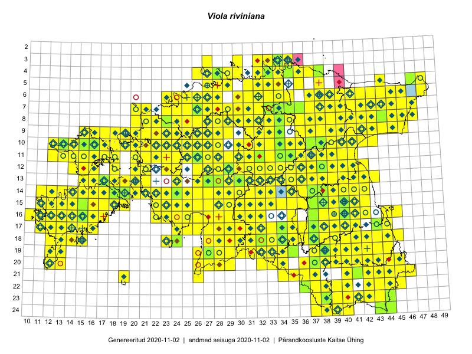

Viola riviniana — võsakannike
Violaceae :: Viola riviniana Rchb. (1864)

Kaart põhineb 2285 kirjel:
vaatlusi 1504
herbaareksemplare 360
PKÜ kirjeid1 170
ELFi kirjeid2 218
LVA kirjeid3 33
Taime kaasaegsed ja ajaloolised leiukohad asuvad 486 ruudus.
Tingmärgid ja leidudega ruutude arvud periooditi uues (u) ja 2005 andmestikus (v)
| █ | vahemik | u4 | v5 |
|---|---|---|---|
| █ | 2006–2020 | 469 | – |
| ◆/◇ | 1971–2005 | 275 | 290 |
| ○ | 1921–1970 | 143 | 39 |
| + | kuni 1920 | 21 | 6 |
| × | hävinud | – | 0 |
| ? | kaheldav | – | 0 |
| Ruut | Leidja(d) | Leiuaeg | Kirje |
|---|---|---|---|
| 20-40 | Toomas Kukk, Kersti Tambets, Sten Mander, Kristine Fenske | 2020-09-30 | ruut/ala: Viola riviniana Rchb. |
| 21-43 | Toomas Kukk, Kersti Tambets, Sten Mander, Kristine Fenske | 2020-09-30 | ruut/ala: Viola riviniana Rchb. |
| 13-18 | Meeli Mesipuu | 2020-09-13 | ruut/ala: Viola riviniana Rchb. |
| 19-39 | Toomas Kukk | 2020-09-12 | ruut/ala: Viola riviniana Rchb. |
| 19-39 | Toomas Kukk | 2020-09-12 | PKÜ: 21027 |
| 16-17 | Peedu Saar | 2020-09-11 | ruut/ala: Viola riviniana Rchb. |
| 16-17 | Peedu Saar | 2020-09-11 | PKÜ: 20932 |
| 16-15 | Ott Luuk, Meeli Mesipuu | 2020-09-11 | PKÜ: 21035 |
| 16-15 | Meeli Mesipuu | 2020-09-11 | PKÜ: 20560 |
| 16-17 | Toomas Kukk | 2020-09-10 | ruut/ala: Viola riviniana Rchb. |
| 08-32 | Peedu Saar | 2020-09-02 | PKÜ: 20908 |
| 16-22 | Peedu Saar | 2020-08-31 | ruut/ala: Viola riviniana Rchb. |
| 16-22 | Peedu Saar | 2020-08-31 | PKÜ: 20655 |
| 05-31 | Rein Kalamees | 2020-08-28 | ruut/ala: Viola riviniana Rchb. |
| 15-17 | Mari Reitalu, Sirje Azarov | 2020-08-27–2020-09-06 | ruut/ala: Viola riviniana Rchb. |
| 10-36 | Peedu Saar | 2020-08-25 | ruut/ala: Viola riviniana Rchb. |
| 10-32 | Ott Luuk | 2020-08-25 | PKÜ: 20583 |
| 18-33 | Ott Luuk, Jaak-Albert Metsoja | 2020-08-21 | ruut/ala: Viola riviniana Rchb. |
| 14-16 | Mari Reitalu, Sirje Azarov | 2020-08-20 | ruut/ala: Viola riviniana Rchb. |
| 13-16 | Mari Reitalu, Sirje Azarov | 2020-08-20 | ruut/ala: Viola riviniana Rchb. |
| 03-34 | Toomas Kukk, Ott Luuk, Kersti Tambets, Sten Mander, Kristine Fenske, Maie Itse | 2020-08-19 | ruut/ala: Viola riviniana Rchb. |
| 19-35 | Meeli Mesipuu | 2020-08-19 | ruut/ala: Viola riviniana Rchb. |
| 14-19 | Meeli Mesipuu | 2020-08-12 | ruut/ala: Viola riviniana Rchb. |
| 14-16 | Meeli Mesipuu | 2020-08-11 | PKÜ: 20312 |
| 14-16 | Meeli Mesipuu | 2020-08-11 | PKÜ: 20318 |
| 14-18 | Meeli Mesipuu | 2020-08-10 | PKÜ: 20278 |
| 10-23 | Ott Luuk | 2020-08-05 | ruut/ala: Viola riviniana Rchb. |
| 09-43 | Toomas Kukk | 2020-07-28 | ruut/ala: Viola riviniana Rchb. |
| 08-42 | Peedu Saar | 2020-07-28 | PKÜ: 20495 |
| 14-14 | Mari Reitalu, Sirje Azarov, Aira Alasi | 2020-07-23 | ruut/ala: Viola riviniana Rchb. |
| 08-25 | Ott Luuk | 2020-07-22–2020-07-23 | ruut/ala: Viola riviniana Rchb. |
| 09-26 | Ott Luuk | 2020-07-21–2020-07-23 | ruut/ala: Viola riviniana Rchb. |
| 16-39 | Toomas Kukk, Peedu Saar, Art Villem Adojaan | 2020-07-15 | ruut/ala: Viola riviniana Rchb. |
| 17-15 | Toomas Kukk | 2020-07-03 | PKÜ: 21199 |
| 17-15 | Toomas Kukk | 2020-07-03 | PKÜ: 21201 |
| 17-15 | Mari Reitalu, Sirje Azarov | 2020-07-02 | ruut/ala: Viola riviniana Rchb. |
| 04-33 | Rein Kalamees | 2020-06-26 | PKÜ: 20235 |
| 04-28 | Ott Luuk | 2020-06-22 | ruut/ala: Viola riviniana Rchb. |
| 08-28 | Ott Luuk | 2020-06-21 | ruut/ala: Viola riviniana Rchb. |
| 07-28 | Ott Luuk | 2020-06-21 | ruut/ala: Viola riviniana Rchb. |
| 07-29 | Toomas Kukk, Martin Tikk, Rein Kalamees | 2020-06-17 | ruut/ala: Viola riviniana Rchb. |
| 09-28 | Toomas Kukk, Rein Kalamees | 2020-06-15 | PKÜ: 20466 |
| 04-32 | Peedu Saar, Ene Kook | 2020-06-11 | ruut/ala: Viola riviniana Rchb. |
| 04-32 | Peedu Saar | 2020-06-11 | PKÜ: 20375 |
| 03-33 | Toomas Kukk, Meeli Mesipuu | 2020-06-10 | ruut/ala: Viola riviniana Rchb. |
| 04-33 | Peedu Saar | 2020-06-10 | ruut/ala: Viola riviniana Rchb. |
| 04-34 | Ene Kook, Peedu Saar | 2020-06-08 | PKÜ: 20287 |
| 22-38 | Triin Tanilas | 2020-06-07 | punkt: Viola riviniana Rchb. |
| 11-24 | Jane Pärnalaas | 2020-06-07 | punkt: Viola riviniana Rchb. |
| 12-37 | Enn Selgis, Ulvi Selgis | 2020-06-07 | punkt: Viola riviniana Rchb. |
| 13-37 | Ulvi Selgis, Enn Selgis | 2020-06-06 | punkt: Viola riviniana Rchb. |
| 22-43 | Margus Ots, Karin Pai, Margit Hirv, Marko Mägi, Kadi Külm, Kuido Külm, Ekke Rikka, Sigrid Ots, Triin Karusaar, Veljo Runnel, Uku Laur Pai | 2020-06-06 | punkt: Viola riviniana Rchb. |
| 22-43 | Margit Hirv | 2020-06-06 | punkt: Viola riviniana Rchb. |
| 10-28 | Kalev Tihkan | 2020-06-06 | punkt: Viola riviniana Rchb. |
| 08-31 | Kaarel Võhandu, Riinu Rannap | 2020-06-06 | punkt: Viola riviniana Rchb. |
| 09-29 | Ulvi Selgis | 2020-06-03 | LVA: -1260015260 |
| 15-24 | Ants Animägi | 2020-06-03 | LVA: 1704929778 |
| 13-37 | Ulvi Selgis | 2020-05-31 | LVA: -1622328774 |
| 17-15 | Mari Reitalu, Sirje Azarov, Triin Reitalu | 2020-05-28 | ruut/ala: Viola riviniana Rchb. |
| 17-14 | Mari Reitalu, Triin Reitalu, Sirje Azarov | 2020-05-26 | ruut/ala: Viola riviniana Rchb. |
| 10-22 | Ants Animägi | 2020-05-26 | LVA: 454221678 |
| 13-37 | Ulvi Selgis | 2020-05-24 | LVA: -1277714678 |
| 09-38 | Avo Veermäe | 2020-05-19 | LVA: -1428863274 |
| 13-37 | Enn Selgis | 2020-05-17 | LVA: 216107094 |
| 15-12 | Ants Animägi | 2020-05-16 | LVA: 1413463426 |
| 16-16 | Ants Animägi | 2020-05-14 | LVA: -1440728456 |
| 14-22 | Ants Animägi | 2020-05-06 | LVA: -1082484674 |
| 11-17 | Toomas Kukk, Rein Kalamees | 2019-10-05 | ruut/ala: Viola riviniana Rchb. |
| 09-45 | Ott Luuk | 2019-09-27 | ruut/ala: Viola riviniana Rchb. |
| 15-17 | Peedu Saar, Toomas Kukk | 2019-09-26 | ruut/ala: Viola riviniana Rchb. |
| 18-28 | Peedu Saar, Toomas Kukk | 2019-09-25 | ruut/ala: Viola riviniana Rchb. |
| 18-41 | Peedu Saar, Ott Luuk | 2019-09-24 | ruut/ala: Viola riviniana Rchb. |
| 21-45 | Peedu Saar, Ott Luuk | 2019-09-24 | ruut/ala: Viola riviniana Rchb. |
| 15-14 | Mari Reitalu, Sirje Azarov | 2019-09-23 | ELF: 75 |
| 17-13 | Mari Reitalu, Triin Reitalu | 2019-09-20 | ruut/ala: Viola riviniana Rchb. |
| 10-22 | Toomas Kukk, Peedu Saar | 2019-09-19 | ruut/ala: Viola riviniana Rchb. |
| 10-19 | Peedu Saar, Toomas Kukk | 2019-09-18 | ruut/ala: Viola riviniana Rchb. |
| 10-20 | Ott Luuk | 2019-09-18 | ruut/ala: Viola riviniana Rchb. |
| 09-20 | Ott Luuk | 2019-09-18 | ruut/ala: Viola riviniana Rchb. |
| 09-19 | Toomas Kukk, Peedu Saar | 2019-09-17 | ruut/ala: Viola riviniana Rchb. |
| 09-18 | Ott Luuk | 2019-09-17 | ruut/ala: Viola riviniana Rchb. |
| 07-45 | Thea Kull, Toomas Kukk | 2019-09-12 | ruut/ala: Viola riviniana Rchb. |
| 05-48 | Peedu Saar, Timo Luhamäe | 2019-09-12 | ruut/ala: Viola riviniana Rchb. |
| 07-44 | Meeli Mesipuu, Ott Luuk | 2019-09-12 | ruut/ala: Viola riviniana Rchb. |
| 06-46 | Toomas Kukk, Thea Kull | 2019-09-11 | ruut/ala: Viola riviniana Rchb. |
| 06-45 | Thea Kull, Toomas Kukk | 2019-09-11 | punkt: Viola riviniana Rchb. |
| 06-44 | Ott Luuk, Meeli Mesipuu | 2019-09-11 | ruut/ala: Viola riviniana Rchb. |
| 10-39 | Toomas Kukk, Thea Kull | 2019-09-10 | ruut/ala: Viola riviniana Rchb. |
| 10-40 | Toomas Kukk, Thea Kull | 2019-09-10 | ruut/ala: Viola riviniana Rchb. |
| 08-41 | Peedu Saar, Timo Luhamäe | 2019-09-10 | ruut/ala: Viola riviniana Rchb. |
| 08-43 | Ott Luuk, Meeli Mesipuu | 2019-09-10 | ruut/ala: Viola riviniana Rchb. |
| 08-24 | Peedu Saar, Ott Luuk | 2019-09-05 | ruut/ala: Viola riviniana Rchb. |
| 08-24 | Peedu Saar, Ott Luuk | 2019-09-05 | ruut/ala: Viola riviniana Rchb. |
| 08-25 | Ott Luuk, Peedu Saar | 2019-09-05 | ruut/ala: Viola riviniana Rchb. |
| 09-22 | Ott Luuk | 2019-09-03–2019-09-04 | ruut/ala: Viola riviniana Rchb. |
| 15-29 | Peedu Saar, Toomas Kukk | 2019-08-29 | ruut/ala: Viola riviniana Rchb. |
| 13-32 | Ott Luuk, Eerik Leibak | 2019-08-29 | ruut/ala: Viola riviniana Rchb. |
| 13-31 | Ott Luuk, Eerik Leibak | 2019-08-29 | ruut/ala: Viola riviniana Rchb. |
| 14-32 | Meeli Mesipuu, Timo Luhamäe | 2019-08-29 | ruut/ala: Viola riviniana Rchb. |
| 14-33 | Meeli Mesipuu, Timo Luhamäe | 2019-08-29 | ruut/ala: Viola riviniana Rchb. |
| 16-32 | Mari Reitalu, Thea Kull, Martin Tikk | 2019-08-29 | ruut/ala: Viola riviniana Rchb. |
| 14-31 | Ott Luuk, Eerik Leibak | 2019-08-28 | ruut/ala: Viola riviniana Rchb. |
| 14-30 | Ott Luuk, Eerik Leibak | 2019-08-28 | ruut/ala: Viola riviniana Rchb. |
| 15-31 | Meeli Mesipuu, Timo Luhamäe | 2019-08-28 | ruut/ala: Viola riviniana Rchb. |
| 06-26 | Rein Kalamees | 2019-08-27 | ruut/ala: Viola riviniana Rchb. |
| 13-36 | Ott Luuk, Eerik Leibak | 2019-08-27 | ruut/ala: Viola riviniana Rchb. |
| 12-36 | Ott Luuk, Eerik Leibak | 2019-08-27 | ruut/ala: Viola riviniana Rchb. |
| 21-45 | Rein Kalamees | 2019-08-23 | punkt: Viola riviniana Rchb. |
| 10-23 | Peedu Saar, Ott Luuk, Sten Mander, Kersti Tambets, Kristine Fenske | 2019-08-22 | ruut/ala: Viola riviniana Rchb. |
| 18-44 | Peedu Saar, Ott Luuk | 2019-08-21 | ruut/ala: Viola riviniana Rchb. |
| 16-13 | Mari Reitalu, Sirje Azarov | 2019-08-15 | ELF: 12 |
| 09-40 | Rein Kalamees, Toomas Kukk | 2019-08-09 | ruut/ala: Viola riviniana Rchb. |
| 16-12 | Mari Reitalu, Sirje Azarov | 2019-08-09 | ELF: 51 |
| 08-39 | Rein Kalamees, Toomas Kukk | 2019-08-08 | ruut/ala: Viola riviniana Rchb. |
| 09-39 | Rein Kalamees, Toomas Kukk | 2019-08-08 | ruut/ala: Viola riviniana Rchb. |
| 07-33 | Ott Luuk, Jaak-Albert Metsoja | 2019-08-08 | ruut/ala: Viola riviniana Rchb. |
| 07-34 | Toomas Kukk, Rein Kalamees, Kaur Maran | 2019-08-07 | ruut/ala: Viola riviniana Rchb. |
| 03-32 | Ott Luuk, Jaak-Albert Metsoja | 2019-08-07 | ruut/ala: Viola riviniana Rchb. |
| 03-34 | Toomas Kukk, Rein Kalamees | 2019-08-06 | TAA0148680: Viola riviniana Rchb. |
| 04-32 | Rein Kalamees, Toomas Kukk | 2019-08-05 | ruut/ala: Viola riviniana Rchb. |
| 06-31 | Peedu Saar, Timo Luhamäe | 2019-08-05 | ruut/ala: Viola riviniana Rchb. |
| 04-27 | Ott Luuk | 2019-08-02 | ruut/ala: Viola riviniana Rchb. |
| 10-32 | Ott Luuk | 2019-07-31 | ruut/ala: Viola riviniana Rchb. |
| 09-31 | Ott Luuk, Toivo Sepp | 2019-07-25 | ruut/ala: Viola riviniana Rchb. |
| 07-21 | Peedu Saar | 2019-07-24 | ruut/ala: Viola riviniana Rchb. |
| 10-26 | Rein Kalamees | 2019-07-17 | ruut/ala: Viola riviniana Rchb. |
| 16-40 | Meeli Mesipuu | 2019-07-17 | ruut/ala: Viola riviniana Rchb. |
| 17-12 | Mari Reitalu | 2019-07-14 | ELF: 24782 |
| 23-42 | Toomas Kukk, Indrek Tammekänd | 2019-07-12 | ruut/ala: Viola riviniana Rchb. |
| 23-38 | Peedu Saar, Timo Luhamäe | 2019-07-12 | ruut/ala: Viola riviniana Rchb. |
| 24-37 | Peedu Saar, Timo Luhamäe | 2019-07-12 | ruut/ala: Viola riviniana Rchb. |
| 22-44 | Ott Luuk, Tiit Hallikma | 2019-07-12 | ruut/ala: Viola riviniana Rchb. |
| 19-40 | Meeli Mesipuu | 2019-07-12 | ruut/ala: Viola riviniana Rchb. |
| 23-44 | Ott Luuk, Tiit Hallikma | 2019-07-11 | ruut/ala: Viola riviniana Rchb. |
| 24-44 | Ott Luuk, Tiit Hallikma | 2019-07-11 | ruut/ala: Viola riviniana Rchb. |
| 24-43 | Ott Luuk, Tiit Hallikma | 2019-07-11 | ruut/ala: Viola riviniana Rchb. |
| 23-43 | Ott Luuk, Tiit Hallikma | 2019-07-11 | ruut/ala: Viola riviniana Rchb. |
| 21-40 | Toomas Kukk, Indrek Tammekänd | 2019-07-10 | ruut/ala: Viola riviniana Rchb. |
| 22-38 | Peedu Saar, Timo Luhamäe | 2019-07-10 | ruut/ala: Viola riviniana Rchb. |
| 20-45 | Ott Luuk, Tiit Hallikma | 2019-07-10 | ruut/ala: Viola riviniana Rchb. |
| 18-41 | Meeli Mesipuu | 2019-07-10 | ruut/ala: Viola riviniana Rchb. |
| 20-41 | Toomas Kukk, Indrek Tammekänd | 2019-07-09 | ruut/ala: Viola riviniana Rchb. |
| 18-42 | Thea Kull, Meeli Mesipuu | 2019-07-09 | ruut/ala: Viola riviniana Rchb. |
| 20-44 | Ott Luuk, Tiit Hallikma | 2019-07-09 | ruut/ala: Viola riviniana Rchb. |
| 10-13 | Toomas Kukk | 2019-07-04 | ruut/ala: Viola riviniana Rchb. |
| 10-16 | Toomas Kukk | 2019-07-03 | ruut/ala: Viola riviniana Rchb. |
| 11-14 | Toomas Kukk | 2019-07-02 | ruut/ala: Viola riviniana Rchb. |
| 11-15 | Toomas Kukk | 2019-07-02 | ruut/ala: Viola riviniana Rchb. |
| 14-11 | Mari Reitalu | 2019-06-20 | ruut/ala: Viola riviniana Rchb. |
| 14-11 | Mari Reitalu | 2019-06-20 | ELF: 2894 |
| 17-40 | Meeli Mesipuu | 2019-06-19 | ruut/ala: Viola riviniana Rchb. |
| 10-28 | Ott Luuk | 2019-06-14 | punkt: Viola riviniana Rchb. |
| 19-38 | Maris Turb | 2019-06-14 | punkt: Viola riviniana Rchb. |
| 10-28 | Aat Sarv, Ott Luuk | 2019-06-14 | punkt: Viola riviniana Rchb. |
| 08-37 | Ott Luuk, Peedu Saar | 2019-06-12 | ruut/ala: Viola riviniana Rchb. |
| 11-37 | Ott Luuk, Peedu Saar | 2019-06-10 | ruut/ala: Viola riviniana Rchb. |
| 17-30 | Indrek Tammekänd | 2019-06-10 | ruut/ala: Viola riviniana Rchb. |
| 06-28 | Toomas Kukk | 2019-06-05 | ruut/ala: Viola riviniana Rchb. |
| 15-26 | Indrek Tammekänd | 2019-06-05 | ruut/ala: Viola riviniana Rchb. |
| 10-13 | Toomas Kukk, Indrek Tammekänd | 2019-06-02 | ruut/ala: Viola riviniana Rchb. |
| 15-40 | Ott Luuk, Thea Kull, Meeli Mesipuu | 2019-05-30 | ruut/ala: Viola riviniana Rchb. |
| 13-37 | Ott Luuk, Sten Mander, Kersti Tambets, Toomas Kukk | 2019-05-28 | punkt: Viola riviniana Rchb. |
| 12-38 | Ott Luuk | 2019-05-28 | TAA0151580: Viola riviniana Rchb. |
| 09-33 | Ants Animägi | 2019-05-22 | LVA: -2062695008 |
| 10-13 | Peedu Saar | 2019-05-21 | ruut/ala: Viola riviniana Rchb. |
| 10-13 | Peedu Saar | 2019-05-21 | punkt: Viola riviniana Rchb. |
| 11-17 | Toomas Kukk, Peedu Saar | 2019-05-20 | punkt: Viola riviniana Rchb. |
| 10-17 | Peedu Saar | 2019-05-20 | ruut/ala: Viola riviniana Rchb. |
| 11-17 | Peedu Saar | 2019-05-20 | ruut/ala: Viola riviniana Rchb. |
| 08-29 | Alvar Jõekaar | 2019-05-18 | LVA: -2134552750 |
| 12-38 | Ulvi Selgis | 2019-05-17 | LVA: -71413910 |
| 17-38 | Meeli Mesipuu, Thea Kull | 2019-05-17 | punkt: Viola riviniana Rchb. |
| 17-40 | Meeli Mesipuu, Thea Kull | 2019-05-17 | punkt: Viola riviniana Rchb. |
| 15-13 | Peedu Saar | 2019-05-15 | punkt: Viola riviniana Rchb. |
| 13-17 | Ott Luuk | 2019-05-15 | TAA0151586: Viola riviniana Rchb. |
| 14-24 | Peedu Saar, Ott Luuk, Toomas Kukk | 2019-05-13 | TAA0149422: Viola riviniana Rchb. |
| 14-19 | Ott Luuk, Peedu Saar, Toomas Kukk | 2019-05-13 | punkt: Viola riviniana Rchb. |
| 07-34 | Meeli Mesipuu | 2019-05-13 | ruut/ala: Viola riviniana Rchb. |
| 07-34 | Meeli Mesipuu | 2019-05-13 | punkt: Viola riviniana Rchb. |
| 21-42 | Ott Luuk, Meeli Mesipuu | 2019-05-09 | punkt: Viola riviniana Rchb. |
| 19-38 | Ott Luuk, Meeli Mesipuu | 2019-05-09 | ruut/ala: Viola riviniana Rchb. |
| 19-39 | Ott Luuk, Meeli Mesipuu | 2019-05-09 | ruut/ala: Viola riviniana Rchb. |
| 21-42 | Ott Luuk, Meeli Mesipuu | 2019-05-09 | ruut/ala: Viola riviniana Rchb. |
| 19-42 | Ott Luuk, Meeli Mesipuu | 2019-05-09 | punkt: Viola riviniana Rchb. |
| 19-38 | Ott Luuk, Meeli Mesipuu | 2019-05-09 | TAA0151590: Viola riviniana Rchb. |
| 04-33 | Meeli Mesipuu, Tiiu Kull | 2019-05-09 | TAA0151289: Viola riviniana Rchb. |
| 19-38 | Meeli Mesipuu, Ott Luuk | 2019-05-09 | TAA0151287: Viola riviniana Rchb. |
| 19-38 | Meeli Mesipuu, Ott Luuk | 2019-05-09 | TAA0151288: Viola riviniana Rchb. |
| 08-31 | Meeli Mesipuu, Eerik Leibak, Tiiu Kull | 2019-05-06 | punkt: Viola riviniana Rchb. |
| 18-37 | Oskar Rumm | 2019-05-03 | LVA: -312813072 |
| 15-11 | Ants Animägi | 2019-05-03 | LVA: 1845651184 |
| 14-37 | Ott Luuk, Meeli Mesipuu | 2019-05-02 | punkt: Viola riviniana Rchb. |
| 14-38 | Meeli Mesipuu, Ott Luuk | 2019-05-02 | TAA0151290: Viola riviniana Rchb. |
| 14-37 | Meeli Mesipuu, Ott Luuk | 2019-05-02 | TAA0151292: Viola riviniana Rchb. |
| 12-37 | Ulvi Selgis | 2019-05-01 | LVA: -1547879418 |
| 20-39 | Toomas Kukk, Eerik Leibak | 2019-04-28 | punkt: Viola riviniana Rchb. |
| 17-37 | Ott Luuk, Peedu Saar | 2019-04-25 | TAA0151591: Viola riviniana Rchb. |
| 09-29 | Alvar Jõekaar | 2019-04-25 | LVA: 1390504278 |
| 12-37 | Ott Luuk, Meeli Mesipuu | 2018-09-20 | ruut/ala: Viola riviniana Rchb. |
| 09-37 | Rein Kalamees | 2018-09-07 | ruut/ala: Viola riviniana Rchb. |
| 04-28 | Ott Luuk | 2018-09-07 | ruut/ala: Viola riviniana Rchb. |
| 04-28 | Ott Luuk | 2018-09-07 | TAA0147358: Viola riviniana Rchb. |
| 09-25 | Ott Luuk, Thea Kull | 2018-09-06 | ruut/ala: Viola riviniana Rchb. |
| 09-42 | Peedu Saar, Toomas Kukk | 2018-09-04 | ruut/ala: Viola riviniana Rchb. |
| 10-32 | Ott Luuk | 2018-08-28 | ruut/ala: Viola riviniana Rchb. |
| 20-44 | Toomas Kukk, Eerik Leibak, Timo Luhamäe | 2018-08-27 | ruut/ala: Viola riviniana Rchb. |
| 10-30 | Ott Luuk, Toivo Sepp | 2018-08-27 | ruut/ala: Viola riviniana Rchb. |
| 11-28 | Ott Luuk, Toivo Sepp | 2018-08-24–2018-08-30 | ruut/ala: Viola riviniana Rchb. |
| 14-38 | Peedu Saar | 2018-08-23 | ruut/ala: Viola riviniana Rchb. |
| 14-37 | Peedu Saar | 2018-08-23 | ruut/ala: Viola riviniana Rchb. |
| 11-31 | Ott Luuk | 2018-08-23 | ruut/ala: Viola riviniana Rchb. |
| 09-28 | Peedu Saar, Toomas Kukk, Ott Luuk, Kersti Tambets, Sten Mander | 2018-08-16 | ruut/ala: Viola riviniana Rchb. |
| 19-28 | Peedu Saar, Polina Degtjarenko | 2018-08-14 | ruut/ala: Viola riviniana Rchb. |
| 17-12 | Triin Reitalu, Mari Reitalu | 2018-08-11 | punkt: Viola riviniana Rchb. |
| 16-12 | Triin Reitalu, Mari Reitalu | 2018-08-09 | punkt: Viola riviniana Rchb. |
| 07-28 | Peedu Saar, Toomas Kukk | 2018-08-07 | ruut/ala: Viola riviniana Rchb. |
| 14-16;14-17 | Mari Reitalu, Sirje Azarov | 2018-08-07 | ELF: 2585 |
| 14-14 | Mari Reitalu, Sirje Azarov | 2018-08-07 | ELF: 24665 |
| 17-12 | Triin Reitalu, Mari Lepik | 2018-08-06 | punkt: Viola riviniana Rchb. |
| 17-12 | Triin Reitalu, Mari Lepik | 2018-08-06 | punkt: Viola riviniana Rchb. |
| 16-12 | Triin Reitalu, Mari Reitalu | 2018-08-03 | punkt: Viola riviniana Rchb. |
| 10-31 | Ott Luuk | 2018-08-01 | ruut/ala: Viola riviniana Rchb. |
| 22-42 | Toomas Kukk | 2018-07-18 | ruut/ala: Viola riviniana Rchb. |
| 09-26 | Thea Kull | 2018-07-15 | ELF: 24025 |
| 15-12 | Triin Reitalu, Ansis Blaus | 2018-07-13 | punkt: Viola riviniana Rchb. |
| 16-12 | Triin Reitalu, Ansis Blaus | 2018-07-13 | punkt: Viola riviniana Rchb. |
| 15-12 | Triin Reitalu, Ansis Blaus | 2018-07-12 | punkt: Viola riviniana Rchb. |
| 15-12 | Triin Reitalu, Ansis Blaus | 2018-07-12 | punkt: Viola riviniana Rchb. |
| 15-13 | Triin Reitalu, Ansis Blaus | 2018-07-11 | punkt: Viola riviniana Rchb. |
| 15-13 | Triin Reitalu, Ansis Blaus | 2018-07-11 | punkt: Viola riviniana Rchb. |
| 14-13 | Triin Reitalu, Ansis Blaus | 2018-07-10 | punkt: Viola riviniana Rchb. |
| 17-12 | Mari Reitalu, Sirje Azarov | 2018-07-10 | ELF: 16272 |
| 14-14 | Triin Reitalu, Ansis Blaus | 2018-07-09 | punkt: Viola riviniana Rchb. |
| 14-14 | Triin Reitalu, Ansis Blaus | 2018-07-09 | punkt: Viola riviniana Rchb. |
| 11-18 | Meeli Mesipuu | 2018-07-09 | ruut/ala: Viola riviniana Rchb. |
| 07-35 | Thea Kull, Katrin Kaldma | 2018-07-07 | ELF: 10544 |
| 06-23 | Ott Luuk, Meeli Mesipuu, Jaak-Albert Metsoja, Mari Metsoja, Peedu Saar | 2018-07-04–2018-07-06 | ruut/ala: Viola riviniana Rchb. |
| 08-27 | Mari Reitalu, Sirje Azarov | 2018-07-01 | ruut/ala: Viola riviniana Rchb. |
| 07-28 | Mari Reitalu, Sirje Azarov | 2018-06-30 | ruut/ala: Viola riviniana Rchb. |
| 06-47 | Alar Soppe | 2018-06-28 | ELF: 844 |
| 17-40 | Margus Ots, Sigrid Ots, Ekke Rikka | 2018-06-16 | punkt: Viola riviniana Rchb. |
| 07-33 | Indrek Tammekänd, Eike Tammekänd, Murel Truu | 2018-06-09–2018-06-10 | ruut/ala: Viola riviniana Rchb. |
| 19-34 | Mari Reitalu, Elle Roosaluste | 2018-06-02 | ruut/ala: Viola riviniana Rchb. |
| 16-14 | Toomas Kukk, Ilmar Uibopuu, Mari Reitalu | 2018-05-28 | ruut/ala: Viola riviniana Rchb. |
| 15-11 | Toomas Kukk, Ilmar Uibopuu, Mari Reitalu | 2018-05-28 | punkt: Viola riviniana Rchb. |
| 16-14 | Toomas Kukk, Ilmar Uibopuu, Mari Reitalu | 2018-05-28 | punkt: Viola riviniana Rchb. |
| 16-15 | Toomas Kukk, Ilmar Uibopuu | 2018-05-27 | ruut/ala: Viola riviniana Rchb. |
| 15-19 | Mari Reitalu, Sirje Azarov, Maris Sepp | 2018-05-23 | ruut/ala: Viola riviniana Rchb. |
| 10-37 | Ulvi Selgis | 2018-05-21 | LVA: 396053604 |
| 16-25 | Ranno Puumets | 2018-05-20 | ruut/ala: Viola riviniana Rchb. |
| 24-44 | Toomas Kukk, Peedu Saar | 2018-05-17 | TAA0146618: Viola riviniana Rchb. |
| 24-44 | Peedu Saar, Toomas Kukk | 2018-05-17 | punkt: Viola riviniana Rchb. |
| 24-43 | Peedu Saar, Toomas Kukk | 2018-05-17 | TAA0145897: Viola riviniana Rchb. |
| 23-44 | Peedu Saar, Toomas Kukk | 2018-05-17 | TAA0145898: Viola riviniana Rchb. |
| 21-46 | Peedu Saar, Toomas Kukk, Ain Piir | 2018-05-16 | punkt: Viola riviniana Rchb. |
| 21-45 | Peedu Saar, Toomas Kukk | 2018-05-16 | punkt: Viola riviniana Rchb. |
| 11-27 | Ranno Puumets | 2018-05-13 | ruut/ala: Viola riviniana Rchb. |
| 16-23 | Indrek Tammekänd | 2017-10-19 | ruut/ala: Viola riviniana Rchb. |
| 03-30 | Peedu Saar | 2017-09-29 | ruut/ala: Viola riviniana Rchb. |
| 08-38 | Peedu Saar, Toomas Kukk | 2017-09-27 | ruut/ala: Viola riviniana Rchb. |
| 10-14 | Peedu Saar, Ott Luuk | 2017-09-14 | ruut/ala: Viola riviniana Rchb. |
| 10-13 | Ott Luuk, Peedu Saar | 2017-09-14 | ruut/ala: Viola riviniana Rchb. |
| 11-15 | Peedu Saar, Ott Luuk | 2017-09-13 | ruut/ala: Viola riviniana Rchb. |
| 11-14 | Ott Luuk, Peedu Saar | 2017-09-13 | ruut/ala: Viola riviniana Rchb. |
| 11-16 | Ott Luuk, Peedu Saar | 2017-09-13 | ruut/ala: Viola riviniana Rchb. |
| 11-12 | Toomas Kukk, Indrek Tammekänd | 2017-09-12 | ruut/ala: Viola riviniana Rchb. |
| 11-13 | Toomas Kukk, Indrek Tammekänd | 2017-09-12 | ruut/ala: Viola riviniana Rchb. |
| 10-12 | Toomas Kukk, Indrek Tammekänd | 2017-09-12 | ruut/ala: Viola riviniana Rchb. |
| 09-17 | Peedu Saar, Ott Luuk | 2017-09-12 | ruut/ala: Viola riviniana Rchb. |
| 10-18 | Ott Luuk, Peedu Saar | 2017-09-12 | ruut/ala: Viola riviniana Rchb. |
| 11-17 | Toomas Kukk, Indrek Tammekänd | 2017-09-11 | ruut/ala: Viola riviniana Rchb. |
| 10-17 | Ott Luuk, Peedu Saar | 2017-09-11 | ruut/ala: Viola riviniana Rchb. |
| 08-29 | Peedu Saar, Toomas Kukk | 2017-09-08 | ruut/ala: Viola riviniana Rchb. |
| 08-31 | Rein Kalamees | 2017-09-06 | ruut/ala: Viola riviniana Rchb. |
| 20-29 | Toomas Kukk, Ott Luuk, Kersti Tambets, Timo Luhamäe, Sten Mander | 2017-08-30 | ruut/ala: Viola riviniana Rchb. |
| 11-40 | Peedu Saar, Ott Luuk | 2017-08-23 | ruut/ala: Viola riviniana Rchb. |
| 14-36 | Indrek Tammekänd | 2017-08-16 | ruut/ala: Viola riviniana Rchb. |
| 14-35 | Peedu Saar | 2017-08-15–2017-09-16 | ruut/ala: Viola riviniana Rchb. |
| 14-36 | Meeli Mesipuu, Helen Toom | 2017-08-15 | ruut/ala: Viola riviniana Rchb. |
| 09-24 | Mari Reitalu, Eerik Leibak | 2017-08-11 | ruut/ala: Viola riviniana Rchb. |
| 15-29 | Ilmar Uibopuu, Toomas Kukk | 2017-08-11 | ruut/ala: Viola riviniana Rchb. |
| 11-25 | Toomas Kukk, Eerik Leibak | 2017-08-10 | ruut/ala: Viola riviniana Rchb. |
| 07-25 | Mari Reitalu, Indrek Tammekänd | 2017-08-10 | ruut/ala: Viola riviniana Rchb. |
| 07-23 | Mari Reitalu, Indrek Tammekänd | 2017-08-10 | ruut/ala: Viola riviniana Rchb. |
| 09-29 | Toomas Kukk, Ilmar Uibopuu, Kadri Kuusksalu | 2017-08-09 | ruut/ala: Viola riviniana Rchb. |
| 08-30 | Thea Kull, Ott Luuk | 2017-08-09 | ruut/ala: Viola riviniana Rchb. |
| 12-29 | Meeli Mesipuu, Indrek Tammekänd | 2017-08-09 | ruut/ala: Viola riviniana Rchb. |
| 12-30 | Meeli Mesipuu, Indrek Tammekänd | 2017-08-09 | ruut/ala: Viola riviniana Rchb. |
| 12-27 | Mari Reitalu, Eerik Leibak | 2017-08-09 | ruut/ala: Viola riviniana Rchb. |
| 12-26 | Mari Reitalu, Eerik Leibak | 2017-08-09 | ruut/ala: Viola riviniana Rchb. |
| 08-26 | Toomas Kukk, Ilmar Uibopuu, Kadri Kuusksalu | 2017-08-08 | ruut/ala: Viola riviniana Rchb. |
| 07-26 | Toomas Kukk, Ilmar Uibopuu, Kadri Kuusksalu | 2017-08-08 | ruut/ala: Viola riviniana Rchb. |
| 10-28 | Thea Kull, Ott Luuk | 2017-08-08 | ruut/ala: Viola riviniana Rchb. |
| 07-27 | Peedu Saar, Timo Luhamäe | 2017-08-08 | ruut/ala: Viola riviniana Rchb. |
| 11-28 | Ott Luuk, Thea Kull | 2017-08-08 | ruut/ala: Viola riviniana Rchb. |
| 09-27 | Meeli Mesipuu, Indrek Tammekänd | 2017-08-08 | ruut/ala: Viola riviniana Rchb. |
| 08-27 | Mari Reitalu, Eerik Leibak | 2017-08-08 | ruut/ala: Viola riviniana Rchb. |
| 08-28 | Mari Reitalu, Eerik Leibak | 2017-08-08 | ruut/ala: Viola riviniana Rchb. |
| 07-20 | Toomas Kukk | 2017-08-03 | ruut/ala: Viola riviniana Rchb. |
| 12-34 | Ott Luuk, Thea Kull | 2017-08-03 | ruut/ala: Viola riviniana Rchb. |
| 16-39 | Thea Kull, Ott Luuk | 2017-08-01 | ruut/ala: Viola riviniana Rchb. |
| 16-37 | Ott Luuk, Thea Kull | 2017-08-01 | ruut/ala: Viola riviniana Rchb. |
| 08-22 | Toomas Kukk, Ilmar Uibopuu | 2017-07-29 | ruut/ala: Viola riviniana Rchb. |
| 08-20 | Toomas Kukk, Ilmar Uibopuu | 2017-07-28 | ruut/ala: Viola riviniana Rchb. |
| 21-36 | Peedu Saar, Ott Luuk | 2017-07-28 | ruut/ala: Viola riviniana Rchb. |
| 06-23 | Toomas Kukk | 2017-07-27 | ruut/ala: Viola riviniana Rchb. |
| 23-39 | Peedu Saar, Ott Luuk | 2017-07-27 | ruut/ala: Viola riviniana Rchb. |
| 22-39 | Ott Luuk, Peedu Saar | 2017-07-27 | ruut/ala: Viola riviniana Rchb. |
| 06-24 | Toomas Kukk, Ilmar Uibopuu, Kadri Kuusksalu | 2017-07-26 | ruut/ala: Viola riviniana Rchb. |
| 06-23 | Toomas Kukk, Ilmar Uibopuu, Kadri Kuusksalu | 2017-07-26 | ruut/ala: Viola riviniana Rchb. |
| 14-39 | Peedu Saar | 2017-07-26 | ruut/ala: Viola riviniana Rchb. |
| 20-38 | Ott Luuk, Peedu Saar | 2017-07-25 | ruut/ala: Viola riviniana Rchb. |
| 12-42 | Peedu Saar | 2017-07-24 | ruut/ala: Viola riviniana Rchb. |
| 13-43 | Peedu Saar | 2017-07-24 | ruut/ala: Viola riviniana Rchb. |
| 20-39 | Triin Reitalu, Ansis Blaus | 2017-07-22 | punkt: Viola riviniana Rchb. |
| 06-33 | Ott Luuk, Peedu Saar | 2017-07-21 | ruut/ala: Viola riviniana Rchb. |
| 19-38 | Triin Reitalu, Ansis Blaus | 2017-07-20 | punkt: Viola riviniana Rchb. |
| 04-27 | Peedu Saar | 2017-07-20 | ruut/ala: Viola riviniana Rchb. |
| 04-26 | Ott Luuk | 2017-07-20 | ruut/ala: Viola riviniana Rchb. |
| 06-34 | Peedu Saar, Ott Luuk | 2017-07-19 | ruut/ala: Viola riviniana Rchb. |
| 08-38 | Ott Luuk, Peedu Saar | 2017-07-18 | ruut/ala: Viola riviniana Rchb. |
| 22-38 | Triin Reitalu, Ansis Blaus | 2017-07-17 | punkt: Viola riviniana Rchb. |
| 22-38 | Triin Reitalu, Ansis Blaus | 2017-07-17 | punkt: Viola riviniana Rchb. |
| 16-12 | Triin Reitalu, Mari Reitalu | 2017-07-10 | punkt: Viola riviniana Rchb. |
| 18-29 | Indrek Tammekänd | 2017-07-05 | ruut/ala: Viola riviniana Rchb. |
| 16-41 | Peedu Saar, Ott Luuk | 2017-07-03–2017-07-04 | ruut/ala: Viola riviniana Rchb. |
| 11-15 | Ott Luuk, Toomas Kukk, Peedu Saar, Sander Laherand | 2017-06-30 | ruut/ala: Viola riviniana Rchb. |
| 11-15 | Sander Laherand | 2017-06-23 | punkt: Viola riviniana Rchb. |
| 17-37 | Thea Kull, Ott Luuk | 2017-06-21 | ruut/ala: Viola riviniana Rchb. |
| 14-35 | Peedu Saar, Ott Luuk | 2017-06-20 | ruut/ala: Viola riviniana Rchb. |
| 15-35 | Ott Luuk, Peedu Saar | 2017-06-20 | ruut/ala: Viola riviniana Rchb. |
| 14-37 | Thea Kull, Meeli Mesipuu | 2017-06-19 | ruut/ala: Viola riviniana Rchb. |
| 12-18 | Toomas Kukk, Peeter Pärn | 2017-06-15 | ruut/ala: Viola riviniana Rchb. |
| 12-37 | Enn Selgis | 2017-06-03 | LVA: 1128709378 |
| 22-36 | Maria-Helena Noorlind | 2017-05-30 | TU284350: Viola riviniana Rchb. |
| 12-28 | Ott Luuk | 2017-05-28 | ruut/ala: Viola riviniana Rchb. |
| 13-29 | Ott Luuk | 2017-05-28 | ruut/ala: Viola riviniana Rchb. |
| 13-27 | Ott Luuk | 2017-05-28 | ruut/ala: Viola riviniana Rchb. |
| 13-27 | Ott Luuk | 2017-05-28 | TAA0142858: Viola riviniana Rchb. |
| 13-31 | Ott Luuk | 2017-05-27 | ruut/ala: Viola riviniana Rchb. |
| 14-37 | Ulvi Selgis | 2017-05-21 | LVA: -1151486444 |
| 12-37 | Ulvi Selgis | 2017-05-19 | LVA: -914324478 |
| 12-42 | Peedu Saar, Ott Luuk | 2017-05-18 | ruut/ala: Viola riviniana Rchb. |
| 12-40 | Ott Luuk, Peedu Saar | 2017-05-18 | ruut/ala: Viola riviniana Rchb. |
| 06-45 | Tõnu Ploompuu | 2017-05-13 | ruut/ala: Viola riviniana Rchb. |
| 04-38 | Meeli Mesipuu | 2017-05-11 | TAA0145092: Viola riviniana Rchb. |
| 15-12 | Toomas Kukk, Meeli Mesipuu | 2016-10-08 | ruut/ala: Viola riviniana Rchb. |
| 17-13 | Ott Luuk, Peedu Saar | 2016-10-08 | ruut/ala: Viola riviniana Rchb. |
| 14-11 | Peedu Saar, Ott Luuk | 2016-10-07 | ruut/ala: Viola riviniana Rchb. |
| 19-12 | Ott Luuk, Peedu Saar | 2016-10-07 | ruut/ala: Viola riviniana Rchb. |
| 15-11 | Meeli Mesipuu, Toomas Kukk, Mari Reitalu | 2016-10-07 | ruut/ala: Viola riviniana Rchb. |
| 14-13 | Toomas Kukk, Meeli Mesipuu, Mari Reitalu | 2016-10-06 | ruut/ala: Viola riviniana Rchb. |
| 19-30 | Peedu Saar, Ott Luuk | 2016-10-06 | ruut/ala: Viola riviniana Rchb. |
| 15-13 | Meeli Mesipuu, Toomas Kukk, Mari Reitalu | 2016-10-06 | ruut/ala: Viola riviniana Rchb. |
| 16-13 | Toomas Kukk, Meeli Mesipuu | 2016-10-05 | ruut/ala: Viola riviniana Rchb. |
| 08-32 | Ott Luuk, Peedu Saar | 2016-09-28 | ruut/ala: Viola riviniana Rchb. |
| 16-14 | Meeli Mesipuu | 2016-09-26 | ruut/ala: Viola riviniana Rchb. |
| 16-16 | Meeli Mesipuu | 2016-09-25 | ruut/ala: Viola riviniana Rchb. |
| 15-15 | Meeli Mesipuu | 2016-09-23 | ruut/ala: Viola riviniana Rchb. |
| 21-34 | Peedu Saar, Ott Luuk | 2016-09-22 | ruut/ala: Viola riviniana Rchb. |
| 21-35 | Ott Luuk, Peedu Saar | 2016-09-22 | ruut/ala: Viola riviniana Rchb. |
| 20-32 | Meeli Mesipuu, Ott Luuk | 2016-09-18 | ruut/ala: Viola riviniana Rchb. |
| 09-32 | Toomas Kukk, Peedu Saar | 2016-09-16 | ruut/ala: Viola riviniana Rchb. |
| 09-18 | Ott Luuk, Meeli Mesipuu | 2016-09-16 | ruut/ala: Viola riviniana Rchb. |
| 09-19 | Meeli Mesipuu, Ott Luuk | 2016-09-16 | ruut/ala: Viola riviniana Rchb. |
| 08-33 | Peedu Saar, Toomas Kukk | 2016-09-15 | ruut/ala: Viola riviniana Rchb. |
| 10-19 | Ott Luuk, Meeli Mesipuu | 2016-09-15 | ruut/ala: Viola riviniana Rchb. |
| 06-33 | Peedu Saar, Toomas Kukk | 2016-09-14 | ruut/ala: Viola riviniana Rchb. |
| 07-33 | Peedu Saar, Toomas Kukk | 2016-09-13 | ruut/ala: Viola riviniana Rchb. |
| 05-44 | Peedu Saar, Toomas Kukk | 2016-09-13 | ruut/ala: Viola riviniana Rchb. |
| 21-19 | Meeli Mesipuu, Ott Luuk | 2016-09-10 | ruut/ala: Viola riviniana Rchb. |
| 06-32 | Toomas Kukk, Peedu Saar | 2016-09-08 | ruut/ala: Viola riviniana Rchb. |
| 20-44 | Meeli Mesipuu | 2016-09-08 | ruut/ala: Viola riviniana Rchb. |
| 09-31 | Peedu Saar, Ott Luuk | 2016-09-07 | ruut/ala: Viola riviniana Rchb. |
| 10-25 | Peedu Saar, Ott Luuk | 2016-09-05 | ruut/ala: Viola riviniana Rchb. |
| 17-43 | Meeli Mesipuu | 2016-09-02 | ruut/ala: Viola riviniana Rchb. |
| 05-32 | Toomas Kukk, Sander Laherand | 2016-08-31 | ruut/ala: Viola riviniana Rchb. |
| 13-16 | Peedu Saar, Ott Luuk | 2016-08-31 | ruut/ala: Viola riviniana Rchb. |
| 14-16 | Ott Luuk, Peedu Saar | 2016-08-31 | ruut/ala: Viola riviniana Rchb. |
| 05-31 | Sander Laherand, Toomas Kukk | 2016-08-30 | ruut/ala: Viola riviniana Rchb. |
| 18-15 | Peedu Saar | 2016-08-30 | ruut/ala: Viola riviniana Rchb. |
| 18-14 | Ott Luuk | 2016-08-30 | ruut/ala: Viola riviniana Rchb. |
| 13-17 | Peedu Saar, Ott Luuk | 2016-08-29 | ruut/ala: Viola riviniana Rchb. |
| 14-17 | Ott Luuk, Peedu Saar | 2016-08-29 | ruut/ala: Viola riviniana Rchb. |
| 15-18 | Mari Reitalu, Hannes Pehlak | 2016-08-26 | ruut/ala: Viola riviniana Rchb. |
| 17-44 | Peedu Saar | 2016-08-24 | ruut/ala: Viola riviniana Rchb. |
| 20-36 | Thea Kull, Ott Luuk | 2016-08-23 | ruut/ala: Viola riviniana Rchb. |
| 23-44 | Peedu Saar, Karin Kikas | 2016-08-19 | ruut/ala: Viola riviniana Rchb. |
| 22-45 | Peedu Saar, Karin Kikas | 2016-08-18 | ruut/ala: Viola riviniana Rchb. |
| 21-44 | Peedu Saar, Karin Kikas | 2016-08-18 | ruut/ala: Viola riviniana Rchb. |
| 14-19 | Mari Reitalu, Sirje Azarov | 2016-08-18 | ruut/ala: Viola riviniana Rchb. |
| 13-20 | Mari Reitalu, Sirje Azarov | 2016-08-17 | ruut/ala: Viola riviniana Rchb. |
| 14-20 | Mari Reitalu, Sirje Azarov | 2016-08-17 | ruut/ala: Viola riviniana Rchb. |
| 13-19 | Mari Reitalu, Sirje Azarov | 2016-08-16 | ruut/ala: Viola riviniana Rchb. |
| 19-27 | Ott Luuk, Meeli Mesipuu | 2016-08-15 | ruut/ala: Viola riviniana Rchb. |
| 15-17 | Peedu Saar, Toomas Kukk | 2016-08-13 | ruut/ala: Viola riviniana Rchb. |
| 15-16 | Meeli Mesipuu, Maret Gerz | 2016-08-13 | ruut/ala: Viola riviniana Rchb. |
| 17-16 | Toomas Kukk, Meeli Mesipuu | 2016-08-12 | ruut/ala: Viola riviniana Rchb. |
| 14-14 | Peedu Saar, Maret Gerz | 2016-08-12 | ruut/ala: Viola riviniana Rchb. |
| 15-14 | Maret Gerz, Peedu Saar | 2016-08-12 | ruut/ala: Viola riviniana Rchb. |
| 17-14 | Toomas Kukk, Meeli Mesipuu, Johannes Kõdar | 2016-08-11 | ruut/ala: Viola riviniana Rchb. |
| 17-15 | Meeli Mesipuu, Toomas Kukk, Johannes Kõdar | 2016-08-11 | ruut/ala: Viola riviniana Rchb. |
| 13-15 | Maret Gerz, Peedu Saar | 2016-08-11 | ruut/ala: Viola riviniana Rchb. |
| 12-15 | Toomas Kukk, Meeli Mesipuu | 2016-08-10 | ruut/ala: Viola riviniana Rchb. |
| 12-14 | Toomas Kukk, Meeli Mesipuu | 2016-08-10 | ruut/ala: Viola riviniana Rchb. |
| 10-12 | Sander Laherand, Maret Gerz, Nele Jõessar | 2016-08-10 | ruut/ala: Viola riviniana Rchb. |
| 11-12 | Peedu Saar, Thea Kull | 2016-08-10 | ruut/ala: Viola riviniana Rchb. |
| 08-47 | Ott Luuk, Kersti Tambets, Janika Sammasto, Ülle Jõgar, Sten Mander | 2016-08-10 | ruut/ala: Viola riviniana Rchb. |
| 10-13 | Maret Gerz, Sander Laherand | 2016-08-10 | ruut/ala: Viola riviniana Rchb. |
| 14-18 | Mari Reitalu, Sirje Azarov | 2016-08-09–2016-08-10 | ruut/ala: Viola riviniana Rchb. |
| 10-15 | Toomas Kukk, Sander Laherand, Nele Jõessar | 2016-08-09 | ruut/ala: Viola riviniana Rchb. |
| 11-14 | Peedu Saar, Thea Kull | 2016-08-09 | ruut/ala: Viola riviniana Rchb. |
| 09-40 | Ott Luuk, Eerik Leibak | 2016-08-09 | ruut/ala: Viola riviniana Rchb. |
| 09-39 | Ott Luuk, Eerik Leibak | 2016-08-09 | ruut/ala: Viola riviniana Rchb. |
| 10-16 | Meeli Mesipuu, Maret Gerz | 2016-08-09 | ruut/ala: Viola riviniana Rchb. |
| 14-15 | Mari Reitalu, Sirje Azarov | 2016-08-09 | ruut/ala: Viola riviniana Rchb. |
| 11-16 | Toomas Kukk, Thea Kull | 2016-08-08 | ruut/ala: Viola riviniana Rchb. |
| 11-18 | Sander Laherand, Peedu Saar, Nele Jõessar | 2016-08-08 | ruut/ala: Viola riviniana Rchb. |
| 09-38 | Ott Luuk, Eerik Leibak | 2016-08-08 | ruut/ala: Viola riviniana Rchb. |
| 20-12 | Mari Reitalu, Sirje Azarov | 2016-08-08 | ruut/ala: Viola riviniana Rchb. |
| 20-13 | Mari Reitalu, Sirje Azarov | 2016-08-08 | ruut/ala: Viola riviniana Rchb. |
| 11-17 | Maret Gerz, Meeli Mesipuu | 2016-08-08 | ruut/ala: Viola riviniana Rchb. |
| 21-43 | Thea Kull, Peedu Saar | 2016-08-05 | ruut/ala: Viola riviniana Rchb. |
| 20-43 | Peedu Saar, Thea Kull | 2016-08-05 | ruut/ala: Viola riviniana Rchb. |
| 09-42 | Ott Luuk, Eerik Leibak | 2016-08-05 | ruut/ala: Viola riviniana Rchb. |
| 09-41 | Ott Luuk, Eerik Leibak | 2016-08-05 | ruut/ala: Viola riviniana Rchb. |
| 22-42 | Thea Kull, Peedu Saar | 2016-08-04 | ruut/ala: Viola riviniana Rchb. |
| 22-43 | Peedu Saar, Thea Kull | 2016-08-04 | ruut/ala: Viola riviniana Rchb. |
| 10-41 | Ott Luuk, Eerik Leibak | 2016-08-04 | ruut/ala: Viola riviniana Rchb. |
| 10-39 | Ott Luuk, Eerik Leibak | 2016-08-03 | ruut/ala: Viola riviniana Rchb. |
| 10-40 | Ott Luuk, Eerik Leibak | 2016-08-03 | ruut/ala: Viola riviniana Rchb. |
| 18-13 | Mari Reitalu, Sirje Azarov | 2016-07-31 | ruut/ala: Viola riviniana Rchb. |
| 08-42 | Peedu Saar, Timo Luhamäe | 2016-07-29 | ruut/ala: Viola riviniana Rchb. |
| 07-39 | Meeli Mesipuu, Liina Oja | 2016-07-29 | ruut/ala: Viola riviniana Rchb. |
| 17-41 | Kersti Püssa, Rein Kalamees | 2016-07-29 | ruut/ala: Viola riviniana Rchb. |
| 09-43 | Hannes Pehlak, Ott Luuk | 2016-07-29 | ruut/ala: Viola riviniana Rchb. |
| 04-33 | Meeli Mesipuu, Timo Luhamäe | 2016-07-28 | ruut/ala: Viola riviniana Rchb. |
| 08-38 | Liina Oja, Eerik Leibak | 2016-07-28 | ruut/ala: Viola riviniana Rchb. |
| 17-40 | Kersti Püssa, Rein Kalamees | 2016-07-28 | ruut/ala: Viola riviniana Rchb. |
| 07-35 | Toomas Kukk, Sander Laherand, Nele Jõessar | 2016-07-27 | ruut/ala: Viola riviniana Rchb. |
| 08-36 | Thea Kull, Timo Luhamäe | 2016-07-27 | ruut/ala: Viola riviniana Rchb. |
| 08-35 | Sander Laherand, Toomas Kukk, Nele Jõessar | 2016-07-27 | ruut/ala: Viola riviniana Rchb. |
| 05-33 | Ott Luuk, Hannes Pehlak | 2016-07-27 | ruut/ala: Viola riviniana Rchb. |
| 05-34 | Ott Luuk, Hannes Pehlak | 2016-07-27 | ruut/ala: Viola riviniana Rchb. |
| 07-37 | Meeli Mesipuu, Tiit Hallikma | 2016-07-27 | ruut/ala: Viola riviniana Rchb. |
| 16-41 | Kersti Püssa, Rein Kalamees | 2016-07-27 | ruut/ala: Viola riviniana Rchb. |
| 08-27 | Erkki Otsman, Sergei Smirnov | 2016-07-27 | ruut/ala: Viola riviniana Rchb. |
| 04-38 | Thea Kull, Susanna Vain, Eerik Leibak | 2016-07-26 | ruut/ala: Viola riviniana Rchb. |
| 04-37 | Thea Kull, Eerik Leibak, Susanna Vain | 2016-07-26 | ruut/ala: Viola riviniana Rchb. |
| 04-35 | Sander Laherand, Ott Luuk, Nele Jõessar | 2016-07-26 | ruut/ala: Viola riviniana Rchb. |
| 04-32 | Peedu Saar, Timo Luhamäe | 2016-07-26 | ruut/ala: Viola riviniana Rchb. |
| 03-35 | Ott Luuk, Sander Laherand, Nele Jõessar | 2016-07-26 | ruut/ala: Viola riviniana Rchb. |
| 04-36 | Meeli Mesipuu, Liina Oja | 2016-07-26 | ruut/ala: Viola riviniana Rchb. |
| 14-14 | Mari Reitalu, Sirje Azarov | 2016-07-26 | ruut/ala: Viola riviniana Rchb. |
| 18-24 | Karin Kaljund, Kaire Lanno, Indrek Melts | 2016-07-26 | TAA0144415: Viola riviniana Rchb. |
| 03-34 | Hannes Pehlak, Toomas Kukk | 2016-07-26 | ruut/ala: Viola riviniana Rchb. |
| 10-35 | Toomas Kukk, Tiit Hallikma | 2016-07-25 | ruut/ala: Viola riviniana Rchb. |
| 06-39 | Thea Kull, Hannes Pehlak | 2016-07-25 | ruut/ala: Viola riviniana Rchb. |
| 04-28 | Sander Laherand, Tõnu Ploompuu, Nele Jõessar | 2016-07-25 | ruut/ala: Viola riviniana Rchb. |
| 04-29 | Sander Laherand, Tõnu Ploompuu, Nele Jõessar | 2016-07-25 | ruut/ala: Viola riviniana Rchb. |
| 09-34 | Ott Luuk, Eerik Leibak | 2016-07-25 | ruut/ala: Viola riviniana Rchb. |
| 11-36 | Meeli Mesipuu, Timo Luhamäe | 2016-07-25 | ruut/ala: Viola riviniana Rchb. |
| 17-38 | Kersti Püssa, Rein Kalamees | 2016-07-25 | ruut/ala: Viola riviniana Rchb. |
| 15-37 | Karin Kaljund, Kaire Lanno | 2016-07-25 | TAA0144408: Viola riviniana Rchb. |
| 08-31 | Erkki Otsman, Sergei Smirnov | 2016-07-24 | ruut/ala: Viola riviniana Rchb. |
| 13-38 | Eeva-Maria Jeletsky, Tarmo Niitla | 2016-07-23 | ruut/ala: Viola riviniana Rchb. |
| 12-33 | Tõnu Ploompuu, Marko Veinbergs, Eerik Leibak | 2016-07-22 | ruut/ala: Viola riviniana Rchb. |
| 11-33 | Tõnu Ploompuu, Marko Veinbergs, Eerik Leibak | 2016-07-22 | ruut/ala: Viola riviniana Rchb. |
| 15-34 | Thea Kull, Tiit Hallikma | 2016-07-22 | ruut/ala: Viola riviniana Rchb. |
| 13-29 | Sirje Azarov, Oliver Parrest | 2016-07-22 | ruut/ala: Viola riviniana Rchb. |
| 12-35 | Ott Luuk, Hannes Pehlak | 2016-07-22 | ruut/ala: Viola riviniana Rchb. |
| 12-34 | Meeli Mesipuu, Timo Luhamäe | 2016-07-22 | ruut/ala: Viola riviniana Rchb. |
| 15-35 | Liina Oja, Susanna Vain, Elle Rajandu | 2016-07-22 | ruut/ala: Viola riviniana Rchb. |
| 12-37 | Eeva-Maria Jeletsky, Tarmo Niitla | 2016-07-22 | ruut/ala: Viola riviniana Rchb. |
| 12-31 | Aat Sarv, Indrek Tammekänd | 2016-07-22 | ruut/ala: Viola riviniana Rchb. |
| 12-30 | Aat Sarv, Indrek Tammekänd | 2016-07-22 | ruut/ala: Viola riviniana Rchb. |
| 13-30 | Tõnu Ploompuu, Hannes Pehlak, Marko Veinbergs | 2016-07-21 | ruut/ala: Viola riviniana Rchb. |
| 14-32 | Toomas Kukk, Liina Oja | 2016-07-21 | ruut/ala: Viola riviniana Rchb. |
| 15-32 | Toomas Kukk, Liina Oja | 2016-07-21 | ruut/ala: Viola riviniana Rchb. |
| 14-31 | Toivo Sepp, Oliver Parrest | 2016-07-21 | ruut/ala: Viola riviniana Rchb. |
| 12-32 | Thea Kull, Raivo Kalle, Susanna Vain | 2016-07-21 | ruut/ala: Viola riviniana Rchb. |
| 13-32 | Thea Kull, Raivo Kalle, Susanna Vain | 2016-07-21 | ruut/ala: Viola riviniana Rchb. |
| 15-30 | Sirje Azarov, Meeli Mesipuu | 2016-07-21 | ruut/ala: Viola riviniana Rchb. |
| 17-39 | Rein Kalamees, Kersti Püssa | 2016-07-21 | ruut/ala: Viola riviniana Rchb. |
| 18-37 | Rein Kalamees, Kersti Püssa | 2016-07-21 | ruut/ala: Viola riviniana Rchb. |
| 13-31 | Oliver Parrest, Toivo Sepp | 2016-07-21 | ruut/ala: Viola riviniana Rchb. |
| 15-31 | Meeli Mesipuu, Sirje Azarov | 2016-07-21 | ruut/ala: Viola riviniana Rchb. |
| 14-30 | Hannes Pehlak, Tõnu Ploompuu, Marko Veinbergs | 2016-07-21 | ruut/ala: Viola riviniana Rchb. |
| 15-28 | Elle Rajandu, Tiit Hallikma | 2016-07-21 | ruut/ala: Viola riviniana Rchb. |
| 15-29 | Elle Rajandu, Tiit Hallikma | 2016-07-21 | ruut/ala: Viola riviniana Rchb. |
| 17-32 | Toomas Kukk, Eerik Leibak | 2016-07-20 | ruut/ala: Viola riviniana Rchb. |
| 15-27 | Tiit Hallikma, Tõnu Ploompuu | 2016-07-20 | ruut/ala: Viola riviniana Rchb. |
| 16-29 | Thea Kull, Hannes Pehlak | 2016-07-20 | ruut/ala: Viola riviniana Rchb. |
| 17-28 | Ott Luuk, Liina Oja | 2016-07-20 | ruut/ala: Viola riviniana Rchb. |
| 16-28 | Ott Luuk, Liina Oja | 2016-07-20 | ruut/ala: Viola riviniana Rchb. |
| 17-31 | Oliver Parrest, Timo Luhamäe | 2016-07-20 | ruut/ala: Viola riviniana Rchb. |
| 18-35 | Mari Metsoja, Peedu Saar | 2016-07-20 | ruut/ala: Viola riviniana Rchb. |
| 18-36 | Mari Metsoja, Peedu Saar | 2016-07-20 | ruut/ala: Viola riviniana Rchb. |
| 15-38 | Karin Kaljund, Kaire Lanno | 2016-07-20 | TAA0144381: Viola riviniana Rchb. |
| 16-30 | Hannes Pehlak, Thea Kull | 2016-07-20 | ruut/ala: Viola riviniana Rchb. |
| 16-31 | Elle Rajandu, Indrek Tammekänd | 2016-07-20 | ruut/ala: Viola riviniana Rchb. |
| 16-32 | Elle Rajandu, Indrek Tammekänd | 2016-07-20 | ruut/ala: Viola riviniana Rchb. |
| 18-32 | Toomas Kukk, Hannes Pehlak | 2016-07-19 | ruut/ala: Viola riviniana Rchb. |
| 18-28 | Toivo Sepp, Liina Oja | 2016-07-19 | ruut/ala: Viola riviniana Rchb. |
| 19-28 | Toivo Sepp, Liina Oja | 2016-07-19 | ruut/ala: Viola riviniana Rchb. |
| 18-33 | Thea Kull, Indrek Tammekänd | 2016-07-19 | ruut/ala: Viola riviniana Rchb. |
| 19-30 | Ott Luuk, Raivo Kalle, Susanna Vain | 2016-07-19 | ruut/ala: Viola riviniana Rchb. |
| 18-27 | Oliver Parrest, Elle Rajandu | 2016-07-19 | ruut/ala: Viola riviniana Rchb. |
| 20-27 | Aat Sarv, Eerik Leibak | 2016-07-19 | ruut/ala: Viola riviniana Rchb. |
| 11-30 | Erkki Otsman, Sergei Smirnov | 2016-07-18–2016-07-25 | ruut/ala: Viola riviniana Rchb. |
| 21-34 | Toomas Kukk, Susanna Vain, Raivo Kalle | 2016-07-18 | ruut/ala: Viola riviniana Rchb. |
| 20-34 | Thea Kull, Eerik Leibak | 2016-07-18 | ruut/ala: Viola riviniana Rchb. |
| 21-26 | Sirje Azarov, Indrek Tammekänd | 2016-07-18 | ruut/ala: Viola riviniana Rchb. |
| 07-31 | Peedu Saar, Toivo Sepp | 2016-07-18 | ruut/ala: Viola riviniana Rchb. |
| 19-33 | Liina Oja, Elle Rajandu | 2016-07-18 | ruut/ala: Viola riviniana Rchb. |
| 20-33 | Liina Oja, Elle Rajandu | 2016-07-18 | ruut/ala: Viola riviniana Rchb. |
| 15-40 | Karin Kaljund, Kaire Lanno | 2016-07-18 | TAA0144395: Viola riviniana Rchb. |
| 08-28 | Erkki Otsman, Sergei Smirnov | 2016-07-17 | ruut/ala: Viola riviniana Rchb. |
| 10-17 | Eeva-Maria Jeletsky, Tarmo Niitla | 2016-07-14 | ruut/ala: Viola riviniana Rchb. |
| 09-15 | Eeva-Maria Jeletsky, Tarmo Niitla | 2016-07-13 | ruut/ala: Viola riviniana Rchb. |
| 09-16 | Eeva-Maria Jeletsky, Tarmo Niitla | 2016-07-13 | ruut/ala: Viola riviniana Rchb. |
| 08-37 | Mari Reitalu, Triin Reitalu | 2016-07-12 | ruut/ala: Viola riviniana Rchb. |
| 06-27 | Erkki Otsman, Sergei Smirnov | 2016-07-12 | ruut/ala: Viola riviniana Rchb. |
| 09-37 | Mari Reitalu, Triin Reitalu | 2016-07-11 | ruut/ala: Viola riviniana Rchb. |
| 14-25 | Toomas Kukk, Oliver Parrest | 2016-07-08 | ruut/ala: Viola riviniana Rchb. |
| 15-25 | Toomas Kukk, Oliver Parrest | 2016-07-08 | ruut/ala: Viola riviniana Rchb. |
| 07-29 | Rein Kalamees, Sander Laherand | 2016-07-08 | ruut/ala: Viola riviniana Rchb. |
| 11-27 | Meeli Mesipuu | 2016-07-08 | ruut/ala: Viola riviniana Rchb. |
| 14-26 | Maret Gerz, Liina Oja | 2016-07-08 | ruut/ala: Viola riviniana Rchb. |
| 13-26 | Maret Gerz, Liina Oja | 2016-07-08 | ruut/ala: Viola riviniana Rchb. |
| 07-23 | Aat Sarv, Helle Mäemets, Mari Reitalu, Sirje Azarov | 2016-07-08 | ruut/ala: Viola riviniana Rchb. |
| 08-23 | Aat Sarv | 2016-07-08 | TAA0144956: Viola riviniana Rchb. |
| 09-18 | Toomas Kukk, Sander Laherand | 2016-07-07 | ruut/ala: Viola riviniana Rchb. |
| 08-21 | Tiit Hallikma, Tõnu Ploompuu | 2016-07-07 | ruut/ala: Viola riviniana Rchb. |
| 07-24 | Thea Kull, Helle Mäemets | 2016-07-07 | ruut/ala: Viola riviniana Rchb. |
| 10-22 | Sirje Azarov, Oliver Parrest | 2016-07-07 | ruut/ala: Viola riviniana Rchb. |
| 11-22 | Sirje Azarov, Oliver Parrest | 2016-07-07 | ruut/ala: Viola riviniana Rchb. |
| 10-18 | Sander Laherand, Toomas Kukk | 2016-07-07 | ruut/ala: Viola riviniana Rchb. |
| 09-19 | Rein Kalamees, Liina Oja | 2016-07-07 | ruut/ala: Viola riviniana Rchb. |
| 10-20 | Peedu Saar, Timo Luhamäe | 2016-07-07 | ruut/ala: Viola riviniana Rchb. |
| 07-21 | Meeli Mesipuu | 2016-07-07 | ruut/ala: Viola riviniana Rchb. |
| 07-20 | Meeli Mesipuu | 2016-07-07 | ruut/ala: Viola riviniana Rchb. |
| 08-22 | Mari Reitalu, Eerik Leibak | 2016-07-07 | ruut/ala: Viola riviniana Rchb. |
| 09-21 | Jaak-Albert Metsoja, Mari Metsoja | 2016-07-07 | ruut/ala: Viola riviniana Rchb. |
| 11-20 | Aat Sarv, Maret Gerz | 2016-07-07 | ruut/ala: Viola riviniana Rchb. |
| 11-21 | Aat Sarv, Maret Gerz | 2016-07-07 | ruut/ala: Viola riviniana Rchb. |
| 09-29 | Toomas Kukk, Sander Laherand | 2016-07-06 | ruut/ala: Viola riviniana Rchb. |
| 17-24 | Tiit Hallikma, Tõnu Ploompuu | 2016-07-06 | ruut/ala: Viola riviniana Rchb. |
| 09-26 | Thea Kull, Oliver Parrest | 2016-07-06 | ruut/ala: Viola riviniana Rchb. |
| 10-25 | Sirje Azarov, Meeli Mesipuu | 2016-07-06 | ruut/ala: Viola riviniana Rchb. |
| 09-27 | Rein Kalamees, Liina Oja | 2016-07-06 | ruut/ala: Viola riviniana Rchb. |
| 09-28 | Rein Kalamees, Liina Oja | 2016-07-06 | ruut/ala: Viola riviniana Rchb. |
| 10-27 | Peedu Saar, Timo Luhamäe, Johannes Kõdar | 2016-07-06 | ruut/ala: Viola riviniana Rchb. |
| 10-26 | Meeli Mesipuu, Sirje Azarov | 2016-07-06 | ruut/ala: Viola riviniana Rchb. |
| 12-29 | Mari Reitalu, Eerik Leibak | 2016-07-06 | ruut/ala: Viola riviniana Rchb. |
| 11-23 | Aat Sarv, Maret Gerz | 2016-07-06 | ruut/ala: Viola riviniana Rchb. |
| 10-23 | Aat Sarv, Maret Gerz | 2016-07-06 | ruut/ala: Viola riviniana Rchb. |
| 06-25 | Toomas Kukk, Sander Laherand | 2016-07-05 | ruut/ala: Viola riviniana Rchb. |
| 14-23 | Thea Kull, Eerik Leibak | 2016-07-05 | ruut/ala: Viola riviniana Rchb. |
| 12-27 | Jaak-Albert Metsoja, Mari Metsoja | 2016-07-05 | ruut/ala: Viola riviniana Rchb. |
| 18-28 | Indrek Tammekänd | 2016-07-05 | ruut/ala: Viola riviniana Rchb. |
| 13-21 | Aat Sarv, Maret Gerz | 2016-07-05 | ruut/ala: Viola riviniana Rchb. |
| 15-23 | Sirje Azarov, Meeli Mesipuu | 2016-07-04 | ruut/ala: Viola riviniana Rchb. |
| 15-22 | Meeli Mesipuu, Sirje Azarov | 2016-07-04 | ruut/ala: Viola riviniana Rchb. |
| 14-21 | Mari Reitalu, Oliver Parrest | 2016-07-04 | ruut/ala: Viola riviniana Rchb. |
| 16-24 | Helle Mäemets, Thea Kull | 2016-07-04 | ruut/ala: Viola riviniana Rchb. |
| 16-26 | Aat Sarv, Maret Gerz | 2016-07-04 | ruut/ala: Viola riviniana Rchb. |
| 08-32 | Rein Kalamees, Kersti Püssa | 2016-07-01 | ruut/ala: Viola riviniana Rchb. |
| 09-43 | Rein Kalamees, Kersti Püssa | 2016-06-29 | ruut/ala: Viola riviniana Rchb. |
| 14-19 | Meeli Mesipuu | 2016-06-29 | ruut/ala: Viola riviniana Rchb. |
| 19-26 | Indrek Tammekänd | 2016-06-29 | ruut/ala: Viola riviniana Rchb. |
| 09-46 | Rein Kalamees, Kersti Püssa | 2016-06-28 | ruut/ala: Viola riviniana Rchb. |
| 16-15 | Meeli Mesipuu | 2016-06-28 | ruut/ala: Viola riviniana Rchb. |
| 06-37 | Karin Kikas, Elle Rajandu | 2016-06-28 | ruut/ala: Viola riviniana Rchb. |
| 15-23 | Indrek Tammekänd | 2016-06-25 | ruut/ala: Viola riviniana Rchb. |
| 20-29 | Indrek Tammekänd | 2016-06-22 | ruut/ala: Viola riviniana Rchb. |
| 14-38 | Kai Rünk, Ülle Jõgar, Illi Tarmu | 2016-06-20 | ruut/ala: Viola riviniana Rchb. |
| 14-36 | Kai Rünk, Ülle Jõgar, Illi Tarmu | 2016-06-20 | ruut/ala: Viola riviniana Rchb. |
| 18-45 | Toomas Kukk, Tiit Hallikma | 2016-06-17 | ruut/ala: Viola riviniana Rchb. |
| 19-43 | Sander Laherand, Ott Luuk | 2016-06-17 | ruut/ala: Viola riviniana Rchb. |
| 20-39 | Rein Kalamees, Eerik Leibak | 2016-06-17 | ruut/ala: Viola riviniana Rchb. |
| 21-43 | Meeli Mesipuu, Timo Luhamäe | 2016-06-17 | ruut/ala: Viola riviniana Rchb. |
| 20-43 | Meeli Mesipuu, Timo Luhamäe | 2016-06-17 | ruut/ala: Viola riviniana Rchb. |
| 18-44 | Maret Gerz, Liina Oja | 2016-06-17 | ruut/ala: Viola riviniana Rchb. |
| 22-38 | Rein Kalamees, Eerik Leibak | 2016-06-16 | ruut/ala: Viola riviniana Rchb. |
| 20-41 | Peedu Saar, Tarmo Niitla | 2016-06-16 | ruut/ala: Viola riviniana Rchb. |
| 22-39 | Meeli Mesipuu, Timo Luhamäe | 2016-06-16 | ruut/ala: Viola riviniana Rchb. |
| 23-39 | Meeli Mesipuu, Timo Luhamäe | 2016-06-16 | ruut/ala: Viola riviniana Rchb. |
| 19-37 | Maret Gerz, Liina Oja | 2016-06-16 | ruut/ala: Viola riviniana Rchb. |
| 21-37 | Jaak-Albert Metsoja, Mari Metsoja | 2016-06-16 | ruut/ala: Viola riviniana Rchb. |
| 22-43 | Toomas Kukk, Tiit Hallikma, Johannes Kõdar | 2016-06-15 | ruut/ala: Viola riviniana Rchb. |
| 23-41 | Sander Laherand, Ott Luuk, Susanna Vain | 2016-06-15 | ruut/ala: Viola riviniana Rchb. |
| 23-44 | Rein Kalamees, Eerik Leibak | 2016-06-15 | ruut/ala: Viola riviniana Rchb. |
| 24-44 | Rein Kalamees, Eerik Leibak | 2016-06-15 | ruut/ala: Viola riviniana Rchb. |
| 24-43 | Meeli Mesipuu, Timo Luhamäe | 2016-06-15 | ruut/ala: Viola riviniana Rchb. |
| 23-43 | Meeli Mesipuu, Timo Luhamäe | 2016-06-15 | ruut/ala: Viola riviniana Rchb. |
| 23-37 | Maret Gerz, Liina Oja | 2016-06-15 | ruut/ala: Viola riviniana Rchb. |
| 24-37 | Maret Gerz, Liina Oja | 2016-06-15 | ruut/ala: Viola riviniana Rchb. |
| 09-40 | Kersti Püssa, Rein Kalamees | 2016-06-15 | ruut/ala: Viola riviniana Rchb. |
| 19-29 | Indrek Tammekänd, Eike Vunk | 2016-06-15 | ruut/ala: Viola riviniana Rchb. |
| 23-40 | Sander Laherand, Ott Luuk, Susanna Vain | 2016-06-14 | ruut/ala: Viola riviniana Rchb. |
| 23-42 | Rein Kalamees, Eerik Leibak | 2016-06-14 | ruut/ala: Viola riviniana Rchb. |
| 24-40 | Ott Luuk, Sander Laherand, Susanna Vain | 2016-06-14 | ruut/ala: Viola riviniana Rchb. |
| 24-38 | Maret Gerz, Liina Oja | 2016-06-14 | ruut/ala: Viola riviniana Rchb. |
| 24-39 | Maret Gerz, Liina Oja | 2016-06-14 | ruut/ala: Viola riviniana Rchb. |
| 18-40 | Toomas Kukk, Tiit Hallikma, Johannes Kõdar | 2016-06-13 | ruut/ala: Viola riviniana Rchb. |
| 17-43 | Rein Kalamees, Eerik Leibak | 2016-06-13 | ruut/ala: Viola riviniana Rchb. |
| 16-44 | Maret Gerz, Liina Oja | 2016-06-13 | ruut/ala: Viola riviniana Rchb. |
| 09-19 | Rein Kalamees | 2016-06-11 | ruut/ala: Viola riviniana Rchb. |
| 13-42 | Kai Rünk, Ülle Jõgar, Illi Tarmu | 2016-06-10 | ruut/ala: Viola riviniana Rchb. |
| 08-47 | Rein Kalamees, Kersti Püssa | 2016-06-09 | ruut/ala: Viola riviniana Rchb. |
| 20-28 | Peedu Saar, Ott Luuk | 2016-06-09 | ruut/ala: Viola riviniana Rchb. |
| 11-37 | Eeva-Maria Jeletsky, Tarmo Niitla | 2016-06-09 | ruut/ala: Viola riviniana Rchb. |
| 11-38 | Eeva-Maria Jeletsky, Tarmo Niitla | 2016-06-09 | ruut/ala: Viola riviniana Rchb. |
| 13-40 | Kai Rünk, Ülle Jõgar, Illi Tarmu | 2016-06-08 | ruut/ala: Viola riviniana Rchb. |
| 08-42 | Rein Kalamees, Kersti Püssa | 2016-06-07 | ruut/ala: Viola riviniana Rchb. |
| 19-26 | Peedu Saar, Thea Kull | 2016-06-07 | ruut/ala: Viola riviniana Rchb. |
| 16-29 | Indrek Tammekänd | 2016-06-07 | ruut/ala: Viola riviniana Rchb. |
| 20-27 | Thea Kull, Peedu Saar | 2016-06-06 | ruut/ala: Viola riviniana Rchb. |
| 11-41 | Eeva-Maria Jeletsky, Tarmo Niitla | 2016-06-05 | ruut/ala: Viola riviniana Rchb. |
| 12-41 | Eeva-Maria Jeletsky, Tarmo Niitla | 2016-06-04 | ruut/ala: Viola riviniana Rchb. |
| 07-27 | Thea Kull, Meeli Mesipuu | 2016-06-03 | ruut/ala: Viola riviniana Rchb. |
| 07-26 | Thea Kull | 2016-06-03 | punkt: Viola riviniana Rchb. |
| 07-28 | Meeli Mesipuu, Thea Kull | 2016-06-02 | ruut/ala: Viola riviniana Rchb. |
| 08-46 | Indrek Tammekänd | 2016-05-28–2016-05-29 | ruut/ala: Viola riviniana Rchb. |
| 19-33 | Miina Krabbi | 2016-05-28 | LVA: 1569270954 |
| 15-23 | Indrek Tammekänd | 2016-05-26 | ruut/ala: Viola riviniana Rchb. |
| 04-27 | Toomas Kukk | 2016-05-25 | ruut/ala: Viola riviniana Rchb. |
| 04-26 | Peedu Saar, Thea Kull | 2016-05-25 | ruut/ala: Viola riviniana Rchb. |
| 03-27 | Peedu Saar, Thea Kull | 2016-05-25 | ruut/ala: Viola riviniana Rchb. |
| 05-29 | Peedu Saar | 2016-05-24 | ruut/ala: Viola riviniana Rchb. |
| 11-37 | Ulvi Selgis | 2016-05-21 | ruut/ala: Viola riviniana Rchb. |
| 09-37 | Ulvi Selgis | 2016-05-21 | ruut/ala: Viola riviniana Rchb. |
| 09-37 | Ulvi Selgis | 2016-05-21 | LVA: 737718842 |
| 11-37 | Ulvi Selgis | 2016-05-21 | LVA: -778978 |
| 06-35 | Ott Luuk, Tiit Hallikma | 2016-05-20 | ruut/ala: Viola riviniana Rchb. |
| 09-44 | Eerik Leibak | 2016-05-18 | ruut/ala: Viola riviniana Rchb. |
| 09-45 | Eerik Leibak | 2016-05-18 | ruut/ala: Viola riviniana Rchb. |
| 13-24 | Indrek Tammekänd, Jana Galadi | 2016-05-17 | ruut/ala: Viola riviniana Rchb. |
| 07-25 | Mari Metsoja, Jaak-Albert Metsoja | 2016-05-15 | ruut/ala: Viola riviniana Rchb. |
| 14-21 | Toomas Kukk, Peedu Saar | 2016-05-14 | ruut/ala: Viola riviniana Rchb. |
| 14-22 | Toomas Kukk, Peedu Saar | 2016-05-14 | ruut/ala: Viola riviniana Rchb. |
| 16-22 | Toomas Kukk, Peedu Saar | 2016-05-14 | ruut/ala: Viola riviniana Rchb. |
| 12-27 | Ott Luuk, Tiit Hallikma | 2016-05-14 | ruut/ala: Viola riviniana Rchb. |
| 18-42 | Liis Rohtmets | 2016-05-14 | LVA: 838756784 |
| 19-44 | Liis Rohtmets | 2016-05-14 | LVA: 391956558 |
| 19-44 | Liis Rohtmets | 2016-05-14 | LVA: 687566132 |
| 10-18 | Toomas Kukk, Peedu Saar | 2016-05-13 | ruut/ala: Viola riviniana Rchb. |
| 09-18 | Toomas Kukk, Peedu Saar | 2016-05-13 | ruut/ala: Viola riviniana Rchb. |
| 09-19 | Toomas Kukk, Peedu Saar | 2016-05-13 | ruut/ala: Viola riviniana Rchb. |
| 09-20 | Toomas Kukk, Peedu Saar | 2016-05-13 | ruut/ala: Viola riviniana Rchb. |
| 09-25 | Ott Luuk, Tiit Hallikma | 2016-05-13 | ruut/ala: Viola riviniana Rchb. |
| 09-24 | Ott Luuk, Tiit Hallikma | 2016-05-13 | ruut/ala: Viola riviniana Rchb. |
| 09-23 | Ott Luuk, Tiit Hallikma | 2016-05-13 | ruut/ala: Viola riviniana Rchb. |
| 08-30 | Meeli Mesipuu, Thea Kull | 2016-05-13 | ruut/ala: Viola riviniana Rchb. |
| 07-30 | Meeli Mesipuu, Thea Kull | 2016-05-13 | ruut/ala: Viola riviniana Rchb. |
| 08-42 | Eerik Leibak | 2016-05-13 | ruut/ala: Viola riviniana Rchb. |
| 09-20 | Toomas Kukk, Peedu Saar | 2016-05-12 | ruut/ala: Viola riviniana Rchb. |
| 10-19 | Toomas Kukk, Peedu Saar | 2016-05-12 | ruut/ala: Viola riviniana Rchb. |
| 11-26 | Ott Luuk, Tiit Hallikma | 2016-05-12 | ruut/ala: Viola riviniana Rchb. |
| 11-25 | Ott Luuk, Tiit Hallikma | 2016-05-12 | ruut/ala: Viola riviniana Rchb. |
| 10-24 | Ott Luuk, Tiit Hallikma | 2016-05-12 | ruut/ala: Viola riviniana Rchb. |
| 11-26 | Ott Luuk, Tiit Hallikma | 2016-05-12 | TAA0147360: Viola riviniana Rchb. |
| 08-26 | Meeli Mesipuu, Thea Kull | 2016-05-12 | ruut/ala: Viola riviniana Rchb. |
| 08-47 | Eerik Leibak | 2016-05-12 | ruut/ala: Viola riviniana Rchb. |
| 09-46 | Eerik Leibak | 2016-05-12 | ruut/ala: Viola riviniana Rchb. |
| 08-31 | Thea Kull, Meeli Mesipuu | 2016-05-11 | ruut/ala: Viola riviniana Rchb. |
| 08-32 | Thea Kull, Meeli Mesipuu | 2016-05-11 | ruut/ala: Viola riviniana Rchb. |
| 16-45 | Peedu Saar | 2016-05-11 | ruut/ala: Viola riviniana Rchb. |
| 07-32 | Meeli Mesipuu, Thea Kull | 2016-05-11 | ruut/ala: Viola riviniana Rchb. |
| 07-31 | Meeli Mesipuu, Thea Kull | 2016-05-11 | ruut/ala: Viola riviniana Rchb. |
| 14-41 | Thea Kull, Meeli Mesipuu | 2016-05-10 | ruut/ala: Viola riviniana Rchb. |
| 20-26 | Indrek Tammekänd | 2016-05-10 | ruut/ala: Viola riviniana Rchb. |
| 21-26 | Indrek Tammekänd | 2016-05-10 | ruut/ala: Viola riviniana Rchb. |
| 09-16 | Toomas Kukk, Peedu Saar | 2016-05-08 | ruut/ala: Viola riviniana Rchb. |
| 10-17 | Toomas Kukk, Peedu Saar | 2016-05-08 | ruut/ala: Viola riviniana Rchb. |
| 13-39 | Ulvi Selgis | 2016-05-07 | ruut/ala: Viola riviniana Rchb. |
| 13-39 | Ulvi Selgis | 2016-05-07 | LVA: 161560080 |
| 11-13 | Toomas Kukk, Peedu Saar | 2016-05-07 | ruut/ala: Viola riviniana Rchb. |
| 11-16 | Toomas Kukk, Peedu Saar | 2016-05-06 | ruut/ala: Viola riviniana Rchb. |
| 08-32 | Miina Krabbi | 2016-05-06 | LVA: 876386422 |
| 16-15 | Meeli Mesipuu | 2016-05-06 | TAA0137370: Viola riviniana Rchb. |
| 15-15 | Meeli Mesipuu | 2016-05-06 | TAA0137373: Viola riviniana Rchb. |
| 17-34 | Thea Kull, Ott Luuk | 2016-05-05 | TAA0133469: Viola riviniana Rchb. |
| 14-35 | Ott Luuk, Thea Kull | 2016-05-05 | ruut/ala: Viola riviniana Rchb. |
| 18-35 | Ott Luuk, Thea Kull | 2016-05-05 | ruut/ala: Viola riviniana Rchb. |
| 12-27 | Ranno Puumets | 2016-05-01–2016-05-31 | ruut/ala: Viola riviniana Rchb. |
| 12-39 | Ulvi Selgis | 2016-05-01 | ruut/ala: Viola riviniana Rchb. |
| 12-39 | Ulvi Selgis | 2016-05-01 | LVA: -263337812 |
| 19-33 | Miina Krabbi | 2016-04-30 | LVA: -215389594 |
| 14-18 | Meeli Mesipuu | 2015-09-29 | PKÜ: 19933 |
| 09-23 | Tõnu Ploompuu | 2015-09-19 | ruut/ala: Viola riviniana Rchb. |
| 15-12 | Peedu Saar | 2015-09-17 | PKÜ: 18487 |
| 16-16 | Meeli Mesipuu | 2015-09-14 | PKÜ: 19439 |
| 16-16 | Meeli Mesipuu | 2015-09-14 | PKÜ: 19467 |
| 16-16 | Meeli Mesipuu | 2015-09-14 | PKÜ: 19469 |
| 16-16 | Eerik Leibak | 2015-09-14 | PKÜ: 19719 |
| 06-31 | Rein Kalamees, Kersti Püssa | 2015-09-13 | ruut/ala: Viola riviniana Rchb. |
| 04-33 | Rein Kalamees, Kersti Püssa | 2015-09-12 | ruut/ala: Viola riviniana Rchb. |
| 06-34 | Rein Kalamees, Kersti Püssa | 2015-09-11 | ruut/ala: Viola riviniana Rchb. |
| 07-41 | Thea Kull, Eerik Leibak | 2015-09-10 | ruut/ala: Viola riviniana Rchb. |
| 16-17 | Peedu Saar | 2015-09-07–2015-09-11 | ruut/ala: Viola riviniana Rchb. |
| 03-32 | Rein Kalamees, Kersti Püssa | 2015-09-06 | ruut/ala: Viola riviniana Rchb. |
| 03-30 | Peedu Saar, Ott Luuk | 2015-09-03 | PKÜ: 19986 |
| 03-30 | Ott Luuk, Peedu Saar | 2015-09-03 | ruut/ala: Viola riviniana Rchb. |
| 04-30 | Rein Kalamees, Kersti Püssa | 2015-09-01 | ruut/ala: Viola riviniana Rchb. |
| 16-13 | Mari Reitalu | 2015-08-29 | ruut/ala: Viola riviniana Rchb. |
| 11-30 | Toivo Sepp | 2015-08-27 | ruut/ala: Viola riviniana Rchb. |
| 17-12 | Mari Reitalu | 2015-08-27 | ruut/ala: Viola riviniana Rchb. |
| 12-20 | Meeli Mesipuu, Maret Gerz | 2015-08-25 | ruut/ala: Viola riviniana Rchb. |
| 04-37 | Rein Kalamees, Kersti Püssa | 2015-08-24 | ruut/ala: Viola riviniana Rchb. |
| 12-23 | Meeli Mesipuu, Maret Gerz | 2015-08-24 | ruut/ala: Viola riviniana Rchb. |
| 03-34 | Rein Kalamees, Kersti Püssa | 2015-08-23 | ruut/ala: Viola riviniana Rchb. |
| 16-12 | Mari Reitalu | 2015-08-23 | ruut/ala: Viola riviniana Rchb. |
| 10-21 | Tõnu Ploompuu | 2015-08-21–2015-08-23 | ruut/ala: Viola riviniana Rchb. |
| 10-30 | Toivo Sepp, Ott Luuk | 2015-08-21 | ruut/ala: Viola riviniana Rchb. |
| 16-11 | Mari Reitalu, Triin Reitalu | 2015-08-19 | ruut/ala: Viola riviniana Rchb. |
| 11-32 | Ott Luuk, Toivo Sepp | 2015-08-18–2015-08-19 | ruut/ala: Viola riviniana Rchb. |
| 09-24 | Tõnu Ploompuu, Sirje Lagle | 2015-08-18 | ruut/ala: Viola riviniana Rchb. |
| 08-24 | Sirje Lagle, Tõnu Ploompuu | 2015-08-18 | ruut/ala: Viola riviniana Rchb. |
| 11-39 | Peedu Saar, Eerik Leibak | 2015-08-18 | ruut/ala: Viola riviniana Rchb. |
| 09-32 | Ott Luuk, Toivo Sepp | 2015-08-18 | ruut/ala: Viola riviniana Rchb. |
| 09-25 | Meelis Muuga, Tõnu Ploompuu | 2015-08-17 | ruut/ala: Viola riviniana Rchb. |
| 05-34 | Rein Kalamees, Kersti Püssa | 2015-08-16 | ruut/ala: Viola riviniana Rchb. |
| 16-23 | Maret Gerz, Leena Gerz | 2015-08-16 | ruut/ala: Viola riviniana Rchb. |
| 05-36 | Rein Kalamees, Kersti Püssa | 2015-08-15 | ruut/ala: Viola riviniana Rchb. |
| 15-23 | Maret Gerz, Leena Gerz | 2015-08-15 | ruut/ala: Viola riviniana Rchb. |
| 07-34 | Jana-Maria Habicht | 2015-08-15 | TAM0117966: Viola riviniana Rchb. |
| 07-34 | Jana-Maria Habicht | 2015-08-15 | TAM0117968: Viola riviniana Rchb. |
| 13-42 | Meeli Mesipuu, Thea Kull | 2015-08-14 | ruut/ala: Viola riviniana Rchb. |
| 14-13 | Mari Reitalu, Triin Reitalu | 2015-08-14 | ruut/ala: Viola riviniana Rchb. |
| 24-43 | Ott Luuk, Peedu Saar | 2015-08-13 | ruut/ala: Viola riviniana Rchb. |
| 11-20 | Hanna-Eliisa Luts, Tõnu Ploompuu | 2015-08-13 | ruut/ala: Viola riviniana Rchb. |
| 10-17 | Toomas Kukk, Eerik Leibak | 2015-08-12 | ruut/ala: Viola riviniana Rchb. |
| 09-17 | Toomas Kukk, Eerik Leibak | 2015-08-12 | ruut/ala: Viola riviniana Rchb. |
| 19-44 | Thea Kull, Meeli Mesipuu | 2015-08-12 | ruut/ala: Viola riviniana Rchb. |
| 23-42 | Peedu Saar, Ott Luuk | 2015-08-12 | ruut/ala: Viola riviniana Rchb. |
| 23-43 | Ott Luuk, Peedu Saar | 2015-08-12 | ruut/ala: Viola riviniana Rchb. |
| 17-13 | Mari Reitalu, Oliver Parrest | 2015-08-12 | ruut/ala: Viola riviniana Rchb. |
| 17-24 | Maret Gerz, Leena Gerz | 2015-08-12 | ruut/ala: Viola riviniana Rchb. |
| 17-12 | Mari Reitalu | 2015-08-11–2015-08-25 | ruut/ala: Viola riviniana Rchb. |
| 09-15 | Toomas Kukk, Eerik Leibak | 2015-08-11 | ruut/ala: Viola riviniana Rchb. |
| 13-41 | Peedu Saar | 2015-08-11 | ruut/ala: Viola riviniana Rchb. |
| 05-38 | Kersti Püssa, Rein Kalamees | 2015-08-11 | ruut/ala: Viola riviniana Rchb. |
| 15-24 | Maret Gerz, Leena Gerz | 2015-08-10 | ruut/ala: Viola riviniana Rchb. |
| 16-11 | Triin Reitalu, Mari Reitalu | 2015-08-09–2015-08-10 | ruut/ala: Viola riviniana Rchb. |
| 16-11 | Mari Reitalu, Triin Reitalu | 2015-08-09–2015-08-10 | ruut/ala: Viola riviniana Rchb. |
| 14-15 | Toomas Kukk, Eerik Leibak | 2015-08-09 | ruut/ala: Viola riviniana Rchb. |
| 04-28 | Tiina Elvisto, Maria Ksenofontov | 2015-08-09 | ruut/ala: Viola riviniana Rchb. |
| 16-24 | Maret Gerz, Leena Gerz | 2015-08-09 | ruut/ala: Viola riviniana Rchb. |
| 16-25 | Maret Gerz, Leena Gerz | 2015-08-09 | ruut/ala: Viola riviniana Rchb. |
| 15-18 | Toomas Kukk, Eerik Leibak | 2015-08-08 | ruut/ala: Viola riviniana Rchb. |
| 17-11 | Mari Reitalu, Triin Reitalu | 2015-08-05 | ruut/ala: Viola riviniana Rchb. |
| 21-45 | Kersti Püssa, Rein Kalamees | 2015-08-05 | ruut/ala: Viola riviniana Rchb. |
| 22-40 | Eeva-Maria Jeletsky, Tarmo Niitla | 2015-08-05 | ruut/ala: Viola riviniana Rchb. |
| 23-40 | Eeva-Maria Jeletsky, Tarmo Niitla | 2015-08-05 | ruut/ala: Viola riviniana Rchb. |
| 03-33 | Rein Kalamees, Kersti Püssa | 2015-08-04 | ruut/ala: Viola riviniana Rchb. |
| 14-36 | Peedu Saar | 2015-08-04 | ruut/ala: Viola riviniana Rchb. |
| 17-13 | Mari Reitalu, Oliver Parrest | 2015-08-04 | ruut/ala: Viola riviniana Rchb. |
| 18-12 | Mari Reitalu, Sirje Azarov, Oliver Parrest | 2015-08-02 | ruut/ala: Viola riviniana Rchb. |
| 18-41 | Vivika Väli, Ülo Väli | 2015-07-31 | ruut/ala: Viola riviniana Rchb. |
| 08-34 | Jana-Maria Habicht | 2015-07-31 | TAM0118569: Viola riviniana Rchb. |
| 16-41 | Peedu Saar, Eerik Leibak | 2015-07-30 | ruut/ala: Viola riviniana Rchb. |
| 15-34 | Maria Abakumova, Helle Mäemets | 2015-07-30 | ruut/ala: Viola riviniana Rchb. |
| 16-44 | Toomas Kukk, Eerik Leibak | 2015-07-29 | ruut/ala: Viola riviniana Rchb. |
| 09-31 | Ott Luuk, Toivo Sepp | 2015-07-29 | ruut/ala: Viola riviniana Rchb. |
| 10-41 | Kai Rünk, Ülle Jõgar, Illi Tarmu | 2015-07-29 | ruut/ala: Viola riviniana Rchb. |
| 10-42 | Kai Rünk, Ülle Jõgar, Illi Tarmu | 2015-07-29 | ruut/ala: Viola riviniana Rchb. |
| 11-26 | Hanna-Eliisa Luts, Tõnu Ploompuu | 2015-07-28 | ruut/ala: Viola riviniana Rchb. |
| 20-42 | Vivika Väli, Ülo Väli | 2015-07-27 | ruut/ala: Viola riviniana Rchb. |
| 11-35 | Ott Luuk, Peedu Saar | 2015-07-27 | ruut/ala: Viola riviniana Rchb. |
| 16-13 | Mari Reitalu, Oliver Parrest | 2015-07-27 | ruut/ala: Viola riviniana Rchb. |
| 16-12 | Mari Reitalu | 2015-07-27 | ruut/ala: Viola riviniana Rchb. |
| 10-40 | Kai Rünk, Ülle Jõgar, Illi Tarmu | 2015-07-27 | ruut/ala: Viola riviniana Rchb. |
| 11-37 | Ülle Jõgar, Illi Tarmu, K. Rünk | 2015-07-24 | ruut/ala: Viola riviniana Rchb. |
| 06-41 | Toomas Kukk, Tiit Hallikma | 2015-07-24 | ruut/ala: Viola riviniana Rchb. |
| 08-43 | Thea Kull, Eerik Leibak | 2015-07-24 | ruut/ala: Viola riviniana Rchb. |
| 18-34 | Maria Abakumova | 2015-07-24 | ruut/ala: Viola riviniana Rchb. |
| 15-13 | Mari Reitalu, Oliver Parrest | 2015-07-24 | ruut/ala: Viola riviniana Rchb. |
| 12-37 | Ülle Jõgar, Illi Tarmu, K. Rünk | 2015-07-23 | ruut/ala: Viola riviniana Rchb. |
| 07-41 | Tiit Hallikma, Toomas Kukk | 2015-07-23 | ruut/ala: Viola riviniana Rchb. |
| 07-40 | Ott Luuk, Hannes Pehlak | 2015-07-23 | ruut/ala: Viola riviniana Rchb. |
| 15-14 | Karin Kikas, Elle Rajandu | 2015-07-23 | ruut/ala: Viola riviniana Rchb. |
| 15-16 | Karin Kikas, Elle Rajandu | 2015-07-23 | ruut/ala: Viola riviniana Rchb. |
| 14-40 | Erkki Otsman, Sergei Smirnov | 2015-07-22–2015-07-23 | ruut/ala: Viola riviniana Rchb. |
| 07-45 | Ott Luuk, Hannes Pehlak | 2015-07-22 | ruut/ala: Viola riviniana Rchb. |
| 07-43 | Meeli Mesipuu, Timo Luhamäe | 2015-07-22 | ruut/ala: Viola riviniana Rchb. |
| 17-14 | Karin Kikas, Elle Rajandu | 2015-07-22 | ruut/ala: Viola riviniana Rchb. |
| 13-28 | Indrek Tammekänd, Kadri Hänni, Tuuli Teppo | 2015-07-22 | ruut/ala: Viola riviniana Rchb. |
| 18-28 | Indrek Tammekänd, Raivo Endrekson | 2015-07-21–2015-09-10 | ruut/ala: Viola riviniana Rchb. |
| 14-18 | Karin Kikas, Elle Rajandu | 2015-07-21–2015-07-24 | ruut/ala: Viola riviniana Rchb. |
| 06-44 | Peedu Saar, Liina Oja | 2015-07-21 | ruut/ala: Viola riviniana Rchb. |
| 08-47 | Meeli Mesipuu, Timo Luhamäe | 2015-07-21 | ruut/ala: Viola riviniana Rchb. |
| 15-12 | Mari Reitalu, Oliver Parrest | 2015-07-21 | ruut/ala: Viola riviniana Rchb. |
| 15-13 | Mari Reitalu, Oliver Parrest | 2015-07-21 | ruut/ala: Viola riviniana Rchb. |
| 11-28 | Hanna-Eliisa Luts, Tõnu Ploompuu | 2015-07-21 | ruut/ala: Viola riviniana Rchb. |
| 07-44 | Tiit Hallikma, Toomas Kukk | 2015-07-20 | ruut/ala: Viola riviniana Rchb. |
| 06-45 | Thea Kull, Eerik Leibak | 2015-07-20 | ruut/ala: Viola riviniana Rchb. |
| 08-41 | Ott Luuk, Meeli Mesipuu | 2015-07-20 | ruut/ala: Viola riviniana Rchb. |
| 16-14 | Karin Kikas, Elle Rajandu | 2015-07-20 | ruut/ala: Viola riviniana Rchb. |
| 16-15 | Karin Kikas, Elle Rajandu | 2015-07-20 | ruut/ala: Viola riviniana Rchb. |
| 10-24 | Hanna-Eliisa Luts, Tõnu Ploompuu, Anna-Grete Rebane | 2015-07-19 | ruut/ala: Viola riviniana Rchb. |
| 07-25 | Erkki Otsman, Sergei Smirnov | 2015-07-17–2015-07-19 | ruut/ala: Viola riviniana Rchb. |
| 15-11 | Mari Reitalu, Oliver Parrest | 2015-07-16 | ruut/ala: Viola riviniana Rchb. |
| 09-23 | Hanna-Eliisa Luts, Tõnu Ploompuu | 2015-07-16 | ruut/ala: Viola riviniana Rchb. |
| 23-37 | Eeva-Maria Jeletsky, Tarmo Niitla | 2015-07-16 | ruut/ala: Viola riviniana Rchb. |
| 15-39 | Peedu Saar | 2015-07-15 | ruut/ala: Viola riviniana Rchb. |
| 09-22 | Tõnu Ploompuu | 2015-07-14–2015-08-22 | ruut/ala: Viola riviniana Rchb. |
| 18-43 | Vivika Väli, Ülo Väli | 2015-07-14 | ruut/ala: Viola riviniana Rchb. |
| 15-38 | Peedu Saar | 2015-07-14 | ruut/ala: Viola riviniana Rchb. |
| 19-27 | Meeli Mesipuu, Indrek Tammekänd | 2015-07-14 | ruut/ala: Viola riviniana Rchb. |
| 14-11 | Mari Reitalu, Oliver Parrest | 2015-07-14 | ruut/ala: Viola riviniana Rchb. |
| 15-12 | Mari Reitalu, Oliver Parrest | 2015-07-14 | ruut/ala: Viola riviniana Rchb. |
| 14-12 | Mari Reitalu, Oliver Parrest | 2015-07-14 | ruut/ala: Viola riviniana Rchb. |
| 05-29 | Erkki Otsman, Sergei Smirnov | 2015-07-12–2015-07-13 | ruut/ala: Viola riviniana Rchb. |
| 11-31 | Ott Luuk, Toivo Sepp | 2015-07-12 | ruut/ala: Viola riviniana Rchb. |
| 19-34 | Silvia Pihu, Illi Tarmu | 2015-07-11 | punkt: Viola riviniana Rchb. |
| 14-19 | Meeli Mesipuu | 2015-07-11 | ruut/ala: Viola riviniana Rchb. |
| 19-32 | Maria Abakumova, Tiit Hallikma | 2015-07-11 | ruut/ala: Viola riviniana Rchb. |
| 19-33 | Silvia Pihu | 2015-07-10–2016-06-22 | ruut/ala: Viola riviniana Rchb. |
| 14-16 | Meeli Mesipuu | 2015-07-10 | ruut/ala: Viola riviniana Rchb. |
| 13-16 | Meeli Mesipuu | 2015-07-09 | ruut/ala: Viola riviniana Rchb. |
| 13-17 | Meeli Mesipuu, Kadri Tali | 2015-07-08 | ruut/ala: Viola riviniana Rchb. |
| 16-12 | Mari Reitalu | 2015-07-08 | ruut/ala: Viola riviniana Rchb. |
| 05-27 | Erkki Otsman, Sergei Smirnov | 2015-07-08 | ruut/ala: Viola riviniana Rchb. |
| 16-40 | Thea Kull | 2015-07-07 | ruut/ala: Viola riviniana Rchb. |
| 15-37 | Helle Mäemets | 2015-07-07 | ruut/ala: Viola riviniana Rchb. |
| 15-37 | Helle Mäemets | 2015-07-05 | ruut/ala: Viola riviniana Rchb. |
| 18-44 | Peedu Saar | 2015-07-04 | ruut/ala: Viola riviniana Rchb. |
| 17-34 | Maria Abakumova, Helle Mäemets | 2015-07-03 | ruut/ala: Viola riviniana Rchb. |
| 16-12 | Mari Reitalu, Triin Reitalu | 2015-07-03 | ruut/ala: Viola riviniana Rchb. |
| 17-12 | Mari Reitalu | 2015-07-02 | ruut/ala: Viola riviniana Rchb. |
| 13-16 | Toomas Kukk | 2015-07-01 | punkt: Viola riviniana Rchb. |
| 21-19 | Silvia Pihu | 2015-07-01 | ruut/ala: Viola riviniana Rchb. |
| 14-32 | Maria Abakumova, Helle Mäemets | 2015-07-01 | ruut/ala: Viola riviniana Rchb. |
| 09-33 | Erkki Otsman, Sergei Smirnov | 2015-07-01 | ruut/ala: Viola riviniana Rchb. |
| 14-17 | Toomas Kukk, Thea Kull, Timo Luhamäe, Ott Luuk, Peedu Saar | 2015-06-29 | ruut/ala: Viola riviniana Rchb. |
| 21-37 | Silvia Pihu | 2015-06-28 | ruut/ala: Viola riviniana Rchb. |
| 16-12 | Mari Reitalu | 2015-06-28 | ruut/ala: Viola riviniana Rchb. |
| 11-13 | Eeva-Maria Jeletsky, Tarmo Niitla | 2015-06-28 | ruut/ala: Viola riviniana Rchb. |
| 11-14 | Eeva-Maria Jeletsky, Tarmo Niitla | 2015-06-28 | ruut/ala: Viola riviniana Rchb. |
| 22-37 | Silvia Pihu | 2015-06-27 | ruut/ala: Viola riviniana Rchb. |
| 11-12 | Eeva-Maria Jeletsky, Tarmo Niitla | 2015-06-27 | ruut/ala: Viola riviniana Rchb. |
| 11-15 | Eeva-Maria Jeletsky, Tarmo Niitla | 2015-06-27 | ruut/ala: Viola riviniana Rchb. |
| 17-12 | Mari Reitalu | 2015-06-26 | ruut/ala: Viola riviniana Rchb. |
| 10-12 | Eeva-Maria Jeletsky, Tarmo Niitla | 2015-06-26 | ruut/ala: Viola riviniana Rchb. |
| 09-20 | Kadi-Liis Kesler | 2015-06-25–2015-10-11 | ruut/ala: Viola riviniana Rchb. |
| 17-29 | Indrek Tammekänd | 2015-06-25–2015-06-28 | ruut/ala: Viola riviniana Rchb. |
| 17-36 | Helle Mäemets, Mare Leis, Malle Timm | 2015-06-25 | ruut/ala: Viola riviniana Rchb. |
| 12-14 | Eeva-Maria Jeletsky, Tarmo Niitla | 2015-06-25 | ruut/ala: Viola riviniana Rchb. |
| 11-24 | Aat Sarv | 2015-06-24–2015-06-29 | ruut/ala: Viola riviniana Rchb. |
| 18-35 | Helle Mäemets, Mare Leis | 2015-06-24 | ruut/ala: Viola riviniana Rchb. |
| 17-35 | Helle Mäemets, Mare Leis | 2015-06-23 | ruut/ala: Viola riviniana Rchb. |
| 16-11 | Sirje Azarov, Mari Reitalu | 2015-06-22–2015-06-23 | ruut/ala: Viola riviniana Rchb. |
| 07-24 | Erkki Otsman, Sergei Smirnov | 2015-06-22 | ruut/ala: Viola riviniana Rchb. |
| 14-41 | Peedu Saar, Ott Luuk | 2015-06-21 | ruut/ala: Viola riviniana Rchb. |
| 14-42 | Peedu Saar, Ott Luuk | 2015-06-21 | ruut/ala: Viola riviniana Rchb. |
| 12-16 | Eeva-Maria Jeletsky, Tarmo Niitla | 2015-06-21 | ruut/ala: Viola riviniana Rchb. |
| 17-28 | Indrek Tammekänd | 2015-06-20–2015-08-24 | ruut/ala: Viola riviniana Rchb. |
| 11-17 | Eeva-Maria Jeletsky, Tarmo Niitla | 2015-06-20 | ruut/ala: Viola riviniana Rchb. |
| 17-40 | Thea Kull, Peedu Saar | 2015-06-19 | ruut/ala: Viola riviniana Rchb. |
| 17-41 | Thea Kull, Peedu Saar | 2015-06-19 | ruut/ala: Viola riviniana Rchb. |
| 17-12 | Mari Reitalu | 2015-06-19 | ruut/ala: Viola riviniana Rchb. |
| 17-38 | Thea Kull, Peedu Saar | 2015-06-17 | ruut/ala: Viola riviniana Rchb. |
| 14-18 | Ott Luuk, Elle Roosaluste, Jaak-Albert Metsoja | 2015-06-17 | ruut/ala: Viola riviniana Rchb. |
| 07-38 | Kaili Orav, Silvia Pihu | 2015-06-17 | ruut/ala: Viola riviniana Rchb. |
| 11-17 | Eeva-Maria Jeletsky, Tarmo Niitla | 2015-06-17 | ruut/ala: Viola riviniana Rchb. |
| 11-18 | Eeva-Maria Jeletsky, Tarmo Niitla | 2015-06-17 | ruut/ala: Viola riviniana Rchb. |
| 16-12 | Mari Reitalu | 2015-06-16 | ruut/ala: Viola riviniana Rchb. |
| 10-15 | Thea Kull | 2015-06-15 | ruut/ala: Viola riviniana Rchb. |
| 15-40 | Thea Kull | 2015-06-15 | ruut/ala: Viola riviniana Rchb. |
| 10-14 | Thea Kull | 2015-06-14 | ruut/ala: Viola riviniana Rchb. |
| 10-13 | Thea Kull | 2015-06-14 | ruut/ala: Viola riviniana Rchb. |
| 10-13 | Thea Kull | 2015-06-14 | TAA0132822: Viola riviniana Rchb. |
| 12-35 | Toomas Kukk, Tiit Hallikma | 2015-06-12 | ruut/ala: Viola riviniana Rchb. |
| 13-35 | Peedu Saar, Liina Oja | 2015-06-12 | ruut/ala: Viola riviniana Rchb. |
| 12-36 | Peedu Saar, Liina Oja | 2015-06-12 | ruut/ala: Viola riviniana Rchb. |
| 15-29 | Peedu Saar, Liina Oja | 2015-06-11 | ruut/ala: Viola riviniana Rchb. |
| 16-29 | Peedu Saar, Liina Oja | 2015-06-11 | ruut/ala: Viola riviniana Rchb. |
| 17-30 | Ott Luuk, Hannes Pehlak | 2015-06-11 | ruut/ala: Viola riviniana Rchb. |
| 12-33 | Meeli Mesipuu, Timo Luhamäe | 2015-06-11 | ruut/ala: Viola riviniana Rchb. |
| 17-27 | Indrek Tammekänd, Eike Tammekänd, Raivo Endrekson | 2015-06-10–2015-09-01 | ruut/ala: Viola riviniana Rchb. |
| 15-31 | Toomas Kukk, Tiit Hallikma | 2015-06-10 | ruut/ala: Viola riviniana Rchb. |
| 14-30 | Peedu Saar, Liina Oja | 2015-06-10 | ruut/ala: Viola riviniana Rchb. |
| 14-31 | Peedu Saar, Liina Oja | 2015-06-10 | ruut/ala: Viola riviniana Rchb. |
| 14-28 | Ott Luuk, Hannes Pehlak | 2015-06-10 | ruut/ala: Viola riviniana Rchb. |
| 14-29 | Ott Luuk, Hannes Pehlak | 2015-06-10 | ruut/ala: Viola riviniana Rchb. |
| 13-29 | Meeli Mesipuu, Timo Luhamäe | 2015-06-10 | ruut/ala: Viola riviniana Rchb. |
| 13-30 | Meeli Mesipuu, Timo Luhamäe | 2015-06-10 | ruut/ala: Viola riviniana Rchb. |
| 16-12 | Mari Reitalu | 2015-06-10 | ruut/ala: Viola riviniana Rchb. |
| 13-27 | Mari Metsoja, Jaak-Albert Metsoja | 2015-06-10 | ruut/ala: Viola riviniana Rchb. |
| 13-28 | Jaak-Albert Metsoja, Mari Metsoja | 2015-06-10 | ruut/ala: Viola riviniana Rchb. |
| 12-28 | Tiit Hallikma, Toomas Kukk, Indrek Tammekänd | 2015-06-09 | ruut/ala: Viola riviniana Rchb. |
| 12-31 | Ott Luuk, Hannes Pehlak | 2015-06-09 | ruut/ala: Viola riviniana Rchb. |
| 18-28 | Meeli Mesipuu, Timo Luhamäe | 2015-06-09 | ruut/ala: Viola riviniana Rchb. |
| 16-31 | Mari Metsoja, Jaak-Albert Metsoja | 2015-06-09 | ruut/ala: Viola riviniana Rchb. |
| 10-33 | Peedu Saar, Liina Oja | 2015-06-08 | ruut/ala: Viola riviniana Rchb. |
| 10-34 | Peedu Saar, Liina Oja | 2015-06-08 | ruut/ala: Viola riviniana Rchb. |
| 13-32 | Meeli Mesipuu, Timo Luhamäe | 2015-06-08 | ruut/ala: Viola riviniana Rchb. |
| 13-31 | Meeli Mesipuu, Timo Luhamäe | 2015-06-08 | ruut/ala: Viola riviniana Rchb. |
| 18-30 | Mari Metsoja, Jaak-Albert Metsoja | 2015-06-08 | ruut/ala: Viola riviniana Rchb. |
| 17-12 | Mari Reitalu | 2015-06-07 | ruut/ala: Viola riviniana Rchb. |
| 05-34 | Rein Kalamees, Kersti Püssa | 2015-06-06 | ruut/ala: Viola riviniana Rchb. |
| 04-33 | Rein Kalamees, Kersti Püssa | 2015-06-06 | ruut/ala: Viola riviniana Rchb. |
| 08-40 | Karin Kikas, Elle Rajandu | 2015-06-05 | ruut/ala: Viola riviniana Rchb. |
| 15-22 | Indrek Tammekänd, Jana Galadi | 2015-06-03 | ruut/ala: Viola riviniana Rchb. |
| 08-38 | Karin Kikas, Elle Rajandu | 2015-06-02–2015-06-03 | ruut/ala: Viola riviniana Rchb. |
| 03-34 | Rein Kalamees, Kersti Püssa | 2015-06-02 | ruut/ala: Viola riviniana Rchb. |
| 04-34 | Rein Kalamees, Kersti Püssa | 2015-06-02 | ruut/ala: Viola riviniana Rchb. |
| 07-45 | Toomas Kukk, Tiit Hallikma | 2015-06-01 | ruut/ala: Viola riviniana Rchb. |
| 08-44 | Toomas Kukk, Tiit Hallikma | 2015-06-01 | ruut/ala: Viola riviniana Rchb. |
| 08-45 | Toomas Kukk, Tiit Hallikma | 2015-06-01 | ruut/ala: Viola riviniana Rchb. |
| 06-48 | Timo Luhamäe, Eerik Leibak | 2015-06-01 | ruut/ala: Viola riviniana Rchb. |
| 07-41 | Peedu Saar, Sander Laherand | 2015-06-01 | ruut/ala: Viola riviniana Rchb. |
| 07-42 | Peedu Saar, Sander Laherand | 2015-06-01 | ruut/ala: Viola riviniana Rchb. |
| 16-23 | Indrek Tammekänd, Jaak Tammekänd, Raivo Endrekson | 2015-06-01 | ruut/ala: Viola riviniana Rchb. |
| 06-46 | Toomas Kukk, Tiit Hallikma, Meeli Mesipuu | 2015-05-31 | ruut/ala: Viola riviniana Rchb. |
| 06-45 | Timo Luhamäe, Eerik Leibak | 2015-05-31 | ruut/ala: Viola riviniana Rchb. |
| 07-46 | Tiit Hallikma, Toomas Kukk, Meeli Mesipuu | 2015-05-31 | ruut/ala: Viola riviniana Rchb. |
| 03-35 | Rein Kalamees, Kersti Püssa | 2015-05-31 | ruut/ala: Viola riviniana Rchb. |
| 04-35 | Rein Kalamees, Kersti Püssa | 2015-05-31 | ruut/ala: Viola riviniana Rchb. |
| 07-47 | Peedu Saar, Sander Laherand | 2015-05-31 | ruut/ala: Viola riviniana Rchb. |
| 08-25 | Mari Metsoja, Jaak-Albert Metsoja | 2015-05-31 | ruut/ala: Viola riviniana Rchb. |
| 21-40 | Kaili Kattai | 2015-05-31 | ruut/ala: Viola riviniana Rchb. |
| 14-22 | Indrek Tammekänd | 2015-05-31 | ruut/ala: Viola riviniana Rchb. |
| 10-25 | Aat Sarv | 2015-05-31 | ruut/ala: Viola riviniana Rchb. |
| 06-44 | Timo Luhamäe, Eerik Leibak | 2015-05-30 | ruut/ala: Viola riviniana Rchb. |
| 07-44 | Timo Luhamäe, Eerik Leibak | 2015-05-30 | ruut/ala: Viola riviniana Rchb. |
| 20-37 | Kaili Kattai | 2015-05-30 | TAA0132728: Viola riviniana Rchb. |
| 08-34 | Jana-Maria Habicht | 2015-05-30 | TAM0117940: Viola riviniana Rchb. |
| 21-19 | Oliver Parrest | 2015-05-29–2015-05-31 | ruut/ala: Viola riviniana Rchb. |
| 10-30 | Toivo Sepp | 2015-05-29 | ruut/ala: Viola riviniana Rchb. |
| 18-23 | Ott Luuk, Elle Roosaluste | 2015-05-29 | ruut/ala: Viola riviniana Rchb. |
| 07-33 | Jana-Maria Habicht | 2015-05-29 | TAM0117944: Viola riviniana Rchb. |
| 07-33 | Jana-Maria Habicht | 2015-05-29 | TAM0117946: Viola riviniana Rchb. |
| 07-33 | Jana-Maria Habicht | 2015-05-29 | TAM0117949: Viola riviniana Rchb. |
| 07-33 | Jana-Maria Habicht | 2015-05-29 | TAM0117951: Viola riviniana Rchb. |
| 06-24 | Erkki Otsman, Sergei Smirnov | 2015-05-29 | ruut/ala: Viola riviniana Rchb. |
| 11-17 | Peedu Saar, Toomas Kukk | 2015-05-28 | ruut/ala: Viola riviniana Rchb. |
| 10-15 | Peedu Saar, Toomas Kukk | 2015-05-28 | ruut/ala: Viola riviniana Rchb. |
| 10-15 | Peedu Saar, Toomas Kukk | 2015-05-28 | TAA0135131: Viola riviniana Rchb. |
| 10-15 | Peedu Saar, Toomas Kukk | 2015-05-28 | TAA0135130: Viola riviniana Rchb. |
| 11-16 | Meeli Mesipuu, Timo Luhamäe | 2015-05-28 | ruut/ala: Viola riviniana Rchb. |
| 16-11 | Mari Reitalu, Triin Reitalu | 2015-05-28 | ruut/ala: Viola riviniana Rchb. |
| 09-16 | Peedu Saar, Toomas Kukk | 2015-05-27 | ruut/ala: Viola riviniana Rchb. |
| 15-23 | Ott Luuk, Jaak-Albert Metsoja | 2015-05-27 | ruut/ala: Viola riviniana Rchb. |
| 11-12 | Meeli Mesipuu, Timo Luhamäe | 2015-05-27 | ruut/ala: Viola riviniana Rchb. |
| 11-13 | Meeli Mesipuu, Timo Luhamäe | 2015-05-27 | ruut/ala: Viola riviniana Rchb. |
| 10-12 | Meeli Mesipuu | 2015-05-27 | ruut/ala: Viola riviniana Rchb. |
| 17-34 | Maria Abakumova, Helle Mäemets | 2015-05-27 | ruut/ala: Viola riviniana Rchb. |
| 18-13 | Mari Reitalu, Oliver Parrest | 2015-05-27 | ruut/ala: Viola riviniana Rchb. |
| 04-28 | Kadi-Liis Kesler, Tiina Elvisto | 2015-05-27 | ruut/ala: Viola riviniana Rchb. |
| 10-17 | Peedu Saar, Toomas Kukk | 2015-05-26 | ruut/ala: Viola riviniana Rchb. |
| 10-16 | Peedu Saar, Toomas Kukk | 2015-05-26 | TAA0114690: Viola riviniana Rchb. |
| 10-18 | Meeli Mesipuu, Timo Luhamäe | 2015-05-26 | ruut/ala: Viola riviniana Rchb. |
| 11-18 | Meeli Mesipuu, Timo Luhamäe | 2015-05-26 | ruut/ala: Viola riviniana Rchb. |
| 20-12 | Mari Reitalu, Oliver Parrest | 2015-05-26 | ruut/ala: Viola riviniana Rchb. |
| 06-30 | Kadi-Liis Kesler, Tiina Elvisto | 2015-05-26 | ruut/ala: Viola riviniana Rchb. |
| 19-28 | Indrek Tammekänd | 2015-05-25–2015-07-13 | ruut/ala: Viola riviniana Rchb. |
| 18-32 | Maria Abakumova, Helle Mäemets | 2015-05-25 | ruut/ala: Viola riviniana Rchb. |
| 22-42 | Elle Rajandu, Karin Kikas | 2015-05-25 | ruut/ala: Viola riviniana Rchb. |
| 08-22 | Marju Erit | 2015-05-24–2015-07-29 | ruut/ala: Viola riviniana Rchb. |
| 08-22 | Marju Erit | 2015-05-24–2015-07-29 | ruut/ala: Viola riviniana Rchb. |
| 14-12 | Mari Reitalu, Triin Reitalu | 2015-05-24 | ruut/ala: Viola riviniana Rchb. |
| 15-12 | Mari Reitalu, Triin Reitalu | 2015-05-24 | ruut/ala: Viola riviniana Rchb. |
| 14-11 | Mari Reitalu, Triin Reitalu | 2015-05-24 | ruut/ala: Viola riviniana Rchb. |
| 18-14 | Oliver Parrest | 2015-05-23–2015-05-24 | ruut/ala: Viola riviniana Rchb. |
| 18-15 | Oliver Parrest | 2015-05-23–2015-05-24 | ruut/ala: Viola riviniana Rchb. |
| 18-32 | Maria Abakumova, Helle Mäemets | 2015-05-23 | ruut/ala: Viola riviniana Rchb. |
| 19-32 | Maria Abakumova, Helle Mäemets | 2015-05-23 | ruut/ala: Viola riviniana Rchb. |
| 18-32 | Maria Abakumova, Helle Mäemets | 2015-05-23 | TAA0119891: Viola riviniana Rchb. |
| 14-24 | Indrek Tammekänd | 2015-05-23 | ruut/ala: Viola riviniana Rchb. |
| 16-10 | Sirje Azarov, Mari Reitalu | 2015-05-22–2015-05-23 | ruut/ala: Viola riviniana Rchb. |
| 19-30 | Peedu Saar, Liina Oja | 2015-05-22 | ruut/ala: Viola riviniana Rchb. |
| 19-29 | Peedu Saar, Liina Oja | 2015-05-22 | ruut/ala: Viola riviniana Rchb. |
| 18-31 | Ott Luuk, Indrek Tammekänd | 2015-05-22 | ruut/ala: Viola riviniana Rchb. |
| 19-31 | Ott Luuk, Indrek Tammekänd | 2015-05-22 | ruut/ala: Viola riviniana Rchb. |
| 17-28 | Meeli Mesipuu | 2015-05-22 | ruut/ala: Viola riviniana Rchb. |
| 16-13 | Mari Reitalu, Oliver Parrest | 2015-05-22 | ruut/ala: Viola riviniana Rchb. |
| 06-34 | Kai Rünk, Ülle Jõgar, Illi Tarmu | 2015-05-22 | ruut/ala: Viola riviniana Rchb. |
| 07-34 | Kai Rünk, Ülle Jõgar, Illi Tarmu | 2015-05-22 | ruut/ala: Viola riviniana Rchb. |
| 16-24 | Peedu Saar, Liina Oja | 2015-05-21 | ruut/ala: Viola riviniana Rchb. |
| 16-25 | Peedu Saar, Liina Oja | 2015-05-21 | ruut/ala: Viola riviniana Rchb. |
| 17-25 | Ott Luuk, Eerik Leibak | 2015-05-21 | ruut/ala: Viola riviniana Rchb. |
| 17-24 | Ott Luuk, Eerik Leibak | 2015-05-21 | ruut/ala: Viola riviniana Rchb. |
| 17-26 | Meeli Mesipuu | 2015-05-21 | ruut/ala: Viola riviniana Rchb. |
| 17-27 | Meeli Mesipuu | 2015-05-21 | ruut/ala: Viola riviniana Rchb. |
| 18-33 | Maria Abakumova, Helle Mäemets | 2015-05-21 | ruut/ala: Viola riviniana Rchb. |
| 18-34 | Maria Abakumova, Helle Mäemets | 2015-05-21 | ruut/ala: Viola riviniana Rchb. |
| 18-34 | Maria Abakumova | 2015-05-21 | TAA0119884: Viola riviniana Rchb. |
| 16-35 | Aat Sarv | 2015-05-21 | ruut/ala: Viola riviniana Rchb. |
| 18-27 | Peedu Saar, Liina Oja | 2015-05-20–2015-05-22 | ruut/ala: Viola riviniana Rchb. |
| 19-13 | Oliver Parrest | 2015-05-20–2015-05-21 | ruut/ala: Viola riviniana Rchb. |
| 09-26 | Tõnu Ploompuu | 2015-05-20 | ruut/ala: Viola riviniana Rchb. |
| 16-40 | Toomas Kukk | 2015-05-20 | TAA0114721: Viola riviniana Rchb. |
| 18-28 | Peedu Saar, Liina Oja | 2015-05-20 | ruut/ala: Viola riviniana Rchb. |
| 20-28 | Ott Luuk, Eerik Leibak, Liisa Rennel | 2015-05-20 | ruut/ala: Viola riviniana Rchb. |
| 20-26 | Ott Luuk, Eerik Leibak, Liisa Rennel | 2015-05-20 | ruut/ala: Viola riviniana Rchb. |
| 21-26 | Ott Luuk, Eerik Leibak, Liisa Rennel | 2015-05-20 | ruut/ala: Viola riviniana Rchb. |
| 19-27 | Meeli Mesipuu | 2015-05-20 | ruut/ala: Viola riviniana Rchb. |
| 19-27 | Meeli Mesipuu | 2015-05-20 | punkt: Viola riviniana Rchb. |
| 19-27 | Meeli Mesipuu | 2015-05-20 | TAA0136567: Viola riviniana Rchb. |
| 19-27 | Meeli Mesipuu | 2015-05-20 | TAA0136568: Viola riviniana Rchb. |
| 17-32 | Maria Abakumova | 2015-05-20 | ruut/ala: Viola riviniana Rchb. |
| 19-43 | Maret Gerz, Jaak-Albert Metsoja | 2015-05-20 | ruut/ala: Viola riviniana Rchb. |
| 18-43 | Maret Gerz, Jaak-Albert Metsoja | 2015-05-20 | ruut/ala: Viola riviniana Rchb. |
| 17-11 | Mari Reitalu, Triin Reitalu | 2015-05-19–2015-05-20 | ruut/ala: Viola riviniana Rchb. |
| 18-38 | Ülle Jõgar, Illi Tarmu, Kai Rünk | 2015-05-19 | ruut/ala: Viola riviniana Rchb. |
| 19-41 | Vivika Väli, Ülo Väli | 2015-05-19 | ruut/ala: Viola riviniana Rchb. |
| 13-42 | Karin Kikas, Elle Rajandu | 2015-05-19 | ruut/ala: Viola riviniana Rchb. |
| 18-39 | Kai Rünk, Ülle Jõgar, Illi Tarmu | 2015-05-19 | ruut/ala: Viola riviniana Rchb. |
| 11-29 | Toivo Sepp, Ott Luuk | 2015-05-18–2015-05-29 | ruut/ala: Viola riviniana Rchb. |
| 17-13 | Triin Reitalu, Mari Reitalu | 2015-05-18 | ruut/ala: Viola riviniana Rchb. |
| 11-30 | Ott Luuk, Toivo Sepp | 2015-05-18 | ruut/ala: Viola riviniana Rchb. |
| 11-32 | Ott Luuk, Toivo Sepp | 2015-05-18 | TAA0144797: Viola riviniana Rchb. |
| 14-42 | Elle Rajandu, Karin Kikas | 2015-05-18 | ruut/ala: Viola riviniana Rchb. |
| 14-42 | Elle Rajandu, Karin Kikas | 2015-05-18 | ruut/ala: Viola riviniana Rchb. |
| 08-27 | Aat Sarv | 2015-05-18 | ruut/ala: Viola riviniana Rchb. |
| 14-37 | Eeva-Maria Jeletsky, Tarmo Niitla | 2015-05-17 | ruut/ala: Viola riviniana Rchb. |
| 12-26 | Andrus Jair, Tõnu Ploompuu | 2015-05-17 | ruut/ala: Viola riviniana Rchb. |
| 11-27 | Andrus Jair, Tõnu Ploompuu | 2015-05-17 | ruut/ala: Viola riviniana Rchb. |
| 19-27 | Indrek Tammekänd, Raivo Endrekson | 2015-05-16–2015-07-14 | ruut/ala: Viola riviniana Rchb. |
| 10-28 | Aat Sarv | 2015-05-16–2015-05-17 | ruut/ala: Viola riviniana Rchb. |
| 16-42 | Peedu Saar | 2015-05-16 | ruut/ala: Viola riviniana Rchb. |
| 19-12 | Oliver Parrest | 2015-05-16 | ruut/ala: Viola riviniana Rchb. |
| 15-19 | Mari Reitalu, Sirje Azarov | 2015-05-16 | ruut/ala: Viola riviniana Rchb. |
| 19-35 | Illi Tarmu, Ülle Jõgar, Kai Rünk | 2015-05-16 | TAA0118865: Viola riviniana Rchb. |
| 19-35 | Illi Tarmu, Ülle Jõgar, Kai Rünk | 2015-05-16 | TAA0118866: Viola riviniana Rchb. |
| 13-38 | Eeva-Maria Jeletsky, Tarmo Niitla | 2015-05-16 | ruut/ala: Viola riviniana Rchb. |
| 14-38 | Eeva-Maria Jeletsky, Tarmo Niitla | 2015-05-16 | ruut/ala: Viola riviniana Rchb. |
| 09-27 | Aat Sarv | 2015-05-15–2015-05-16 | ruut/ala: Viola riviniana Rchb. |
| 09-22 | Sirje Lagle, Tõnu Ploompuu | 2015-05-15 | ruut/ala: Viola riviniana Rchb. |
| 10-23 | Sirje Lagle, Tõnu Ploompuu | 2015-05-15 | ruut/ala: Viola riviniana Rchb. |
| 03-33 | Rein Kalamees, Kersti Püssa | 2015-05-15 | ruut/ala: Viola riviniana Rchb. |
| 11-18 | Meeli Mesipuu | 2015-05-15 | ruut/ala: Viola riviniana Rchb. |
| 19-38 | Karin Kikas, Elle Rajandu | 2015-05-15 | ruut/ala: Viola riviniana Rchb. |
| 20-26 | Indrek Tammekänd | 2015-05-15 | ruut/ala: Viola riviniana Rchb. |
| 12-24 | Hannes Pehlak | 2015-05-15 | ruut/ala: Viola riviniana Rchb. |
| 19-39 | Elle Rajandu, Karin Kikas | 2015-05-15 | ruut/ala: Viola riviniana Rchb. |
| 12-21 | Hannes Pehlak | 2015-05-14–2015-06-01 | ruut/ala: Viola riviniana Rchb. |
| 09-40 | Toomas Kukk, Raivo Kalle | 2015-05-14 | ruut/ala: Viola riviniana Rchb. |
| 09-41 | Toomas Kukk, Raivo Kalle | 2015-05-14 | ruut/ala: Viola riviniana Rchb. |
| 10-41 | Toomas Kukk, Raivo Kalle | 2015-05-14 | ruut/ala: Viola riviniana Rchb. |
| 09-42 | Timo Luhamäe, Liina Oja | 2015-05-14 | ruut/ala: Viola riviniana Rchb. |
| 08-41 | Timo Luhamäe, Liina Oja | 2015-05-14 | ruut/ala: Viola riviniana Rchb. |
| 10-43 | Peedu Saar | 2015-05-14 | ruut/ala: Viola riviniana Rchb. |
| 09-43 | Peedu Saar | 2015-05-14 | ruut/ala: Viola riviniana Rchb. |
| 09-32 | Ott Luuk, Toivo Sepp | 2015-05-14 | ruut/ala: Viola riviniana Rchb. |
| 09-31 | Ott Luuk, Toivo Sepp | 2015-05-14 | ruut/ala: Viola riviniana Rchb. |
| 11-41 | Meeli Mesipuu, Maret Gerz | 2015-05-14 | ruut/ala: Viola riviniana Rchb. |
| 17-33 | Maria Abakumova | 2015-05-14 | ruut/ala: Viola riviniana Rchb. |
| 14-13 | Mari Reitalu, Oliver Parrest | 2015-05-14 | ruut/ala: Viola riviniana Rchb. |
| 15-13 | Mari Reitalu, Oliver Parrest | 2015-05-14 | ruut/ala: Viola riviniana Rchb. |
| 16-27 | Indrek Tammekänd | 2015-05-13–2015-09-15 | ruut/ala: Viola riviniana Rchb. |
| 06-38 | Toomas Kukk, Raivo Kalle | 2015-05-13 | ruut/ala: Viola riviniana Rchb. |
| 07-38 | Toomas Kukk, Raivo Kalle | 2015-05-13 | ruut/ala: Viola riviniana Rchb. |
| 07-37 | Toomas Kukk, Raivo Kalle | 2015-05-13 | ruut/ala: Viola riviniana Rchb. |
| 14-36 | Toivo Sepp, Eerik Leibak | 2015-05-13 | ruut/ala: Viola riviniana Rchb. |
| 13-36 | Toivo Sepp, Eerik Leibak | 2015-05-13 | ruut/ala: Viola riviniana Rchb. |
| 15-36 | Toivo Sepp, Eerik Leibak | 2015-05-13 | ruut/ala: Viola riviniana Rchb. |
| 06-39 | Peedu Saar, Timo Luhamäe | 2015-05-13 | ruut/ala: Viola riviniana Rchb. |
| 06-40 | Peedu Saar, Timo Luhamäe | 2015-05-13 | ruut/ala: Viola riviniana Rchb. |
| 07-39 | Peedu Saar, Timo Luhamäe | 2015-05-13 | ruut/ala: Viola riviniana Rchb. |
| 06-37 | Ott Luuk, Liina Oja | 2015-05-13 | ruut/ala: Viola riviniana Rchb. |
| 07-40 | Meeli Mesipuu, Maret Gerz | 2015-05-13 | ruut/ala: Viola riviniana Rchb. |
| 08-40 | Meeli Mesipuu, Maret Gerz | 2015-05-13 | ruut/ala: Viola riviniana Rchb. |
| 05-28 | Kadi-Liis Kesler, Tiina Elvisto | 2015-05-12–2015-06-05 | ruut/ala: Viola riviniana Rchb. |
| 18-40 | Malle Leht | 2015-05-12–2015-05-26 | ruut/ala: Viola riviniana Rchb. |
| 15-12 | Triin Reitalu | 2015-05-12 | ruut/ala: Viola riviniana Rchb. |
| 10-39 | Toomas Kukk, Raivo Kalle | 2015-05-12 | ruut/ala: Viola riviniana Rchb. |
| 10-40 | Toomas Kukk, Raivo Kalle | 2015-05-12 | ruut/ala: Viola riviniana Rchb. |
| 11-40 | Toomas Kukk, Raivo Kalle | 2015-05-12 | ruut/ala: Viola riviniana Rchb. |
| 08-35 | Toivo Sepp, Eerik Leibak | 2015-05-12 | ruut/ala: Viola riviniana Rchb. |
| 08-36 | Toivo Sepp, Eerik Leibak | 2015-05-12 | ruut/ala: Viola riviniana Rchb. |
| 07-36 | Peedu Saar, Timo Luhamäe | 2015-05-12 | ruut/ala: Viola riviniana Rchb. |
| 07-36 | Peedu Saar, Timo Luhamäe | 2015-05-12 | TAA0135286: Viola riviniana Rchb. |
| 07-35 | Peedu Saar, Timo Luhamäe | 2015-05-12 | TAA0135287: Viola riviniana Rchb. |
| 11-37 | Ott Luuk, Liina Oja | 2015-05-12 | ruut/ala: Viola riviniana Rchb. |
| 17-14 | Mari Reitalu, Sirje Azarov | 2015-05-12 | ruut/ala: Viola riviniana Rchb. |
| 08-37 | Maret Gerz, Meeli Mesipuu | 2015-05-12 | ruut/ala: Viola riviniana Rchb. |
| 08-38 | Maret Gerz, Meeli Mesipuu | 2015-05-12 | ruut/ala: Viola riviniana Rchb. |
| 08-39 | Maret Gerz, Meeli Mesipuu | 2015-05-12 | ruut/ala: Viola riviniana Rchb. |
| 11-39 | Liina Oja, Ott Luuk | 2015-05-12 | ruut/ala: Viola riviniana Rchb. |
| 15-26 | Indrek Tammekänd | 2015-05-12 | ruut/ala: Viola riviniana Rchb. |
| 14-33 | Aat Sarv | 2015-05-12 | ruut/ala: Viola riviniana Rchb. |
| 10-36 | Toivo Sepp, Eerik Leibak | 2015-05-11–2015-05-13 | ruut/ala: Viola riviniana Rchb. |
| 09-36 | Toomas Kukk, Raivo Kalle | 2015-05-11 | ruut/ala: Viola riviniana Rchb. |
| 10-37 | Toivo Sepp, Eerik Leibak | 2015-05-11 | ruut/ala: Viola riviniana Rchb. |
| 10-37 | Toivo Sepp, Eerik Leibak | 2015-05-11 | punkt: Viola riviniana Rchb. |
| 10-37 | Toivo Sepp, Eerik Leibak | 2015-05-11 | TAA0140287: Viola riviniana Rchb. |
| 10-38 | Toivo Sepp, Eerik Leibak | 2015-05-11 | TAA0140290: Viola riviniana Rchb. |
| 10-35 | Thea Kull, Hannes Pehlak | 2015-05-11 | ruut/ala: Viola riviniana Rchb. |
| 09-34 | Thea Kull, Hannes Pehlak | 2015-05-11 | TAA0132821: Viola riviniana Rchb. |
| 11-36 | Peedu Saar, Timo Luhamäe | 2015-05-11 | ruut/ala: Viola riviniana Rchb. |
| 12-36 | Peedu Saar, Timo Luhamäe | 2015-05-11 | ruut/ala: Viola riviniana Rchb. |
| 11-35 | Ott Luuk, Liina Oja | 2015-05-11 | ruut/ala: Viola riviniana Rchb. |
| 13-35 | Ott Luuk, Liina Oja | 2015-05-11 | ruut/ala: Viola riviniana Rchb. |
| 12-35 | Ott Luuk, Liina Oja | 2015-05-11 | ruut/ala: Viola riviniana Rchb. |
| 11-34 | Meeli Mesipuu, Maret Gerz | 2015-05-11 | TAA0136549: Viola riviniana Rchb. |
| 10-34 | Meeli Mesipuu, Maret Gerz | 2015-05-11 | TAA0136550: Viola riviniana Rchb. |
| 15-33 | Maria Abakumova | 2015-05-11 | ruut/ala: Viola riviniana Rchb. |
| 15-34 | Maria Abakumova | 2015-05-11 | ruut/ala: Viola riviniana Rchb. |
| 10-34 | Maret Gerz, Meeli Mesipuu | 2015-05-11 | ruut/ala: Viola riviniana Rchb. |
| 11-34 | Maret Gerz, Meeli Mesipuu | 2015-05-11 | ruut/ala: Viola riviniana Rchb. |
| 20-28 | Indrek Tammekänd | 2015-05-10–2015-07-04 | ruut/ala: Viola riviniana Rchb. |
| 12-33 | Toomas Kukk, Indrek Tammekänd | 2015-05-10 | ruut/ala: Viola riviniana Rchb. |
| 12-34 | Toomas Kukk, Indrek Tammekänd | 2015-05-10 | ruut/ala: Viola riviniana Rchb. |
| 13-33 | Toomas Kukk, Indrek Tammekänd | 2015-05-10 | ruut/ala: Viola riviniana Rchb. |
| 13-34 | Toomas Kukk, Indrek Tammekänd | 2015-05-10 | ruut/ala: Viola riviniana Rchb. |
| 10-33 | Thea Kull, Hannes Pehlak | 2015-05-10 | ruut/ala: Viola riviniana Rchb. |
| 11-33 | Thea Kull, Hannes Pehlak | 2015-05-10 | ruut/ala: Viola riviniana Rchb. |
| 12-30 | Peedu Saar, Timo Luhamäe | 2015-05-10 | ruut/ala: Viola riviniana Rchb. |
| 12-32 | Peedu Saar, Timo Luhamäe | 2015-05-10 | ruut/ala: Viola riviniana Rchb. |
| 13-31 | Ott Luuk, Liina Oja | 2015-05-10 | ruut/ala: Viola riviniana Rchb. |
| 14-31 | Ott Luuk, Liina Oja | 2015-05-10 | ruut/ala: Viola riviniana Rchb. |
| 14-18 | Meeli Mesipuu, Kadri Tali | 2015-05-10 | punkt: Viola riviniana Rchb. |
| 14-19 | Meeli Mesipuu, Kadri Tali | 2015-05-10 | ruut/ala: Viola riviniana Rchb. |
| 17-11 | Mari Reitalu, Triin Reitalu | 2015-05-10 | ruut/ala: Viola riviniana Rchb. |
| 13-30 | Liina Oja, Ott Luuk | 2015-05-10 | ruut/ala: Viola riviniana Rchb. |
| 14-29 | Liina Oja, Ott Luuk | 2015-05-10 | ruut/ala: Viola riviniana Rchb. |
| 08-34 | Jana-Maria Habicht | 2015-05-10 | TAM0117918: Viola riviniana Rchb. |
| 21-41 | Vivika Väli, Ülo Väli | 2015-05-09 | ruut/ala: Viola riviniana Rchb. |
| 21-41 | Vivika Väli, Ülo Väli | 2015-05-09 | TAA0132776: Viola riviniana Rchb. |
| 14-27 | Toomas Kukk, Indrek Tammekänd | 2015-05-09 | ruut/ala: Viola riviniana Rchb. |
| 14-28 | Toomas Kukk, Indrek Tammekänd | 2015-05-09 | ruut/ala: Viola riviniana Rchb. |
| 13-30 | Toomas Kukk | 2015-05-09 | TAA0114776: Viola riviniana Rchb. |
| 12-28 | Peedu Saar, Timo Luhamäe | 2015-05-09 | ruut/ala: Viola riviniana Rchb. |
| 12-29 | Peedu Saar, Timo Luhamäe | 2015-05-09 | ruut/ala: Viola riviniana Rchb. |
| 12-29 | Peedu Saar, Timo Luhamäe | 2015-05-09 | TAA0135291: Viola riviniana Rchb. |
| 13-30 | Peedu Saar | 2015-05-09 | ruut/ala: Viola riviniana Rchb. |
| 13-28 | Ott Luuk, Liina Oja | 2015-05-09 | TAA0139219: Viola riviniana Rchb. |
| 14-19 | Meeli Mesipuu | 2015-05-09 | TAA0136554: Viola riviniana Rchb. |
| 14-19 | Meeli Mesipuu | 2015-05-09 | TAA0136556: Viola riviniana Rchb. |
| 14-19 | Meeli Mesipuu | 2015-05-09 | TAA0136557: Viola riviniana Rchb. |
| 14-16 | Mari Reitalu, Sirje Azarov | 2015-05-09 | ruut/ala: Viola riviniana Rchb. |
| 13-28 | Liina Oja, Ott Luuk | 2015-05-09 | punkt: Viola riviniana Rchb. |
| 13-29 | Liina Oja, Ott Luuk | 2015-05-09 | ruut/ala: Viola riviniana Rchb. |
| 13-28 | Liina Oja, Ott Luuk | 2015-05-09 | ruut/ala: Viola riviniana Rchb. |
| 14-18 | Tõnu Ploompuu, Sirje Azarov | 2015-05-08 | TAA0133661: Viola riviniana Rchb. |
| 16-37 | Peedu Saar, Meeli Mesipuu | 2015-05-05 | TAA0135124: Viola riviniana Rchb. |
| 16-38 | Meeli Mesipuu, Peedu Saar | 2015-05-05 | ruut/ala: Viola riviniana Rchb. |
| 09-28 | Aat Sarv | 2015-05-02–2015-05-07 | ruut/ala: Viola riviniana Rchb. |
| 15-42 | Peedu Saar | 2015-05-01 | ruut/ala: Viola riviniana Rchb. |
| 16-42 | Peedu Saar | 2015-05-01 | ruut/ala: Viola riviniana Rchb. |
| 13-24 | Rein Kalamees, Kersti Püssa | 2015-04-30 | ruut/ala: Viola riviniana Rchb. |
| 15-24 | Indrek Tammekänd, Liisa Rennel, Agu Leivits, Hannes Pehlak, Irja Tammekänd | 2015-04-27–2015-08-02 | ruut/ala: Viola riviniana Rchb. |
| 08-21 | Marju Erit | 2015-04-25–2015-07-27 | ruut/ala: Viola riviniana Rchb. |
| 15-41 | Karin Kikas, Elle Rajandu | 2015-04-24 | ruut/ala: Viola riviniana Rchb. |
| 15-23 | Indrek Tammekänd | 2015-04-06–2015-07-15 | ruut/ala: Viola riviniana Rchb. |
| 15-27 | Indrek Tammekänd | 2015-04-04–2015-07-03 | ruut/ala: Viola riviniana Rchb. |
| 07-42 | Toomas Kukk, Peedu Saar | 2014-09-25 | ruut/ala: Viola riviniana Rchb. |
| 06-41 | Toomas Kukk, Peedu Saar | 2014-09-24 | ruut/ala: Viola riviniana Rchb. |
| 06-41 | Toomas Kukk, Peedu Saar | 2014-09-24 | ELF: 24073 |
| 07-42 | Toomas Kukk, Peedu Saar | 2014-09-23 | ruut/ala: Viola riviniana Rchb. |
| 06-42 | Toomas Kukk, Peedu Saar | 2014-09-23 | ruut/ala: Viola riviniana Rchb. |
| 07-42 | Toomas Kukk, Peedu Saar | 2014-09-23 | ELF: 24141 |
| 06-42 | Toomas Kukk, Peedu Saar | 2014-09-23 | ELF: 24142 |
| 06-40 | Aat Sarv, Eerik Leibak | 2014-09-23 | ELF: 24058 |
| 07-41 | Toomas Kukk, Peedu Saar | 2014-09-12 | ruut/ala: Viola riviniana Rchb. |
| 06-41 | Toomas Kukk, Peedu Saar | 2014-09-12 | ruut/ala: Viola riviniana Rchb. |
| 07-41 | Toomas Kukk, Peedu Saar | 2014-09-12 | ELF: 24135 |
| 07-43 | Toomas Kukk, Peedu Saar | 2014-09-10 | ruut/ala: Viola riviniana Rchb. |
| 07-43 | Toomas Kukk, Peedu Saar | 2014-09-10 | ELF: 24211 |
| 16-12 | Mari Reitalu | 2014-09-07 | punkt: Viola riviniana Rchb. |
| 16-12 | Mari Reitalu | 2014-09-05 | punkt: Viola riviniana Rchb. |
| 17-12 | Mari Reitalu | 2014-09-02 | ruut/ala: Viola riviniana Rchb. |
| 17-12 | Mari Reitalu | 2014-08-31 | ruut/ala: Viola riviniana Rchb. |
| 11-15 | Peedu Saar | 2014-08-28 | ruut/ala: Viola riviniana Rchb. |
| 07-44 | Jaanus Paal | 2014-08-22 | ELF: 24290 |
| 07-44 | Elle Rajandu | 2014-08-18 | ELF: 24250 |
| 07-44 | Elle Rajandu | 2014-08-18 | ELF: 24251 |
| 07-44 | Elle Rajandu | 2014-08-18 | ELF: 24252 |
| 07-44 | Elle Rajandu | 2014-08-18 | ELF: 24370 |
| 13-43 | Meeli Mesipuu, Thea Kull | 2014-08-14 | ruut/ala: Viola riviniana Rchb. |
| 07-44 | Elle Rajandu | 2014-08-14 | ELF: 24248 |
| 07-44 | Elle Rajandu | 2014-08-14 | ELF: 24249 |
| 07-44 | Elle Rajandu | 2014-08-14 | ELF: 24368 |
| 07-44 | Elle Rajandu | 2014-08-14 | ELF: 24369 |
| 07-44 | Elle Rajandu | 2014-08-13 | ELF: 24363 |
| 07-44 | Elle Rajandu | 2014-08-13 | ELF: 24364 |
| 07-44 | Elle Rajandu | 2014-08-13 | ELF: 24365 |
| 07-44 | Elle Rajandu | 2014-08-13 | ELF: 24366 |
| 07-44 | Elle Rajandu | 2014-08-13 | ELF: 24367 |
| 07-44 | Elle Rajandu | 2014-08-12 | ELF: 24359 |
| 07-44 | Elle Rajandu | 2014-08-12 | ELF: 24360 |
| 07-44 | Elle Rajandu | 2014-08-12 | ELF: 24361 |
| 07-44 | Elle Rajandu | 2014-08-12 | ELF: 24362 |
| 16-12 | Mari Reitalu | 2014-08-11 | punkt: Viola riviniana Rchb. |
| 17-12 | Mari Reitalu | 2014-08-09 | punkt: Viola riviniana Rchb. |
| 07-44 | Elle Rajandu | 2014-08-09 | ELF: 24288 |
| 07-44 | Elle Rajandu | 2014-08-09 | ELF: 24289 |
| 08-44 | Elle Rajandu | 2014-08-09 | ELF: 24328 |
| 07-44 | Elle Rajandu | 2014-08-08 | ELF: 24285 |
| 07-44 | Elle Rajandu | 2014-08-08 | ELF: 24286 |
| 07-44 | Elle Rajandu | 2014-08-08 | ELF: 24287 |
| 15-11 | Mari Reitalu | 2014-08-06 | ruut/ala: Viola riviniana Rchb. |
| 15-11 | Mari Reitalu | 2014-08-06 | punkt: Viola riviniana Rchb. |
| 07-44 | Elle Rajandu | 2014-08-05 | ELF: 24358 |
| 07-44 | Elle Rajandu | 2014-08-04 | ELF: 24350 |
| 07-44 | Elle Rajandu | 2014-08-04 | ELF: 24352 |
| 07-44 | Elle Rajandu | 2014-08-04 | ELF: 24353 |
| 07-44 | Elle Rajandu | 2014-08-04 | ELF: 24354 |
| 07-44 | Elle Rajandu | 2014-08-02 | ELF: 24347 |
| 07-44 | Elle Rajandu | 2014-08-01 | ELF: 24346 |
| 07-44 | Elle Rajandu | 2014-08-01 | ELF: 24409 |
| 07-44 | Elle Rajandu | 2014-08-01 | ELF: 24410 |
| 07-44 | Elle Rajandu | 2014-07-30 | ELF: 24400 |
| 07-44 | Elle Rajandu | 2014-07-30 | ELF: 24401 |
| 07-44 | Elle Rajandu | 2014-07-30 | ELF: 24403 |
| 18-42 | Toomas Kukk, Kersti Tambets, Timo Luhamäe, Janika Sammasto, Sten Mander | 2014-07-29 | ruut/ala: Viola riviniana Rchb. |
| 07-44 | Elle Rajandu | 2014-07-29 | ELF: 24394 |
| 07-44 | Elle Rajandu | 2014-07-29 | ELF: 24395 |
| 07-44 | Elle Rajandu | 2014-07-29 | ELF: 24396 |
| 07-44 | Elle Rajandu | 2014-07-29 | ELF: 24397 |
| 07-44 | Elle Rajandu | 2014-07-29 | ELF: 24398 |
| 07-44 | Elle Rajandu | 2014-07-29 | ELF: 24399 |
| 15-18 | Meeli Mesipuu | 2014-07-28 | PKÜ: 17554 |
| 17-12 | Mari Reitalu | 2014-07-27 | punkt: Viola riviniana Rchb. |
| 07-45 | Elle Rajandu | 2014-07-26 | ELF: 24392 |
| 07-44;08-44 | Elle Rajandu | 2014-07-25 | ELF: 24387 |
| 07-44;08-44 | Elle Rajandu | 2014-07-25 | ELF: 24388 |
| 07-44 | Elle Rajandu | 2014-07-25 | ELF: 24389 |
| 07-44 | Elle Rajandu | 2014-07-24 | ELF: 24382 |
| 07-44 | Elle Rajandu | 2014-07-24 | ELF: 24383 |
| 07-44 | Elle Rajandu | 2014-07-24 | ELF: 24385 |
| 07-44 | Elle Rajandu | 2014-07-24 | ELF: 24386 |
| 08-44 | Elle Rajandu | 2014-07-23 | ELF: 24378 |
| 07-44 | Elle Rajandu | 2014-07-23 | ELF: 24380 |
| 14-13 | Aat Sarv | 2014-07-22 | punkt: Viola riviniana Rchb. |
| 18-14 | Mari Reitalu, Triin Reitalu | 2014-07-17–2014-07-18 | ruut/ala: Viola riviniana Rchb. |
| 18-15 | Mari Reitalu | 2014-07-17 | ruut/ala: Viola riviniana Rchb. |
| 07-43 | Toomas Kukk, Peedu Saar | 2014-07-11 | ELF: 24280 |
| 07-43;08-43 | Toomas Kukk, Peedu Saar | 2014-07-11 | ELF: 24284 |
| 06-44 | Toomas Kukk, Meeli Mesipuu, Thea Kull, Eerik Leibak, Peedu Saar | 2014-07-11 | ruut/ala: Viola riviniana Rchb. |
| 06-40 | Meeli Mesipuu | 2014-07-11 | ELF: 24076 |
| 07-41 | Toomas Kukk, Peedu Saar | 2014-07-10 | ruut/ala: Viola riviniana Rchb. |
| 06-43 | Meeli Mesipuu, Thea Kull, Eerik Leibak | 2014-07-10 | ELF: 24187 |
| 06-45 | Jaanus Paal | 2014-07-10 | ELF: 24340 |
| 07-44 | Jaanus Paal | 2014-07-10 | ELF: 24344 |
| 07-43 | Toomas Kukk, Peedu Saar | 2014-07-09–2014-07-11 | ruut/ala: Viola riviniana Rchb. |
| 08-44 | Toomas Kukk, Peedu Saar | 2014-07-09–2014-07-11 | ruut/ala: Viola riviniana Rchb. |
| 06-43 | Thea Kull, Meeli Mesipuu, Eerik Leibak | 2014-07-09–2014-07-10 | ruut/ala: Viola riviniana Rchb. |
| 08-43 | Toomas Kukk, Peedu Saar | 2014-07-09 | ruut/ala: Viola riviniana Rchb. |
| 08-43 | Toomas Kukk, Peedu Saar | 2014-07-09 | ELF: 24275 |
| 08-44 | Toomas Kukk | 2014-07-09 | TAA0112903: Viola riviniana Rchb. |
| 08-44 | Toomas Kukk | 2014-07-09 | TAA0112904: Viola riviniana Rchb. |
| 08-44 | Meeli Mesipuu, Toomas Kukk, Thea Kull, Peedu Saar, Eerik Leibak | 2014-07-09 | ELF: 24273 |
| 07-43 | Jaanus Paal | 2014-07-09 | ELF: 24201 |
| 07-43 | Jaanus Paal | 2014-07-09 | ELF: 24202 |
| 07-43 | Jaanus Paal | 2014-07-09 | ELF: 24205 |
| 08-44 | Jaanus Paal | 2014-07-05 | ELF: 24336 |
| 08-45 | Jaanus Paal | 2014-07-05 | ELF: 24426 |
| 07-44 | Elle Rajandu | 2014-07-05 | ELF: 24375 |
| 08-45 | Jaanus Paal | 2014-07-04 | ELF: 24420 |
| 08-45 | Jaanus Paal | 2014-07-04 | ELF: 24421 |
| 08-45 | Jaanus Paal | 2014-07-04 | ELF: 24422 |
| 08-45 | Jaanus Paal | 2014-07-04 | ELF: 24423 |
| 08-44 | Jaanus Paal | 2014-07-03 | ELF: 24329 |
| 08-44 | Elle Rajandu | 2014-07-03 | ELF: 24372 |
| 07-43 | Jaanus Paal, Elle Rajandu | 2014-06-28 | ELF: 24231 |
| 08-44 | Jaanus Paal, Elle Rajandu | 2014-06-28 | ELF: 24306 |
| 14-16 | Toomas Kukk, Thea Kull, Ott Luuk, Peedu Saar | 2014-06-27 | ruut/ala: Viola riviniana Rchb. |
| 07-42 | Jaanus Paal, Elle Rajandu | 2014-06-27 | ELF: 24220 |
| 07-43 | Jaanus Paal, Elle Rajandu | 2014-06-27 | ELF: 24232 |
| 07-43 | Jaanus Paal, Elle Rajandu | 2014-06-27 | ELF: 24233 |
| 08-44 | Jaanus Paal, Elle Rajandu | 2014-06-26 | ELF: 24309 |
| 08-44 | Jaanus Paal, Elle Rajandu | 2014-06-26 | ELF: 24311 |
| 08-44 | Jaanus Paal, Elle Rajandu | 2014-06-26 | ELF: 24312 |
| 08-44 | Jaanus Paal, Elle Rajandu | 2014-06-26 | ELF: 24313 |
| 17-12 | Toomas Kukk, Mari Reitalu | 2014-06-20 | ruut/ala: Viola riviniana Rchb. |
| 18-14 | Toomas Kukk | 2014-06-18 | ruut/ala: Viola riviniana Rchb. |
| 09-26 | Thea Kull, Meeli Mesipuu, Eerik Leibak | 2014-06-11 | ruut/ala: Viola riviniana Rchb. |
| 09-26 | Peedu Saar, Kersti Püssa, Rein Kalamees, Toomas Kukk | 2014-06-11 | ruut/ala: Viola riviniana Rchb. |
| 24-39 | Toomas Kukk, Peedu Saar, Kersti Püssa, Rein Kalamees | 2014-06-09 | ruut/ala: Viola riviniana Rchb. |
| 24-39 | Meeli Mesipuu, Thea Kull, Eerik Leibak | 2014-06-09 | ruut/ala: Viola riviniana Rchb. |
| 24-39 | Maret Gerz, Jaak-Albert Metsoja, Ott Luuk, Toomas Kukk, Meeli Mesipuu, Thea Kull | 2014-06-09 | ruut/ala: Viola riviniana Rchb. |
| 16-15 | Meeli Mesipuu | 2014-06-03 | PKÜ: 17546 |
| 16-15 | Meeli Mesipuu | 2014-06-03 | PKÜ: 17547 |
| 16-15 | Meeli Mesipuu | 2014-06-03 | PKÜ: 17552 |
| 16-15 | Meeli Mesipuu | 2014-06-03 | PKÜ: 17538 |
| 15-11 | Mari Reitalu | 2014-05-18 | ruut/ala: Viola riviniana Rchb. |
| 06-40;06-41 | Toomas Kukk, Peedu Saar | 2014-03-24 | ELF: 24071 |
| 16-12 | Mari Reitalu | 2013-08-09 | punkt: Viola riviniana Rchb. |
| 16-12 | Mari Reitalu | 2013-08-09 | punkt: Viola riviniana Rchb. |
| 17-12 | Mari Reitalu | 2013-08-08 | punkt: Viola riviniana Rchb. |
| 09-28 | Lauri Lutsar, Kaarin Parts | 2013-08-07 | ELF: 24023 |
| 14-21 | Toomas Kukk | 2013-05-17 | ruut/ala: Viola riviniana Rchb. |
| 17-12 | Mari Reitalu | 2012-09-02 | ELF: 23028 |
| 16-17 | Sirje Azarov | 2012-08-28 | ELF: 23064 |
| 14-34 | Peedu Saar | 2012-08-26 | ELF: 23388 |
| 15-13 | Mari Reitalu | 2012-08-21 | ruut/ala: Viola riviniana Rchb. |
| 16-11 | Mari Reitalu | 2012-08-02 | ELF: 23030 |
| 14-21 | Toomas Kukk | 2012-06-25 | ruut/ala: Viola riviniana Rchb. |
| 08-27 | Eerik Leibak | 2012-06-24 | ELF: 23374 |
| 05-47 | Jana-Maria Habicht | 2012-05-26 | TAM0121187: Viola riviniana Rchb. |
| 18-36 | Ott Luuk, Peedu Saar | 2011-10-12 | ELF: 23747 |
| 18-36 | Ott Luuk, Peedu Saar | 2011-10-12 | ELF: 23751 |
| 18-36 | Ott Luuk, Peedu Saar | 2011-10-12 | ELF: 23752 |
| 18-36 | Ott Luuk, Peedu Saar | 2011-09-27 | ELF: 23706 |
| 18-36 | Ott Luuk, Peedu Saar | 2011-09-27 | ELF: 23711 |
| 04-34 | Peedu Saar, Ott Luuk | 2011-09-07 | PKÜ: 17235 |
| 04-36 | Peedu Saar, Ott Luuk | 2011-08-04 | PKÜ: 16876 |
| 04-34 | Ott Luuk, Peedu Saar | 2011-07-25 | PKÜ: 16849 |
| 04-34 | Ott Luuk, Peedu Saar | 2011-07-25 | PKÜ: 16855 |
| 04-34 | Ott Luuk, Peedu Saar | 2011-07-24 | PKÜ: 16830 |
| 04-34 | Ott Luuk, Peedu Saar | 2011-07-24 | PKÜ: 16829 |
| 04-34 | Ott Luuk, Peedu Saar | 2011-07-24 | PKÜ: 16821 |
| 07-26 | J.-M. Habicht | 2011-06-06 | TAM0030858: Viola riviniana Rchb. |
| 04-35 | J.-M. Habicht | 2011-05-29 | TAM0030828: Viola riviniana Rchb. |
| 11-35 | Meeli Mesipuu | 2011-05-27 | TAA0140271: Viola riviniana Rchb. |
| 11-35 | Meeli Mesipuu | 2011-05-27 | TAA0140272: Viola riviniana Rchb. |
| 16-13 | Mari Reitalu | 2010-10-03 | ELF: 17185 |
| 16-13 | Mari Reitalu | 2010-10-03 | ELF: 17189 |
| 16-13 | Mari Reitalu | 2010-10-01 | ELF: 17142 |
| 16-12 | Mari Reitalu | 2010-09-29 | ELF: 17080 |
| 15-12 | Mari Reitalu | 2010-09-28 | ELF: 17065 |
| 15-12 | Mari Reitalu | 2010-09-28 | ELF: 17067 |
| 15-12 | Mari Reitalu | 2010-09-28 | ELF: 17070 |
| 16-13 | Mari Reitalu, Elo Hermann | 2010-09-24 | ELF: 17124 |
| 16-13 | Mari Reitalu, Elo Hermann | 2010-09-24 | ELF: 17125 |
| 15-13;16-13 | Mari Reitalu, Elo Hermann | 2010-09-23 | ELF: 17167 |
| 16-13 | Mari Reitalu, Elo Hermann | 2010-09-23 | ELF: 17168 |
| 15-13 | Mari Reitalu, Elo Hermann | 2010-09-22 | ELF: 17151 |
| 15-13 | Mari Reitalu, Elo Hermann | 2010-09-22 | ELF: 17155 |
| 15-13 | Mari Reitalu, Elo Hermann | 2010-09-22 | ELF: 17161 |
| 15-13 | Mari Reitalu, Elo Hermann | 2010-09-21 | ELF: 17150 |
| 15-18 | Kadri Tali | 2010-09-14 | ELF: 20365 |
| 10-34 | Indrek Hiiesalu | 2010-08-30 | ELF: 18830 |
| 14-14 | Katre Halliko | 2010-08-24 | ELF: 15919 |
| 15-11 | Mari Reitalu | 2010-08-17 | ELF: 16418 |
| 15-11 | Mari Reitalu | 2010-08-16 | ELF: 16407 |
| 16-17 | Kadri Tali, Uku-Laur Tali | 2010-08-16 | ELF: 18656 |
| 04-34 | Ott Luuk, Peedu Saar | 2010-08-03 | PKÜ: 16476 |
| 03-33 | Maarja Kukk, Kertu Lõhmus | 2010-08-03 | PKÜ: 16483 |
| 03-33 | Maarja Kukk, Kertu Lõhmus | 2010-08-03 | PKÜ: 16472 |
| 03-33 | Maarja Kukk, Kertu Lõhmus | 2010-08-03 | PKÜ: 16484 |
| 04-33 | Maarja Kukk, Kertu Lõhmus | 2010-08-02 | PKÜ: 16465 |
| 04-33 | Maarja Kukk, Kertu Lõhmus | 2010-08-02 | PKÜ: 16463 |
| 04-33 | Maarja Kukk, Kertu Lõhmus | 2010-08-02 | PKÜ: 16467 |
| 04-33 | Maarja Kukk, Kertu Lõhmus | 2010-08-02 | PKÜ: 16462 |
| 04-33 | Maarja Kukk, Kertu Lõhmus | 2010-08-02 | PKÜ: 16464 |
| 04-33 | Maarja Kukk, Kertu Lõhmus | 2010-08-02 | PKÜ: 16468 |
| 12-15 | Ülo Väli | 2010-08-01 | ELF: 17835 |
| 15-40 | Ott Luuk, Peedu Saar | 2010-07-28 | ELF: 19781 |
| 14-17 | Uku-Laur Tali, Kadri Tali | 2010-07-25 | ELF: 18624 |
| 14-17 | Kadri Tali | 2010-07-25 | ELF: 18618 |
| 17-12 | Mari Reitalu | 2010-07-19 | ELF: 16333 |
| 13-39 | Raili Hansen, Eva-Stina Kerner | 2010-07-12 | ELF: 14687 |
| 04-34 | Jaak-Albert Metsoja, Mari Metsoja | 2010-07-11 | PKÜ: 16353 |
| 13-41 | Peedu Saar | 2010-06-14 | ELF: 18583 |
| 16-13 | Mari Reitalu | 2009-09-26 | ELF: 11149 |
| 17-13 | Mari Reitalu | 2009-09-25 | ELF: 11141 |
| 16-13 | Mari Reitalu | 2009-09-23 | ELF: 11134 |
| 17-13 | Mari Reitalu | 2009-09-16 | ELF: 11148 |
| 18-24 | Meeli Mesipuu, Ott Luuk, Toomas Kukk, Jaak-Albert Metsoja | 2009-09-15 | PKÜ: 15550 |
| 09-29 | Toivo Sepp | 2009-09-13 | ELF: 10354 |
| 15-24 | Toomas Kukk, Ott Luuk | 2009-09-11 | PKÜ: 15516 |
| 23-38 | R. Tischler | 2009-09-09 | punkt: Viola riviniana Rchb. |
| 04-33 | Meeli Mesipuu, Karin Kaljund | 2009-09-02 | PKÜ: 15476 |
| 11-28 | Toivo Sepp | 2009-08-27 | ELF: 10314 |
| 13-36 | Kertu Lõhmus, Maarja Kukk | 2009-08-26 | ELF: 12939 |
| 09-20 | Meeli Mesipuu, Vivika Meltsov | 2009-08-23 | PKÜ: 15259 |
| 09-20 | Meeli Mesipuu, Vivika Meltsov | 2009-08-23 | PKÜ: 15255 |
| 09-19 | Meeli Mesipuu | 2009-08-23 | PKÜ: 15250 |
| 10-19 | Meeli Mesipuu, Vivika Meltsov | 2009-08-22 | PKÜ: 15240 |
| 12-37 | Kertu Lõhmus, Maarja Kukk | 2009-08-22 | ELF: 12897 |
| 22-42 | Kai Koppel | 2009-08-06 | ELF: 11383 |
| 14-23 | Jaanus Paal, Eli Fremstad | 2009-07-30 | ELF: 13370 |
| 12-24 | Vivika Meltsov, Mare Leis, Karin Kaljund | 2009-07-13 | PKÜ: 15190 |
| 16-12 | Mari Reitalu | 2009-07-12 | ELF: 11279 |
| 15-39 | Maarja Kukk, Kertu Lõhmus | 2009-07-10 | ELF: 10961 |
| 19-40 | Maris Kelner | 2009-07-07 | ELF: 11535 |
| 14-21 | Toomas Kukk | 2009-06-29 | ruut/ala: Viola riviniana Rchb. |
| 16-12 | Mari Reitalu | 2009-06-29 | ELF: 11257 |
| 16-12 | Mari Reitalu | 2009-06-29 | ELF: 11260 |
| 19-34 | Aglis Part, Mare Toom | 2009-06-28–2009-07-03 | punkt: Viola riviniana Rchb. |
| 17-15 | Mari Reitalu | 2009-06-27 | ELF: 1494 |
| 13-36 | Kertu Lõhmus, Maarja Kukk | 2009-06-24 | ELF: 2538 |
| 13-36 | Kertu Lõhmus, Maarja Kukk | 2009-06-23 | ELF: 12878 |
| 17-12 | Mari Reitalu | 2009-06-17 | ELF: 11255 |
| 16-12 | Mari Reitalu | 2009-06-02 | ELF: 4695 |
| 16-12 | Mari Reitalu | 2009-06-02 | ELF: 11245 |
| 16-12 | Mari Reitalu | 2009-06-02 | ELF: 11250 |
| 16-12 | Mari Reitalu | 2009-06-02 | ELF: 11251 |
| 16-12 | Mari Reitalu | 2009-06-01 | ELF: 11242 |
| 17-12 | Mari Reitalu | 2009-05-31 | ELF: 6786 |
| 16-27 | Vilma Kuusk | 2009 | ruut/ala: Viola riviniana Rchb. |
| 16-12 | Mari Reitalu, Eerik Leibak | 2008-10-04 | ELF: 9851 |
| 16-12 | Mari Reitalu, Eerik Leibak | 2008-10-04 | ELF: 9857 |
| 16-12 | Mari Reitalu, Eerik Leibak | 2008-10-04 | ELF: 9858 |
| 18-13 | Mari Reitalu, Eerik Leibak | 2008-10-02 | ELF: 9836 |
| 18-13 | Mari Reitalu, Eerik Leibak | 2008-10-02 | ELF: 9838 |
| 18-13 | Mari Reitalu, Eerik Leibak | 2008-10-02 | ELF: 9839 |
| 19-13 | Mari Reitalu, Eerik Leibak | 2008-10-02 | ELF: 9840 |
| 10-27 | Toomas Kukk, Eerik Leibak, Marko Vaino | 2008-09-14 | PKÜ: 14795 |
| 10-27 | Toomas Kukk, Eerik Leibak, Marko Vaino | 2008-09-14 | PKÜ: 14792 |
| 10-27 | Meeli Mesipuu, Helen Toom | 2008-09-14 | PKÜ: 14796 |
| 10-28 | Toomas Kukk, Eerik Leibak, Marko Vaino | 2008-09-13 | PKÜ: 14782 |
| 09-46 | R. Tischler | 2008-09-06 | punkt: Viola riviniana Rchb. |
| 16-16 | Mari Reitalu | 2008-08-29 | ruut/ala: Viola riviniana Rchb. |
| 14-18 | Mari Reitalu | 2008-08-28 | ruut/ala: Viola riviniana Rchb. |
| 13-16 | Mari Reitalu | 2008-08-26 | ruut/ala: Viola riviniana Rchb. |
| 13-16 | Mari Reitalu | 2008-08-26 | ruut/ala: Viola riviniana Rchb. |
| 15-11 | Mari Reitalu | 2008-08-22 | ruut/ala: Viola riviniana Rchb. |
| 03-34 | 2008-07-31 | PKÜ: 14912 | |
| 14-13 | Mari Reitalu | 2008-07-28 | ruut/ala: Viola riviniana Rchb. |
| 14-14 | Mari Reitalu | 2008-07-22 | ruut/ala: Viola riviniana Rchb. |
| 15-12 | Mari Reitalu, Triin Reitalu | 2008-07-21 | ruut/ala: Viola riviniana Rchb. |
| 15-14 | Mari Reitalu | 2008-07-10 | ruut/ala: Viola riviniana Rchb. |
| 16-17 | Mari Reitalu | 2008-07-08–2008-07-11 | ruut/ala: Viola riviniana Rchb. |
| 16-16 | Mari Reitalu | 2008-07-04 | ruut/ala: Viola riviniana Rchb. |
| 12-21 | 2008-07-01 | punkt: Viola riviniana Rchb. | |
| 03-32 | Vivika Meltsov, Ott Luuk | 2008-06-18 | PKÜ: 14973 |
| 03-33 | Meeli Mesipuu, Mare Leis, Maarja Kukk | 2008-06-18 | PKÜ: 15039 |
| 03-33 | Maarja Kukk, Mare Leis | 2008-06-18 | PKÜ: 15037 |
| 03-33 | Vivika Meltsov, Ott Luuk | 2008-06-17 | PKÜ: 15095 |
| 04-33 | Meeli Mesipuu, Maarja Kukk | 2008-06-17 | PKÜ: 14982 |
| 04-33 | Meeli Mesipuu, Maarja Kukk | 2008-06-17 | PKÜ: 14983 |
| 04-33 | Meeli Mesipuu, Maarja Kukk | 2008-06-17 | PKÜ: 14985 |
| 04-33 | Meeli Mesipuu, Maarja Kukk | 2008-06-17 | PKÜ: 14986 |
| 04-33 | Thea Kull, Mare Leis | 2008-06-16 | PKÜ: 15078 |
| 04-33 | Meeli Mesipuu | 2008-06-16 | TAA0140267: Viola riviniana Rchb. |
| 05-27 | Rain Päären | 2008-05-21 | LVA: -1233150048 |
| 05-27 | Rain Päären | 2008-05-02 | LVA: 669650023 |
| 18-39 | Mare Toom | 2008 | ruut/ala: Viola riviniana Rchb. |
| 05-40 | Meeli Mesipuu, Tsipe Aavik | 2007-08-24 | PKÜ: 14034 |
| 15-11 | Mari Reitalu | 2007-08-16 | ruut/ala: Viola riviniana Rchb. |
| 04-33 | Meeli Mesipuu | 2007-07-29 | PKÜ: 13752 |
| 17-14 | Mari Reitalu | 2007-07-17 | ruut/ala: Viola riviniana Rchb. |
| 23-38 | Karin Kaljund | 2007-07-17 | TAA0118835: Viola riviniana Rchb. |
| 09-46 | Toomas Kukk | 2007-06-19 | PKÜ: 13695 |
| 17-43 | Kadri Kalle | 2007-05-25 | TAA0044907: Viola riviniana Rchb. |
| 18-37 | Raivo Kalle | 2007-05-19 | TAA0044906: Viola riviniana Rchb. |
| 15-16 | Mari Reitalu | 2007-05-03–2007-08-23 | ruut/ala: Viola riviniana Rchb. |
| 15-16 | Mari Reitalu | 2007-05-03–2007-08-03 | ruut/ala: Viola riviniana Rchb. |
| 13-19 | Mari Reitalu | 2007-05-03–2007-08-03 | ruut/ala: Viola riviniana Rchb. |
| 14-19 | Mari Reitalu | 2007-05-03–2007-08-03 | ruut/ala: Viola riviniana Rchb. |
| 16-13 | Mari Reitalu | 2007-04-26–2007-07-12 | ruut/ala: Viola riviniana Rchb. |
| 15-12 | Mari Reitalu | 2007-04-26–2007-07-10 | ruut/ala: Viola riviniana Rchb. |
| 04-40 | Toomas Kukk, Eerik Leibak | 2006-10-06 | PKÜ: 13357 |
| 04-40;05-40 | Toomas Kukk, Eerik Leibak | 2006-10-06 | PKÜ: 13418 |
| 15-12 | Mari Reitalu | 2006-09-13–2006-09-21 | ruut/ala: Viola riviniana Rchb. |
| 03-36 | Katrin Jürgens | 2006-08-21 | PKÜ: 13510 |
| 08-21 | Mari Reitalu, Mare Leis | 2006-08-18 | ruut/ala: Viola riviniana Rchb. |
| 09-22 | Mari Reitalu | 2006-08-16–2006-08-17 | ruut/ala: Viola riviniana Rchb. |
| 16-16 | Mari Reitalu | 2006-07-13 | ruut/ala: Viola riviniana Rchb. |
| 16-11 | Mari Reitalu | 2006-07-06 | ruut/ala: Viola riviniana Rchb. |
| 09-22 | Toomas Kukk | 2006-06-19–2006-06-21 | ruut/ala: Viola riviniana Rchb. |
| 14-24 | Toomas Kukk, Tõnu Feldmann | 2006-06-09 | PKÜ: 12578 |
| 14-23 | Vivika Meltsov, Kaili Kattai, Margit Reintal | 2006-06-08 | PKÜ: 12431 |
| 14-25 | Thea Kull, Jaak-Albert Metsoja | 2006-06-08 | PKÜ: 12480 |
| 13-24 | Vivika Meltsov, Kaili Kattai | 2006-06-07 | PKÜ: 12402 |
| 14-24 | Vivika Meltsov, Kaili Kattai | 2006-06-07 | PKÜ: 12424 |
| 13-24 | Vivika Meltsov, Kaili Kattai | 2006-06-07 | PKÜ: 12403 |
| 13-24 | Vivika Meltsov, Kaili Kattai | 2006-06-07 | PKÜ: 12409 |
| 14-25 | Toomas Kukk, Tõnu Feldmann | 2006-06-07 | PKÜ: 12528 |
| 14-25 | Thea Kull, Jaak-Albert Metsoja | 2006-06-07 | PKÜ: 12469 |
| 14-24 | Vivika Meltsov, Kaili Kattai | 2006-06-06 | PKÜ: 12385 |
| 14-24 | Toomas Kukk, Tõnu Feldmann | 2006-06-06 | PKÜ: 12500 |
| 14-24 | Toomas Kukk, Tõnu Feldmann | 2006-06-06 | PKÜ: 12499 |
| 14-25 | Thea Kull, Jaak-Albert Metsoja | 2006-06-06 | PKÜ: 12459 |
| 14-23 | Meeli Mesipuu, Helen Toom | 2006-06-06 | PKÜ: 12370 |
| 14-24 | Vivika Meltsov, Kaili Kattai | 2006-06-05 | PKÜ: 12392 |
| 14-24 | Thea Kull, Jaak-Albert Metsoja | 2006-06-05 | PKÜ: 12446 |
| 14-24 | Thea Kull, Jaak-Albert Metsoja | 2006-06-05 | PKÜ: 12449 |
| 17-43 | Meeli Mesipuu | 2006-05-17 | TAA0044816: Viola riviniana Rchb. |
| 18-13 | Mari Reitalu | 2005-08-29 | ruut/ala: Viola riviniana Rchb. |
| 17-38 | Toomas Kukk | 2005-08-19 | ruut/ala: Viola riviniana Rchb. |
| 09-15 | Toomas Kukk, Rein Kalamees, Aleksander Sennikov, Raul Sulbi | 2005-07-13 | ruut/ala: Viola riviniana Rchb. |
| 10-16 | Toomas Kukk, Aleksander Sennikov, Rein Kalamees, Raul Sulbi | 2005-07-13 | ruut/ala: Viola riviniana Rchb. |
| 10-14 | Toomas Kukk, Aleksander Sennikov, Rein Kalamees, Raul Sulbi | 2005-07-12 | ruut/ala: Viola riviniana Rchb. |
| 10-13 | Aleksander Sennikov, Rein Kalamees, Raul Sulbi, Toomas Kukk | 2005-07-11–2005-07-12 | ruut/ala: Viola riviniana Rchb. |
| 10-12 | Toomas Kukk, Aleksander Sennikov, Raul Sulbi, Rein Kalamees | 2005-07-11 | ruut/ala: Viola riviniana Rchb. |
| 09-40 | Toomas Kukk, Thea Kull | 2005-07-06 | ruut/ala: Viola riviniana Rchb. |
| 03-34 | Meeli Mesipuu, Katrin Jürgens | 2005-06-07 | PKÜ: 11850 |
| 06-38 | Tõnu Ploompuu | 2005-06-03 | ruut/ala: Viola riviniana Rchb. |
| 23-41 | Tõnu Ploompuu | 2005-05-29 | ruut/ala: Viola riviniana Rchb. |
| 06-26 | J.-M. Habicht | 2005-05-25 | TAM0003941: Viola riviniana Rchb. |
| 09-27 | Tõnu Ploompuu | 2005 | ruut/ala: Viola riviniana Rchb. |
| 07-22 | Tõnu Ploompuu | 2005 | ruut/ala: Viola riviniana Rchb. |
| 15-14 | Mari Reitalu | 2005 | ruut/ala: Viola riviniana Rchb. |
| 15-39 | Toomas Kukk, Eerik Leibak | 2004-09-26 | ruut/ala: Viola riviniana Rchb. |
| 15-39 | Toomas Kukk, Eerik Leibak | 2004-09-26 | ELF: 5432 |
| 04-38 | Tõnu Ploompuu | 2004-06-28 | punkt: Viola riviniana Rchb. |
| 12-29 | Tõnu Ploompuu | 2004-06-04–2004-06-08 | ruut/ala: Viola riviniana Rchb. |
| 10-20 | Tõnu Ploompuu | 2003-08-06–2003-08-09 | ruut/ala: Viola riviniana Rchb. |
| 08-46 | Thea Kull, Toomas Kukk | 2003-07-26 | ruut/ala: Viola riviniana Rchb. |
| 06-39 | Tõnu Ploompuu | 2003-07-03–2003-07-09 | ruut/ala: Viola riviniana Rchb. |
| 07-39 | Tõnu Ploompuu | 2003-07 | ruut/ala: Viola riviniana Rchb. |
| 16-16 | Toomas Kukk, Tõnu Feldmann | 2002-09-22 | PKÜ: 9376 |
| 10-24 | Eerik Leibak | 2002-08-29 | ELF: 7787 |
| 19-13 | Toomas Kukk, Bert Holm | 2002-08-25 | PKÜ: 10597 |
| 04-34 | Priit Holtsmann, Marju Erit | 2002-08-25 | PKÜ: 5831 |
| 09-45 | Tõnu Ploompuu | 2002-08-01–2002-08-02 | ruut/ala: Viola riviniana Rchb. |
| 12-22 | Marje Loide, Marja-Liisa Meriste | 2002-07-17 | PKÜ: 10239 |
| 08-43 | Thea Kull, Toomas Kukk, Marek Sammul | 2002-06-18 | ruut/ala: Viola riviniana Rchb. |
| 14-15 | Elle Meier, Katrin Jürgens | 2002-06-12 | PKÜ: 8537 |
| 14-14 | Elle Meier, Katrin Jürgens | 2002-06-12 | PKÜ: 8543 |
| 14-16 | Elle Meier, Katrin Jürgens | 2002-06-12 | PKÜ: 8536 |
| 14-16 | Elle Meier, Katrin Jürgens | 2002-06-12 | PKÜ: 8535 |
| 16-15 | Elle Meier, Katrin Jürgens | 2002-06-11 | PKÜ: 8521 |
| 16-15 | Elle Meier, Katrin Jürgens | 2002-06-11 | PKÜ: 8528 |
| 10-38 | Tõnu Ploompuu | 2002-06 | ruut/ala: Viola riviniana Rchb. |
| 13-19 | Toomas Kukk, Kadri Tali | 2001-10-24 | PKÜ: 6732 |
| 12-30 | Marek Sammul | 2001-10-06 | PKÜ: 10691 |
| 10-29 | Marek Sammul | 2001-09-29 | PKÜ: 10684 |
| 10-17 | Märt Kesküla, Virve Sõber | 2001-08-31 | PKÜ: 8471 |
| 08-27 | Elle Meier, Eerik Leibak | 2001-08-30 | PKÜ: 7396 |
| 23-42 | Marek Sammul | 2001-08-25 | PKÜ: 8379 |
| 18-13 | Toomas Kukk, Eerik Leibak | 2001-07-25 | PKÜ: 7473 |
| 18-13 | Toomas Kukk, Eerik Leibak | 2001-07-25 | PKÜ: 7471 |
| 09-27 | Tõnu Ploompuu, Katrin Jürgens | 2001-07-20 | PKÜ: 7068 |
| 07-43 | Marek Sammul, Thea Kull | 2001-07-18 | PKÜ: 8241 |
| 13-18 | Toomas Kukk, Eerik Leibak | 2001-07-16 | ELF: 7516 |
| 14-14 | Toomas Kukk, Eerik Leibak | 2001-07-15 | PKÜ: 8243 |
| 20-28 | Toomas Kukk, Bert Holm | 2001-06-19 | PKÜ: 6987 |
| 14-28 | Tõnu Ploompuu | 2001-06 | ruut/ala: Viola riviniana Rchb. |
| 16-30 | Tõnu Ploompuu | 2001-05-12 | TALL C007728: Viola riviniana Rchb. |
| 14-21 | Toomas Kukk | 2001-01-29 | PKÜ: 3517 |
| 09-26 | Tõnu Ploompuu | 2001–2005 | punkt: Viola riviniana Rchb. |
| 08-31 | Tõnu Ploompuu | 2001 | punkt: Viola riviniana Rchb. |
| 17-16 | Tõnu Ploompuu | 2001 | punkt: Viola riviniana Rchb. |
| 06-27 | Tõnu Ploompuu, Eerik Leibak | 2000-10-20 | PKÜ: 4581 |
| 16-15 | Elle Meier | 2000-10-14 | PKÜ: 3225 |
| 15-25 | Silvia Sepp, Erki Uustalu | 2000-10-03 | PKÜ: 5220 |
| 13-25 | Elle Roosaluste, Urmas Vahur | 2000-10-01 | PKÜ: 4234 |
| 10-22 | Tõnu Ploompuu | 2000-09-28 | PKÜ: 2755 |
| 10-22 | Tõnu Ploompuu | 2000-09-28 | PKÜ: 2754 |
| 09-22 | Tõnu Ploompuu, Mats Ploompuu | 2000-09-16 | PKÜ: 2816 |
| 04-33 | Priit Holtsmann, Marju Erit | 2000-08-24 | PKÜ: 5867 |
| 05-34 | Priit Holtsmann, Marju Erit | 2000-08-22 | PKÜ: 5827 |
| 05-34 | Priit Holtsmann, Marju Erit | 2000-08-22 | PKÜ: 5828 |
| 10-25 | Aivi Raak, Eerik Leibak | 2000-08-22 | PKÜ: 2961 |
| 09-22 | Elle Meier, Kaja Luks | 2000-08-20 | PKÜ: 2800 |
| 14-12 | Mari Reitalu | 2000-08-19 | ruut/ala: Viola riviniana Rchb. |
| 10-22 | Tõnu Ploompuu, Hannu Ploompuu, Mats Ploompuu | 2000-08-18 | PKÜ: 2559 |
| 04-34 | Priit Holtsmann, Marju Erit | 2000-08-17 | PKÜ: 5833 |
| 14-23 | Aivo Lepp, Elle Roosaluste | 2000-08-17 | PKÜ: 2161 |
| 04-34 | Priit Holtsmann, Marju Erit | 2000-08-16 | PKÜ: 5847 |
| 04-34 | Priit Holtsmann, Marju Erit | 2000-08-16 | PKÜ: 5849 |
| 15-23 | Aivo Lepp, Elle Roosaluste | 2000-08-16 | PKÜ: 2174 |
| 03-34 | Priit Holtsmann, Marju Erit | 2000-08-15 | PKÜ: 5887 |
| 04-33 | Priit Holtsmann, Marju Erit | 2000-08-14 | PKÜ: 5869 |
| 03-33 | Priit Holtsmann, Marju Erit | 2000-08-14 | PKÜ: 5892 |
| 09-22 | Tõnu Ploompuu, Hannu Ploompuu, Mats Ploompuu | 2000-08-12 | PKÜ: 2542 |
| 06-28 | Toomas Kukk | 2000-08-03 | ruut/ala: Viola riviniana Rchb. |
| 17-42 | Mare Leis, Aivo Lepp | 2000-08-01 | ruut/ala: Viola riviniana Rchb. |
| 08-42 | Kalevi Kull, Tiiu Kull, Vilma Kuusk, Heljo Krall | 2000-07-31 | ruut/ala: Viola riviniana Rchb. |
| 10-24 | Toomas Kukk, Peter Veen, Bert Holm | 2000-07-28 | PKÜ: 2292 |
| 08-33 | Anneli Tamm, Katrin Heinsoo, Marju Erit | 2000-07-18 | PKÜ: 2033 |
| 08-33 | A. Tamm, K. Heinsoo, M. Erit | 2000-07-17–2000-07-18 | ruut/ala: Viola riviniana Rchb. |
| 08-41 | Tõnu Ploompuu | 2000-06-27–2000-07-02 | ruut/ala: Viola riviniana Rchb. |
| 14-19 | Toomas Kukk, Matis Mägi | 2000-06-25 | PKÜ: 6707 |
| 17-12 | Olev Abner | 2000-06-09 | TALL C007727: Viola riviniana Rchb. |
| 04-31 | Uve Ramst | 2000-05-23 | TAM0028893: Viola riviniana Rchb. |
| 13-42 | Toomas Kukk | 2000-05-11 | ruut/ala: Viola riviniana Rchb. |
| 15-25 | Toomas Kukk | 2000-04-30 | ruut/ala: Viola riviniana Rchb. |
| 08-46 | Tõnu Ploompuu | 2000 | ruut/ala: Viola riviniana Rchb. |
| 14-14 | Mari Reitalu, Tõnu Talvi | 1999-10-20 | PKÜ: 570 |
| 10-23 | Tõnu Ploompuu | 1999-10-19 | PKÜ: 485 |
| 15-13 | Mari Reitalu, Tõnu Talvi | 1999-10-19 | PKÜ: 1257 |
| 10-22 | Tõnu Ploompuu | 1999-10-05 | PKÜ: 446 |
| 10-22 | Tõnu Ploompuu | 1999-10-05 | PKÜ: 447 |
| 15-11 | Mari Reitalu, Tiina Ojala | 1999-10-03 | PKÜ: 1204 |
| 10-21 | Heikki Luhamaa, Reelika Rohtla | 1999-09-26 | PKÜ: 111 |
| 15-12 | Mari Reitalu, Tiina Ojala | 1999-09-24 | PKÜ: 1250 |
| 15-12 | Mari Reitalu, Tiina Ojala | 1999-09-23 | ELF: 2627 |
| 15-12 | Mari Reitalu, Tiina Ojala | 1999-09-23 | PKÜ: 1241 |
| 08-37 | Mari Reitalu | 1999-09-15–1999-09-16 | ruut/ala: Viola riviniana Rchb. |
| 09-37 | M. Reitalu | 1999-09-15–1999-09-16 | ruut/ala: Viola riviniana Rchb. |
| 15-11 | Mari Reitalu, Tiina Ojala | 1999-09-12 | PKÜ: 1196 |
| 18-15 | Elle Roosaluste | 1999-09-07 | PKÜ: 1086 |
| 03-34 | Toomas Kukk, Rein Kalamees | 1999-09-06–1999-09-07 | ruut/ala: Viola riviniana Rchb. |
| 18-14 | Elle Roosaluste | 1999-09-06 | PKÜ: 1084 |
| 18-15 | Elle Roosaluste | 1999-09-06 | PKÜ: 1087 |
| 18-14 | Elle Roosaluste | 1999-09-05 | PKÜ: 1083 |
| 12-23 | Marek Sammul, Reelika Rohtla | 1999-09-01 | PKÜ: 142 |
| 10-23 | Heikki Luhamaa, Mare Leis | 1999-08-28 | PKÜ: 185 |
| 14-23 | Silvia Sepp, Marek Sammul | 1999-08-24 | PKÜ: 378 |
| 09-23 | Tõnu Ploompuu | 1999-08-14–1999-10-11 | ruut/ala: Viola riviniana Rchb. |
| 09-23 | Tõnu Ploompuu | 1999-08-14 | PKÜ: 370 |
| 16-14 | Elle Meier, Tõnu Feldmann | 1999-08-14 | PKÜ: 1037 |
| 16-14 | Elle Meier, Tõnu Feldmann | 1999-08-13 | PKÜ: 1035 |
| 10-22 | Tõnu Ploompuu, Elle Meier | 1999-08-01 | PKÜ: 905 |
| 10-22 | Tõnu Ploompuu, Elle Meier | 1999-08-01 | PKÜ: 912 |
| 10-22 | Tõnu Ploompuu, Elle Meier | 1999-08-01 | PKÜ: 906 |
| 10-22 | Tõnu Ploompuu, Elle Meier | 1999-08-01 | PKÜ: 907 |
| 14-16 | Toomas Kukk, Kärt Padari, Tõnu Feldmann, Eerik Leibak, Elle Meier | 1999-07-22 | PKÜ: 1140 |
| 18-23;18-24 | Elle Roosaluste | 1999-07-22 | PKÜ: 1842 |
| 15-16 | Elle Meier, Toomas Kukk | 1999-07-22 | PKÜ: 1153 |
| 18-23 | Elle Roosaluste, Reelika Rohtla, Eve Eensalu | 1999-07-20 | PKÜ: 1841 |
| 18-23 | Elle Roosaluste | 1999-07-19–1999-07-23 | ruut/ala: Viola riviniana Rchb. |
| 18-23 | Elle Roosaluste, Reelika Rohtla, Eve Eensalu | 1999-07-19 | PKÜ: 1840 |
| 16-32 | Tiiu Kull, Malle Leht, Heljo Krall | 1999-07-08 | ruut/ala: Viola riviniana Rchb. |
| 17-32 | Malle Leht, Heljo Krall, Tiiu Kull | 1999-07-08 | ruut/ala: Viola riviniana Rchb. |
| 18-30 | Heljo Krall, Malle Leht, Tiiu Kull | 1999-07-06 | ruut/ala: Viola riviniana Rchb. |
| 04-27 | Vilma Kuusk, Heljo Krall | 1999-06-27 | ruut/ala: Viola riviniana Rchb. |
| 13-20 | Toomas Kukk | 1999-06-16–1999-06-17 | ruut/ala: Viola riviniana Rchb. |
| 13-31 | Toomas Kukk, Tõnu Ploompuu, Ülle Reier | 1999-05-28–1999-05-30 | ruut/ala: Viola riviniana Rchb. |
| 14-32 | Toomas Kukk | 1999-05-21 | ruut/ala: Viola riviniana Rchb. |
| 14-24 | Toomas Kukk | 1999-05-21 | ruut/ala: Viola riviniana Rchb. |
| 14-32 | Toomas Kukk | 1999-05-21 | ruut/ala: Viola riviniana Rchb. |
| 24-39 | Ü. Reier | 1999-05-19 | ruut/ala: Viola riviniana Rchb. |
| 18-34 | Vilma Kuusk | 1999–2005 | ruut/ala: Viola riviniana Rchb. |
| 05-25 | Tõnu Ploompuu | 1999–2005 | punkt: Viola riviniana Rchb. |
| 06-38 | Tõnu Ploompuu | 1999–2005 | ruut/ala: Viola riviniana Rchb. |
| 23-41 | Tõnu Ploompuu | 1999–2005 | ruut/ala: Viola riviniana Rchb. |
| 09-24 | Tõnu Ploompuu | 1999–2003 | ruut/ala: Viola riviniana Rchb. |
| 10-22 | Tõnu Ploompuu | 1999–2003 | ruut/ala: Viola riviniana Rchb. |
| 05-35 | Tõnu Ploompuu | 1999 | punkt: Viola riviniana Rchb. |
| 11-36 | Tõnu Ploompuu | 1998-10-04 | ruut/ala: Viola riviniana Rchb. |
| 08-22 | Tõnu Ploompuu | 1998-08-17 | ruut/ala: Viola riviniana Rchb. |
| 13-42 | Tõnu Ploompuu | 1998-08-01–1998-08-05 | ruut/ala: Viola riviniana Rchb. |
| 07-47 | Malle Leht | 1998-07-22 | ruut/ala: Viola riviniana Rchb. |
| 24-38 | H. Krall | 1998-07-15 | ruut/ala: Viola riviniana Rchb. |
| 23-38 | H. Krall | 1998-07-14–1998-07-16 | ruut/ala: Viola riviniana Rchb. |
| 09-28 | Tõnu Ploompuu | 1998-06-30 | ruut/ala: Viola riviniana Rchb. |
| 13-20 | Tiiu Kull, Vilma Kuusk | 1998-06-25–1998-06-27 | ruut/ala: Viola riviniana Rchb. |
| 09-27 | Heinrich Aasamaa | 1998-06-21 | TAM0136297: Viola riviniana Rchb. |
| 09-27 | Heinrich Aasamaa | 1998-06-21 | TAM0136298: Viola riviniana Rchb. |
| 09-27 | Heinrich Aasamaa | 1998-06-21 | TAM0136299: Viola riviniana Rchb. |
| 17-11 | Toomas Kukk | 1998-06-19 | ruut/ala: Viola riviniana Rchb. |
| 10-12 | Tõnu Ploompuu | 1998-06-18 | ruut/ala: Viola riviniana Rchb. |
| 17-39 | Malle Leht | 1998-05-31 | ruut/ala: Viola riviniana Rchb. |
| 07-34 | Tõnu Ploompuu | 1998 | ruut/ala: Viola riviniana Rchb. |
| 08-40 | Tõnu Ploompuu | 1998 | ruut/ala: Viola riviniana Rchb. |
| 11-28 | Tõnu Ploompuu | 1998 | ruut/ala: Viola riviniana Rchb. |
| 12-27 | Tõnu Ploompuu | 1998 | ruut/ala: Viola riviniana Rchb. |
| 16-13 | Mari Reitalu, Indrek Ots, Andrus Kuus | 1997-07-23 | ELF: 21 |
| 13-27 | Laimdota Truus, Mati Ilomets | 1997-07-10 | ELF: 974 |
| 09-27 | Heinrich Aasamaa | 1996-07-28 | TAM0136288: Viola riviniana Rchb. |
| 09-27 | Heinrich Aasamaa | 1996-07-28 | TAM0136289: Viola riviniana Rchb. |
| 09-27 | Heinrich Aasamaa | 1996-05-26 | TAM0135838: Viola riviniana Rchb. |
| 09-27 | Heinrich Aasamaa | 1996-05-26 | TAM0135839: Viola riviniana Rchb. |
| 15-11 | M. Reitalu | 1996–1999 | ruut/ala: Viola riviniana Rchb. |
| 14-24 | Toomas Kukk, Heikki Luhamaa | 1995-08-26–1997-06-21 | ruut/ala: Viola riviniana Rchb. |
| 15-13 | Toomas Kukk | 1995-08-18–1997-07-04 | ruut/ala: Viola riviniana Rchb. |
| 09-27 | Heinrich Aasamaa | 1995-08-17 | TAM0135868: Viola riviniana Rchb. |
| 16-13 | Mari Reitalu | 1995-08-15 | ruut/ala: Viola riviniana Rchb. |
| 10-12;10-13 | Ülle Püttsepp, Tarmo Niitla, Erki Uustalu | 1995-08-14 | ELF: 4570 |
| 10-14 | Ülle Püttsepp, Tarmo Niitla, Erki Uustalu | 1995-08-13 | ELF: 9607 |
| 10-13 | Ülle Püttsepp, Tarmo Niitla, Erki Uustalu | 1995-08-13 | ELF: 4568 |
| 10-12 | Ülle Püttsepp, Tarmo Niitla, Erki Uustalu | 1995-08-12 | ELF: 4544 |
| 17-13 | Toomas Kukk, Toomas Trapido | 1995-08-03 | ELF: 6149 |
| 17-13 | Toomas Kukk | 1995-08-03 | ruut/ala: Viola riviniana Rchb. |
| 09-19 | Toomas Kukk, Elle Roosaluste | 1995-07-12 | ruut/ala: Viola riviniana Rchb. |
| 10-22 | Toomas Kukk, Toomas Trapido | 1995-07-03 | ELF: 6371 |
| 12-22 | Toomas Kukk, Kalevi Kull, Toomas Trapido | 1995-06-22 | ELF: 6360 |
| 09-27 | Heinrich Aasamaa | 1995-06-18 | TAM0135869: Viola riviniana Rchb. |
| 03-35 | Tõnu Ploompuu | 1995-06-06 | TALL C007729: Viola riviniana Rchb. |
| 18-13 | M. Reitalu | 1995–1999 | ruut/ala: Viola riviniana Rchb. |
| 15-12 | Toomas Kukk, Marek Sammul | 1995–1998-07-25 | ruut/ala: Viola riviniana Rchb. |
| 17-14 | M. Reitalu | 1995–1996 | ruut/ala: Viola riviniana Rchb. |
| 22-42 | M. Leht | 1995 | ruut/ala: Viola riviniana Rchb. |
| 18-14;18-15 | Ülle Püttsepp, Eerik Leibak | 1994-08-28 | ELF: 6854 |
| 04-34;05-34 | Eeva Tuukki, Johanna Onnela | 1994-07-28 | ELF: 6246 |
| 04-34 | Eeva Tuukki, Johanna Onnela | 1994-07-27 | ELF: 5585 |
| 05-33;05-34 | Johanna Onnela, Eeva Tuukki | 1994-07-25 | ELF: 6313 |
| 04-34 | Johanna Onnela, Eeva Tuukki | 1994-07-19 | ELF: 9353 |
| 04-34 | Johanna Onnela, Eeva Tuukki | 1994-07-19 | ELF: 9354 |
| 17-28 | Indrek Ots, Eeva Tuukki, Lii Teär | 1994-07-15 | ELF: 4676 |
| 10-26 | Erki Püssa, Johanna Onnela | 1994-07-15 | ELF: 7652 |
| 11-26 | Erki Püssa, Johanna Onnela | 1994-07-15 | ELF: 4966 |
| 10-26 | Erki Püssa, Johanna Onnela | 1994-07-14 | ELF: 4955 |
| 10-26 | Erki Püssa, Johanna Onnela | 1994-07-14 | ELF: 4956 |
| 10-25;10-26 | Erki Püssa, Johanna Onnela | 1994-07-14 | ELF: 7588 |
| 10-25;10-26 | Erki Püssa, Johanna Onnela | 1994-07-14 | ELF: 7588 |
| 10-25;10-26 | Erki Püssa, Johanna Onnela | 1994-07-14 | ELF: 4961 |
| 10-26 | Erki Püssa, Johanna Onnela | 1994-07-13 | ELF: 4951 |
| 09-27 | Erki Püssa, Johanna Onnela | 1994-07-12 | ELF: 4938 |
| 09-26 | Erki Püssa, Johanna Onnela | 1994-07-12 | ELF: 4948 |
| 09-26 | Erki Püssa, Johanna Onnela | 1994-07-12 | ELF: 7639 |
| 09-26 | Erki Püssa, Johanna Onnela | 1994-07-12 | ELF: 7642 |
| 08-27 | Erki Püssa, Johanna Onnela | 1994-07-11 | ELF: 7619 |
| 08-27 | Erki Püssa, Johanna Onnela | 1994-07-11 | ELF: 7614 |
| 08-27 | Erki Püssa, Johanna Onnela | 1994-07-11 | ELF: 7614 |
| 10-36 | Jaanus Elts, Eeva Tuukki, Johanna Onnela | 1994-07-06 | ELF: 5056 |
| 11-36 | Jaanus Elts, Eeva Tuukki, Johanna Onnela | 1994-07-06 | ELF: 8143 |
| 11-36 | Jaanus Elts, Eeva Tuukki, Johanna Onnela | 1994-07-06 | ELF: 8142 |
| 24-39 | Ülle Sillasoo, Mauri Leivo, Sanna-Kaisa Juvonen | 1994-06-15 | ELF: 6236 |
| 12-37;13-37 | Tarmo Niitla, Erki Uustalu, Sanna-Kaisa Juvonen | 1994-06-11 | ELF: 5857 |
| 12-36;12-37 | Sanna-Kaisa Juvonen, Tarmo Niitla, Erki Uustalu | 1994-06-09 | ELF: 8061 |
| 18-15 | Uve Ramst | 1994-06-01 | TAM0028365: Viola riviniana Rchb. |
| 09-19 | Toomas Kukk | 1994-05-23 | TAA0044851: Viola riviniana Rchb. |
| 09-19 | Toomas Kukk | 1994-05-23 | TAA0044871: Viola riviniana Rchb. |
| 10-19 | Toomas Kukk | 1994-05-22 | TAA0044870: Viola riviniana Rchb. |
| 10-19 | Toomas Kukk | 1994-05-22 | TAA0044872: Viola riviniana Rchb. |
| 13-38 | Jaanus Elts, Katja Viberg, Hendrik Relve | 1994-05-20 | ELF: 7941 |
| 10-22 | Tõnu Ploompuu | 1994 | ruut/ala: Viola riviniana Rchb. |
| 14-16 | Mari Reitalu | 1993-09-29–1997 | ruut/ala: Viola riviniana Rchb. |
| 09-18 | Toomas Kukk, Elle Roosaluste, Mare Leis | 1993-08-25–1998-09-21 | ruut/ala: Viola riviniana Rchb. |
| 09-18 | Toomas Kukk, Elle Roosaluste, Mare Leis | 1993-08-25–1998-09-21 | ruut/ala: Viola riviniana Rchb. |
| 09-19 | Toomas Kukk, Elle Roosaluste, Mare Leis | 1993-08-22–1998-09-22 | ruut/ala: Viola riviniana Rchb. |
| 09-19 | Toomas Kukk, Elle Roosaluste, Mare Leis | 1993-08-21–1998-09-22 | ruut/ala: Viola riviniana Rchb. |
| 04-27 | Tõnu Ploompuu | 1993-08-10 | TALL C009944: Viola riviniana Rchb. |
| 13-19 | Urmas Tokko | 1993-07-20 | ELF: 1930 |
| 13-18 | Urmas Tokko | 1993-07-17 | ELF: 1927 |
| 20-12 | Erkki Otsman | 1993-07-17 | ELF: 6134 |
| 20-12 | Erkki Otsman | 1993-07-17 | ELF: 3112 |
| 20-12 | Erkki Otsman | 1993-07-16 | ELF: 6339 |
| 20-12 | Erkki Otsman | 1993-07-12 | ELF: 6342 |
| 10-19 | Toomas Kukk, Elle Roosaluste, Mare Leis | 1993-07-11–1998-09-21 | ruut/ala: Viola riviniana Rchb. |
| 09-19 | Toomas Kukk, Thea Kull, Elle Roosaluste, Mare Leis | 1993-07-07–1998-09-21 | ruut/ala: Viola riviniana Rchb. |
| 09-19 | Toomas Kukk | 1993-07-07 | TAA0044869: Viola riviniana Rchb. |
| 09-19 | Toomas Kukk, Elle Roosaluste, Mare Leis, Thea Kull | 1993-07-06–1998-09-22 | ruut/ala: Viola riviniana Rchb. |
| 10-19 | Toomas Kukk, Elle Roosaluste, Mare Leis | 1993-07-06–1998-09-21 | ruut/ala: Viola riviniana Rchb. |
| 10-19 | Toomas Kukk | 1993-07-05 | TAA0044873: Viola riviniana Rchb. |
| 10-19 | Toomas Kukk, Elle Roosaluste, Mare Leis, Thea Kull | 1993-06–1998-09-21 | ruut/ala: Viola riviniana Rchb. |
| 10-19 | Toomas Kukk, Elle Roosaluste, Mare Leis | 1993-06–1998-09-21 | ruut/ala: Viola riviniana Rchb. |
| 10-19 | Toomas Kukk, Elle Roosaluste, Mare Leis | 1993-06–1998-09-20 | ruut/ala: Viola riviniana Rchb. |
| 10-19 | Toomas Kukk, Elle Roosaluste | 1993-06–1998-05-31 | ruut/ala: Viola riviniana Rchb. |
| 20-45 | Toomas Kukk, Tõnu Ploompuu | 1992-07-06–1998-05-17 | ruut/ala: Viola riviniana Rchb. |
| 06-23 | Tõnu Ploompuu | 1992–1999 | ruut/ala: Viola riviniana Rchb. |
| 06-23 | Tõnu Ploompuu | 1992–1999 | ruut/ala: Viola riviniana Rchb. |
| 16-15 | Mari Reitalu | 1992–1997 | ruut/ala: Viola riviniana Rchb. |
| 07-45 | Ülo Niinemets | 1991-07-16 | TAA0044856: Viola riviniana Rchb. |
| 03-34 | Toomas Kukk, Rein Kalamees | 1991-05-29–1991-07-16 | ruut/ala: Viola riviniana Rchb. |
| 06-45 | Tõnu Ploompuu | 1990-09-10 | TALL C007725: Viola riviniana Rchb. |
| 16-40 | Ülo Niinemets | 1990-06-23 | TAA0044810: Viola riviniana Rchb. |
| 14-21 | Toomas Kukk | 1990-04-29 | TAA0044867: Viola riviniana Rchb. |
| 14-21 | Toomas Kukk | 1990-04-29 | TAA0044868: Viola riviniana Rchb. |
| 12-40 | Ülo Niinemets | 1989-07-29 | TAA0044855: Viola riviniana Rchb. |
| 07-27 | Tõnu Ploompuu | 1989-05-06 | TALL C007724: Viola riviniana Rchb. |
| 15-12 | Mari Reitalu | 1989–1999 | ruut/ala: Viola riviniana Rchb. |
| 05-29 | Virve Roost, Mai Zernask, Laimdota Truus | 1989–1990 | ruut/ala: Viola riviniana Rchb. |
| 13-40 | Ü. Niinemets | 1989 | ruut/ala: Viola riviniana Rchb. |
| 11-25 | H. Krall, M. Leht, N. Ingerpuu, L. Viljasoo, Ülle Sillasoo, Riina Pechter | 1988-07-21 | ruut/ala: Viola riviniana Rchb. |
| 17-35 | H. Krall, L. Viljasoo, M. Leht, L. Leht, K. Tõnnson, A. Raud | 1988-06-22 | ruut/ala: Viola riviniana Rchb. |
| 20-38 | H. Krall, K. Tõnnson, M. Leht, A. Raud, L. Leht, A. Saare, L. Viljasoo | 1988-06-21 | ruut/ala: Viola riviniana Rchb. |
| 19-33 | Heljo Krall, Nele Ingerpuu, K. Tõnnson, Linda Viljasoo, A. Saare | 1988-06-20 | ruut/ala: Viola riviniana Rchb. |
| 19-32 | Heljo Krall, Nele Ingerpuu, K. Tõnnson, Linda Viljasoo, A. Saar | 1988-06-20 | ruut/ala: Viola riviniana Rchb. |
| 20-34 | K. Tõnnson, H. Krall, N. Ingerpuu, L. Viljasoo, A. Saare | 1988-06-19 | ruut/ala: Viola riviniana Rchb. |
| 07-42 | Tiiu Kull, Linda Viljasoo, Malle Leht, Heljo Krall | 1987-08-22 | ruut/ala: Viola riviniana Rchb. |
| 08-37 | L. Viljasoo, H. Krall | 1987-08-21 | ruut/ala: Viola riviniana Rchb. |
| 10-41 | Heljo Krall, Linda Viljasoo, Malle Leht, K. Tõnson, K. Kihno, Tiiu Kull | 1987-08-19 | ruut/ala: Viola riviniana Rchb. |
| 09-40 | H. Krall, K. Kihno, K. Tõnnson | 1987-08-19 | ruut/ala: Viola riviniana Rchb. |
| 07-43 | Tiiu Kull, Heljo Krall | 1987-08-18 | ruut/ala: Viola riviniana Rchb. |
| 09-43 | Linda Viljasoo, K. Tõnson, K. Kihno, Heljo Krall | 1987-08-18 | ruut/ala: Viola riviniana Rchb. |
| 09-42 | 1987-08-17–1987-08-25 | ruut/ala: Viola riviniana Rchb. | |
| 07-44 | K. Tõnson, Heljo Krall | 1987-08-17–1987-08-24 | ruut/ala: Viola riviniana Rchb. |
| 06-45 | Linda Viljasoo, Malle Leht, Tiiu Kull | 1987-08-17 | ruut/ala: Viola riviniana Rchb. |
| 16-40 | Linda Viljasoo, Maret Kask, Heljo Krall | 1987-07-31 | ruut/ala: Viola riviniana Rchb. |
| 08-32 | Linda Viljasoo, Nele Ingerpuu, Urmas Laansoo, Heljo Krall | 1987-06-27 | ruut/ala: Viola riviniana Rchb. |
| 07-31 | H. Krall, L. Viljasoo, U. Laansoo | 1987-06-26 | ruut/ala: Viola riviniana Rchb. |
| 10-27 | Heinrich Aasamaa | 1987-06-07 | TAM0139610: Viola riviniana Rchb. |
| 10-27 | Heinrich Aasamaa | 1987-06-07 | TAM0139611: Viola riviniana Rchb. |
| 09-27 | Heinrich Aasamaa | 1987-06-07 | TAM0139612: Viola riviniana Rchb. |
| 09-27 | Heinrich Aasamaa | 1987-06-07 | TAM0139613: Viola riviniana Rchb. |
| 20-41 | M. Kask, L. Viljasoo | 1986-09-19 | ruut/ala: Viola riviniana Rchb. |
| 08-30 | V. Kuusk, H. Krall, N. Ingerpuu | 1986-07-25 | ruut/ala: Viola riviniana Rchb. |
| 12-25 | V. Kuusk, L. Viljasoo | 1986-07-24 | ruut/ala: Viola riviniana Rchb. |
| 08-29 | H. Krall, M. Leht | 1986-07-24 | ruut/ala: Viola riviniana Rchb. |
| 10-25 | H. Krall, M. Leht | 1986-07-24 | ruut/ala: Viola riviniana Rchb. |
| 08-24 | H. Krall, M. Leht, A. Saare | 1986-07-23 | ruut/ala: Viola riviniana Rchb. |
| 09-24 | H. Krall, L. Viljasoo, M. Leht, L. Kannukene | 1986-07-22 | ruut/ala: Viola riviniana Rchb. |
| 07-27 | Linda Viljasoo, Tiiu Kull, Malle Leht | 1986-07-21 | ruut/ala: Viola riviniana Rchb. |
| 07-26 | Linda Viljasoo, Malle Leht | 1986-07-18 | ruut/ala: Viola riviniana Rchb. |
| 09-25 | H. Krall, N. Ingerpuu, L. Viljasoo, A. Saare | 1986-07-16 | ruut/ala: Viola riviniana Rchb. |
| 15-41 | Heljo Krall | 1986-07-10 | ruut/ala: Viola riviniana Rchb. |
| 17-41 | Heljo Krall | 1986-07-01–1986-08-14 | ruut/ala: Viola riviniana Rchb. |
| 16-23 | Vilma Kuusk, Tiiu Kull | 1986-06-21 | ruut/ala: Viola riviniana Rchb. |
| 15-24 | H. Krall, N. Ingerpuu | 1986-06-20–1986-07-30 | ruut/ala: Viola riviniana Rchb. |
| 15-25 | Vilma Kuusk, Tiiu Kull | 1986-06-20 | ruut/ala: Viola riviniana Rchb. |
| 14-22 | T. Nurmela, Vilma Kuusk, Tiiu Kull | 1986-06-19 | ruut/ala: Viola riviniana Rchb. |
| 18-37 | Helle Mäemets, Malle Leht, T. Nurmela | 1986-06-13 | ruut/ala: Viola riviniana Rchb. |
| 08-27 | Õie Jaagomäe | 1986-06-11 | TAM0028367: Viola riviniana Rchb. |
| 20-38 | Tiiu Kull, Kersti Kihno | 1986-06-11 | ruut/ala: Viola riviniana Rchb. |
| 19-39 | Malle Leht, T. Nurmela | 1986-06-11 | ruut/ala: Viola riviniana Rchb. |
| 22-38 | H. Krall, N. Ingerpuu, L. Kannukene | 1986-06-11 | ruut/ala: Viola riviniana Rchb. |
| 20-39 | H. Krall, N. Ingerpuu | 1986-06-11 | ruut/ala: Viola riviniana Rchb. |
| 20-42 | K. Kihno, Tiiu Kull, Nele Ingerpuu | 1986-06-10 | ruut/ala: Viola riviniana Rchb. |
| 15-18 | V. Kuusk | 1986-06-04 | ruut/ala: Viola riviniana Rchb. |
| 12-41 | Linda Viljasoo | 1986-05-27 | TAA0044830: Viola riviniana Rchb. |
| 09-27 | Lemmi Jõe | 1986-05-13 | TAM0028360: Viola riviniana Rchb. |
| 18-44 | Maret Kask, Linda Viljasoo | 1985-10 | ruut/ala: Viola riviniana Rchb. |
| 13-15 | L. Viljasoo, A. Saare | 1985-08-16 | ruut/ala: Viola riviniana Rchb. |
| 13-38 | L. Viljasoo, M. Abakumova | 1985-08-15 | ruut/ala: Viola riviniana Rchb. |
| 14-17 | Malle Leht, Tiiu Kull, Vilma Kuusk, Maria Abakumova | 1985-08-08 | ruut/ala: Viola riviniana Rchb. |
| 13-17 | Malle Leht, Tiiu Kull | 1985-08-08 | ruut/ala: Viola riviniana Rchb. |
| 13-16 | L. Viljasoo, A. Saare | 1985-08-08 | ruut/ala: Viola riviniana Rchb. |
| 19-12 | Malle Leht, Tiiu Kull, Linda Viljasoo, A. Saare | 1985-08-07 | ruut/ala: Viola riviniana Rchb. |
| 14-14 | Malle Leht, Tiiu Kull | 1985-08-06 | ruut/ala: Viola riviniana Rchb. |
| 08-40 | H. Krall, M. Abakumova | 1985-07-20 | ruut/ala: Viola riviniana Rchb. |
| 09-39 | H. Krall, M. Abakumova | 1985-07-20 | ruut/ala: Viola riviniana Rchb. |
| 07-39 | H. Krall, V. Kuusk, L. Viljasoo, M. Abakumova | 1985-07-18 | ruut/ala: Viola riviniana Rchb. |
| 08-38 | H. Krall, M. Abakumova | 1985-07-18 | ruut/ala: Viola riviniana Rchb. |
| 06-37 | H. Krall, N. Ingerpuu, V. Kuusk, M. Kask | 1985-07-17 | ruut/ala: Viola riviniana Rchb. |
| 08-41 | Vilma Kuusk, Nele Ingerpuu, Heljo Krall, Linda Viljasoo, Maria Abakumova | 1985-07-16 | ruut/ala: Viola riviniana Rchb. |
| 07-40 | botaaniline ekspeditsioon ZBI | 1985-07-16 | ruut/ala: Viola riviniana Rchb. |
| 07-38 | botaaniline ekspeditsioon ZBI | 1985-07-15 | ruut/ala: Viola riviniana Rchb. |
| 17-29 | H. Krall, V. Kuusk, L. Viljasoo, M. Abakumova | 1985-07-04 | ruut/ala: Viola riviniana Rchb. |
| 13-27 | M. Abakumova, V. Kuusk, L. Viljasoo, H. Krall | 1985-07-03 | ruut/ala: Viola riviniana Rchb. |
| 12-29 | V. Kuus, L. Viljasoo, M. Abakumova, H. Krall, Illi Tarmu | 1985-07-01 | ruut/ala: Viola riviniana Rchb. |
| 11-30 | H. Krall, V. Kuusk, M. Kask, L. Viljasoo, M. Abakumova, Illi Tarmu | 1985-06-30 | ruut/ala: Viola riviniana Rchb. |
| 14-28 | M. Kask, V. Kuusk | 1985-06-27 | ruut/ala: Viola riviniana Rchb. |
| 15-28 | Illi Tarmu, Nele Ingerpuu, Heljo Krall | 1985-06-27 | ruut/ala: Viola riviniana Rchb. |
| 14-29 | L. Laasimer, N. Ingerpuu, H. Krall, Illi Tarmu | 1985-06-26–1985-06-28 | ruut/ala: Viola riviniana Rchb. |
| 13-29 | L. Laasimer, M. Abakumova, Illi Tarmu, M. Kask, L. Viljasoo, V. Kuusk | 1985-06-26 | ruut/ala: Viola riviniana Rchb. |
| 15-39 | Maret Kask, Heljo Krall, Malle Leht, Linda Viljasoo, Maria Abakumova, Nele Ingerpuu, Tiiu Kull | 1985-06-19 | ruut/ala: Viola riviniana Rchb. |
| 12-37 | Heljo Krall, Malle Leht, Nele Ingerpuu, Maria Abakumova, Tiiu Kull | 1985-06-18 | ruut/ala: Viola riviniana Rchb. |
| 13-36 | 1985-06-18 | ruut/ala: Viola riviniana Rchb. | |
| 13-42 | Maret Kask, Malle Leht, Tiiu Kull | 1985-06-17–1985-08-31 | ruut/ala: Viola riviniana Rchb. |
| 12-40 | M. Kask, M. Leht | 1985-06-14 | ruut/ala: Viola riviniana Rchb. |
| 13-37 | M. Kask, M. Leht, H. Krall, M. Abakumova | 1985-06-13–1985-06-16 | ruut/ala: Viola riviniana Rchb. |
| 17-37 | Malle Leht, Tiiu Kull | 1985-06-12 | ruut/ala: Viola riviniana Rchb. |
| 12-36 | Heljo Krall, Malle Leht, Tiiu Kull, Maria Abakumova, Nele Ingerpuu | 1985-06-12 | ruut/ala: Viola riviniana Rchb. |
| 11-38 | Maret Kask, Heljo Krall, Malle Leht, Maria Abakumova, Tiiu Kull | 1985-06-11–1985-06-15 | ruut/ala: Viola riviniana Rchb. |
| 10-40 | Tiiu Kull, Malle Leht | 1985-06-11 | ruut/ala: Viola riviniana Rchb. |
| 11-39 | H. Krall, M. Abakumova | 1985-06-11 | ruut/ala: Viola riviniana Rchb. |
| 12-39 | Maret Kask, Tiiu Kull, Malle Leht, Heljo Krall, Maria Abakumova | 1985-06-10–1985-06-14 | ruut/ala: Viola riviniana Rchb. |
| 16-11 | Maria Abakumova | 1985-05-18 | TAA0044839: Viola riviniana Rchb. |
| 15-38 | Vilma Kuusk, Heljo Krall | 1984-10-03 | ruut/ala: Viola riviniana Rchb. |
| 08-47 | Maret Kask, Linda Viljasoo | 1984-09 | ruut/ala: Viola riviniana Rchb. |
| 16-15 | Maria Abakumova | 1984-08-28 | ruut/ala: Viola riviniana Rchb. |
| 17-16 | M. Abakumova | 1984-08-25 | ruut/ala: Viola riviniana Rchb. |
| 15-40 | Heljo Krall | 1984-08-16 | ruut/ala: Viola riviniana Rchb. |
| 11-35 | Heljo Krall, Maria Abakumova | 1984-07-24 | ruut/ala: Viola riviniana Rchb. |
| 13-32 | Maria Abakumova, Malle Leht, Tiiu Kull, Heljo Krall | 1984-07-22 | ruut/ala: Viola riviniana Rchb. |
| 10-32 | Malle Leht, Tiiu Kull, Heljo Krall, Maria Abakumova | 1984-07-22 | ruut/ala: Viola riviniana Rchb. |
| 13-30 | V. Kuusk, N. Ingerpuu | 1984-07-21 | ruut/ala: Viola riviniana Rchb. |
| 08-34 | Vilma Kuusk, Nele Ingerpuu | 1984-07-20 | ruut/ala: Viola riviniana Rchb. |
| 09-34 | Heljo Krall, Maria Abakumova | 1984-07-20 | ruut/ala: Viola riviniana Rchb. |
| 10-35 | Vilma Kuusk, Nele Ingerpuu | 1984-07-19 | ruut/ala: Viola riviniana Rchb. |
| 09-32 | Linda Viljasoo, Malle Leht | 1984-07-19 | ruut/ala: Viola riviniana Rchb. |
| 10-36 | Linda Viljasoo, Malle Leht | 1984-07-19 | ruut/ala: Viola riviniana Rchb. |
| 10-34 | Heljo Krall, Maria Abakumova | 1984-07-19 | ruut/ala: Viola riviniana Rchb. |
| 10-30 | M. Abakumova, H. Krall | 1984-07-18 | ruut/ala: Viola riviniana Rchb. |
| 08-31 | L. Viljasoo, M. Leht, N. Ingerpuu | 1984-07-18 | ruut/ala: Viola riviniana Rchb. |
| 09-30 | L. Viljasoo, M. Leht | 1984-07-18 | ruut/ala: Viola riviniana Rchb. |
| 11-31 | Heljo Krall, Maria Abakumova, Maret Kask, Linda Viljasoo, Illi Tarmu, Vilma Kuusk | 1984-07-17 | ruut/ala: Viola riviniana Rchb. |
| 14-15 | Heljo Krall, Vilma Kuusk, Maria Abakumova | 1984-06-28–1985-08-06 | ruut/ala: Viola riviniana Rchb. |
| 07-34 | H. Krall | 1984-05-24 | TAA0044840: Viola riviniana Rchb. |
| 14-39 | Maret Kask | 1984-05-22 | ruut/ala: Viola riviniana Rchb. |
| 10-17 | Taavi Tuulik | 1984–1986 | ruut/ala: Viola riviniana Rchb. |
| 14-18 | Maret Kask, Linda Viljasoo | 1983-09-09 | ruut/ala: Viola riviniana Rchb. |
| 14-20 | Linda Viljasoo, Heljo Krall | 1983-08-25–1983-08-26 | ruut/ala: Viola riviniana Rchb. |
| 13-18 | M. Leht, M. Abakumova | 1983-08-23 | ruut/ala: Viola riviniana Rchb. |
| 14-19 | Linda Viljasoo, Heljo Krall, Vilma Kuusk | 1983-08-22–1986-06-02 | ruut/ala: Viola riviniana Rchb. |
| 12-20 | 1983-07-13 | ruut/ala: Viola riviniana Rchb. | |
| 10-24 | 1983-07-11 | ruut/ala: Viola riviniana Rchb. | |
| 10-23 | 1983-07-08 | ruut/ala: Viola riviniana Rchb. | |
| 11-22 | botaaniline ekspeditsioon ZBI | 1983-07-07 | ruut/ala: Viola riviniana Rchb. |
| 18-41 | Maret Kask, Linda Viljasoo | 1983-07 | ruut/ala: Viola riviniana Rchb. |
| 18-35 | Maret Kask, Linda Viljasoo | 1983-06-22 | ruut/ala: Viola riviniana Rchb. |
| 15-31 | M. Kask, M. Leht | 1983-06-21 | ruut/ala: Viola riviniana Rchb. |
| 15-30 | L. Viljasoo, M. Abakumova | 1983-06-21 | ruut/ala: Viola riviniana Rchb. |
| 15-32 | botaaniline ekspeditsioon ZBI | 1983-06-21 | ruut/ala: Viola riviniana Rchb. |
| 13-33 | Linda Viljasoo, Malle Leht | 1983-06-18 | ruut/ala: Viola riviniana Rchb. |
| 13-34 | Linda Viljasoo, Malle Leht | 1983-06-18 | ruut/ala: Viola riviniana Rchb. |
| 18-34 | Maret Kask, Linda Viljasoo | 1983-06-17 | ruut/ala: Viola riviniana Rchb. |
| 17-34 | M. Leht, P. Maiste, H. Krall | 1983-06-16 | ruut/ala: Viola riviniana Rchb. |
| 16-34 | P. Maiste, H. Krall, botaaniline ekspeditsioon ZBI | 1983-06-15–1983-06-22 | ruut/ala: Viola riviniana Rchb. |
| 18-31 | Vilma Kuusk, P. Maiste, Heljo Krall | 1983-06-14 | ruut/ala: Viola riviniana Rchb. |
| 17-31 | V. Kuusk, P. Maiste, H. Krall | 1983-06-14 | ruut/ala: Viola riviniana Rchb. |
| 16-31 | M. Kask, L. Viljasoo | 1983-06-14 | ruut/ala: Viola riviniana Rchb. |
| 14-33 | M. Kask, L. Viljasoo | 1983-06-13–1984-07-01 | ruut/ala: Viola riviniana Rchb. |
| 15-33 | V. Kuusk, H. Krall, P. Maiste | 1983-06-13 | ruut/ala: Viola riviniana Rchb. |
| 19-40 | Maret Kask, I. Reiljan, Linda Viljasoo | 1983-06–1983-07 | ruut/ala: Viola riviniana Rchb. |
| 19-34 | Maria Abakumova, Malle Leht | 1983-06 | ruut/ala: Viola riviniana Rchb. |
| 14-35 | L. Viljasoo, M. Leht | 1983-06 | ruut/ala: Viola riviniana Rchb. |
| 14-34 | 1983 | ruut/ala: Viola riviniana Rchb. | |
| 14-25 | M. Kask, M. Leht | 1982-08-06 | ruut/ala: Viola riviniana Rchb. |
| 18-28 | Vilma Kuusk | 1982-08-05 | ruut/ala: Viola riviniana Rchb. |
| 13-24 | M. Abakumova, M. Leht | 1982-08-05 | ruut/ala: Viola riviniana Rchb. |
| 13-26 | M. Kask | 1982-08-04 | ruut/ala: Viola riviniana Rchb. |
| 14-23 | M. Kask, L. Viljasoo, M. Abakumova, V. Kuusk | 1982-08-03 | ruut/ala: Viola riviniana Rchb. |
| 14-24 | Maria Abakumova, L. Viljasoo | 1982-07-31–1982-08-02 | ruut/ala: Viola riviniana Rchb. |
| 06-41 | Heljo Krall, Vilma Kuusk, Linda Viljasoo | 1982-07-21 | ruut/ala: Viola riviniana Rchb. |
| 19-32 | Vilma Kuusk | 1982-07-17 | ruut/ala: Viola riviniana Rchb. |
| 05-44 | botaaniline ekspeditsioon ZBI | 1982-07-17 | ruut/ala: Viola riviniana Rchb. |
| 07-45 | Linda Viljasoo, Liivia Laasimer, Maria Abakumova, Heljo Krall | 1982-07-14 | ruut/ala: Viola riviniana Rchb. |
| 08-46 | Heljo Krall, Liivia Laasimer, Malle Leht | 1982-07-12 | ruut/ala: Viola riviniana Rchb. |
| 09-18 | P. Põldmaa | 1982-07 | ruut/ala: Viola riviniana Rchb. |
| 10-19 | M. Seping | 1982-06-10 | TAA0044973: Viola riviniana Rchb. |
| 09-19 | botaaniline ekspeditsioon ZBI | 1982-06-08 | ruut/ala: Viola riviniana Rchb. |
| 09-33 | Maret Kask, Vilma Kuusk, Nele Ingerpuu | 1982-05-22–1984-07-19 | ruut/ala: Viola riviniana Rchb. |
| 08-45 | Vilma Kuusk, Maria Abakumova | 1981-09-07 | ruut/ala: Viola riviniana Rchb. |
| 09-45 | Maret Kask, Linda Viljasoo | 1981-09 | ruut/ala: Viola riviniana Rchb. |
| 18-42 | Maret Kask, Linda Viljasoo | 1981-08-13 | ruut/ala: Viola riviniana Rchb. |
| 09-20 | Maret Kask, Heljo Krall, Vilma Kuusk, Malle Leht, Liivia Laasimer, Tiina Ksenofontova, Linda Viljasoo | 1981-07-07 | ruut/ala: Viola riviniana Rchb. |
| 07-22 | Vilma Kuusk | 1981-07-03 | TAA0044974: Viola riviniana Rchb. |
| 07-21 | botaaniline ekspeditsioon ZBI | 1981-06-30 | ruut/ala: Viola riviniana Rchb. |
| 07-22 | botaaniline ekspeditsioon ZBI | 1981-06-29–1981-06-30 | ruut/ala: Viola riviniana Rchb. |
| 16-41 | Maret Kask, K. Kaasik | 1981-06-28 | ruut/ala: Viola riviniana Rchb. |
| 21-40 | Maret Kask, Linda Viljasoo | 1981-06-21 | ruut/ala: Viola riviniana Rchb. |
| 20-40 | Linda Viljasoo | 1981-06-21 | TAA0044972: Viola riviniana Rchb. |
| 20-41 | M. Kask, M. Leht, L. Viljasoo | 1981-06-18 | ruut/ala: Viola riviniana Rchb. |
| 23-42 | H. Krall | 1981-06-17 | ruut/ala: Viola riviniana Rchb. |
| 21-38 | Maret Kask, Tiina Ksenofontova | 1981-06-15 | ruut/ala: Viola riviniana Rchb. |
| 08-22 | botaaniline ekspeditsioon ZBI | 1981-06–1981-07 | ruut/ala: Viola riviniana Rchb. |
| 22-41 | botaaniline ekspeditsioon ZBI | 1981-06 | ruut/ala: Viola riviniana Rchb. |
| 19-41 | Linda Viljasoo | 1981-05-31 | TAA0044832: Viola riviniana Rchb. |
| 10-17 | H. Krall, L. Viljasoo | 1981-05-28 | ruut/ala: Viola riviniana Rchb. |
| 10-16 | H. Krall, L. Viljasoo | 1981-05-27 | ruut/ala: Viola riviniana Rchb. |
| 06-45 | Maret Kask, Linda Viljasoo, Heljo Krall, Vilma Kuusk, Malle Leht, Liivia Laasimer, Maria Abakumova | 1980-09-11–1982-07-22 | ruut/ala: Viola riviniana Rchb. |
| 19-13 | Linda Viljasoo | 1980-08 | ruut/ala: Viola riviniana Rchb. |
| 03-34 | Aino Toomel | 1980-07-10 | TAA0044828: Viola riviniana Rchb. |
| 04-34 | Aino Toomel | 1980-07-08 | TAA0044829: Viola riviniana Rchb. |
| 16-16 | Maria Abakumova, Linda Viljasoo | 1980-07 | ruut/ala: Viola riviniana Rchb. |
| 21-42 | Linda Viljasoo | 1980-06-06 | ruut/ala: Viola riviniana Rchb. |
| 21-42 | Linda Viljasoo | 1980-06-06 | TAA0044799: Viola riviniana Rchb. |
| 21-42 | Linda Viljasoo | 1980-06-04 | TAA0044860: Viola riviniana Rchb. |
| 19-41 | Linda Viljasoo | 1980-06-01 | TAA0044831: Viola riviniana Rchb. |
| 17-12 | Tiiu Kull | 1980-06 | ruut/ala: Viola riviniana Rchb. |
| 16-12 | T. Veski, Kull | 1980-06 | ruut/ala: Viola riviniana Rchb. |
| 12-41 | L. Viljasoo | 1980-05-26–1980-05-27 | ruut/ala: Viola riviniana Rchb. |
| 22-40 | M. Kask, V. Kuusk, L. Viljasoo | 1980-05-05 | ruut/ala: Viola riviniana Rchb. |
| 13-15 | Taavi Tuulik | 1980–2000 | ruut/ala: Viola riviniana Rchb. |
| 12-16 | Taavi Tuulik | 1980–2000 | ruut/ala: Viola riviniana Rchb. |
| 11-16 | Taavi Tuulik | 1980–2000 | ruut/ala: Viola riviniana Rchb. |
| 10-15 | Taavi Tuulik | 1980–2000 | ruut/ala: Viola riviniana Rchb. |
| 09-16 | Taavi Tuulik | 1980–2000 | ruut/ala: Viola riviniana Rchb. |
| 04-34 | Maret Kask, Vilma Kuusk, Ulve Pihlik, Linda Viljasoo | 1980 | ruut/ala: Viola riviniana Rchb. |
| 19-41 | Vilma Kuusk, Linda Viljasoo | 1979-09-23–1980-10 | ruut/ala: Viola riviniana Rchb. |
| 21-42 | Linda Viljasoo | 1979-08-30 | TAA0044837: Viola riviniana Rchb. |
| 21-42 | Linda Viljasoo | 1979-08-30 | TAA0044861: Viola riviniana Rchb. |
| 16-23 | M. Kask, M. Leht, L. Viljasoo | 1979-08 | ruut/ala: Viola riviniana Rchb. |
| 17-24 | A. Frey, M. Kask, M. Leht, L. Viljasoo | 1979-08 | ruut/ala: Viola riviniana Rchb. |
| 21-19 | Haide-Ene Rebassoo | 1979-07-02–1979-07-05 | ruut/ala: Viola riviniana Rchb. |
| 10-27 | Vilma Kuusk | 1979-06-28 | TAA0044859: Viola riviniana Rchb. |
| 19-38 | Linda Viljasoo | 1979-06-05 | TAA0044858: Viola riviniana Rchb. |
| 19-38 | Linda Viljasoo | 1979-06-02 | TAA0044836: Viola riviniana Rchb. |
| 11-26 | botaaniline ekspeditsioon ZBI | 1979-06 | ruut/ala: Viola riviniana Rchb. |
| 13-42 | Maret Kask | 1979-05-23 | ruut/ala: Viola riviniana Rchb. |
| 21-42 | Linda Viljasoo, Maret Kask, A. Frey | 1979-05-21–1979-08-30 | ruut/ala: Viola riviniana Rchb. |
| 21-37 | Maret Kask, Linda Viljasoo | 1979-05–1979-06 | ruut/ala: Viola riviniana Rchb. |
| 19-38 | Linda Viljasoo, Maret Kask | 1979-05–1979-06 | ruut/ala: Viola riviniana Rchb. |
| 12-22 | H. Krall | 1979–1980 | ruut/ala: Viola riviniana Rchb. |
| 19-13 | Linda Viljasoo | 1978-06-02 | TAA0044842: Viola riviniana Rchb. |
| 19-13 | Linda Viljasoo | 1978-06-02 | TAA0044843: Viola riviniana Rchb. |
| 17-12 | Linda Viljasoo | 1978-06-01 | TAA0044838: Viola riviniana Rchb. |
| 17-14 | Linda Viljasoo | 1978-05-31 | TAA0044841: Viola riviniana Rchb. |
| 18-42 | Maret Kask, Linda Viljasoo | 1978–1979 | ruut/ala: Viola riviniana Rchb. |
| 21-43 | Linda Viljasoo, Maret Kask, A. Frey | 1977-10–1979-08-29 | ruut/ala: Viola riviniana Rchb. |
| 22-44 | L. Viljasoo | 1977-10 | ruut/ala: Viola riviniana Rchb. |
| 16-16 | Liivia Laasimer | 1977-08-26 | ruut/ala: Viola riviniana Rchb. |
| 05-32 | botaaniline ekspeditsioon ZBI | 1977-07 | ruut/ala: Viola riviniana Rchb. |
| 19-13 | Linda Viljasoo | 1977-06-16 | TAA0044852: Viola riviniana Rchb. |
| 19-13 | Linda Viljasoo | 1977-06-16 | TAA0044853: Viola riviniana Rchb. |
| 22-38 | M. Kask, L. Viljasoo | 1977-06 | ruut/ala: Viola riviniana Rchb. |
| 20-43 | Linda Viljasoo | 1977-05-23 | TAA0044862: Viola riviniana Rchb. |
| 18-41 | Linda Viljasoo | 1977-05-21 | TAA0044863: Viola riviniana Rchb. |
| 10-27 | M. Kask | 1976-08–1979-07 | ruut/ala: Viola riviniana Rchb. |
| 08-27 | botaaniline ekspeditsioon ZBI | 1976-08 | ruut/ala: Viola riviniana Rchb. |
| 11-26 | botaaniline ekspeditsioon ZBI | 1976-08 | ruut/ala: Viola riviniana Rchb. |
| 06-32 | botaaniline ekspeditsioon ZBI | 1976-07 | ruut/ala: Viola riviniana Rchb. |
| 06-46 | Linda Viljasoo | 1975-09 | ruut/ala: Viola riviniana Rchb. |
| 20-40 | botaaniline ekspeditsioon ZBI, L. Viljasoo | 1975-08-22 | ruut/ala: Viola riviniana Rchb. |
| 05-33 | Linda Viljasoo | 1975-08-05 | TAA0044833: Viola riviniana Rchb. |
| 05-33 | Linda Viljasoo | 1975-08-05 | TAA0044834: Viola riviniana Rchb. |
| 05-33 | Linda Viljasoo | 1975-08-05 | TAA0044835: Viola riviniana Rchb. |
| 05-33 | Linda Viljasoo | 1975-08-05 | TAA0044887: Viola riviniana Rchb. |
| 05-33 | Linda Viljasoo | 1975-08-05 | TAA0044966: Viola riviniana Rchb. |
| 11-37 | L. Viljasoo, M. Kask, Kätlin Alasepp | 1975-05-30 | ruut/ala: Viola riviniana Rchb. |
| 13-41 | Linda Viljasoo | 1975-05-20 | TAA0044876: Viola riviniana Rchb. |
| 04-32 | botaaniline ekspeditsioon ZBI | 1974-07–1977-07 | ruut/ala: Viola riviniana Rchb. |
| 03-36 | 1974-07–1975-07 | ruut/ala: Viola riviniana Rchb. | |
| 20-12 | L. Pihlapuu | 1974-06-15 | TU381341: Viola riviniana Rchb. |
| 20-12 | L. Pihlapuu | 1974-06-15 | TU381342: Viola riviniana Rchb. |
| 04-33 | 1974–1977 | ruut/ala: Viola riviniana Rchb. | |
| 04-36 | 1974–1977 | ruut/ala: Viola riviniana Rchb. | |
| 04-34 | 1974–1976 | ruut/ala: Viola riviniana Rchb. | |
| 13-20 | H.-E. Rebassoo | 1973-06-19 | ruut/ala: Viola riviniana Rchb. |
| 04-28 | Haide-Ene Rebassoo | 1973-06-06 | ruut/ala: Viola riviniana Rchb. |
| 21-19 | Linda Viljasoo | 1972-09-17 | TAA0044889: Viola riviniana Rchb. |
| 12-40 | Linda Viljasoo | 1972-09-06 | TAA0044895: Viola riviniana Rchb. |
| 12-40 | Linda Viljasoo | 1972-09-06 | TAA0044935: Viola riviniana Rchb. |
| 13-36 | Märt Kruus | 1972-05-29 | TALL C009267: Viola riviniana Rchb. |
| 13-36 | Märt Kruus | 1972-05-29 | TALL C009268: Viola riviniana Rchb. |
| 13-36 | Märt Kruus | 1972-05-29 | TALL C009269: Viola riviniana Rchb. |
| 16-11 | Mari Reitalu | 1972–2005 | ruut/ala: Viola riviniana Rchb. |
| 21-44 | M. Ratas, M. Toom, Linda Viljasoo | 1972–1977-10 | ruut/ala: Viola riviniana Rchb. |
| 07-45 | Maret Kask, Linda Viljasoo | 1971-08–1972-07 | ruut/ala: Viola riviniana Rchb. |
| 23-43 | M. Kask, Linda Viljasoo | 1971-08 | TAA0044888: Viola riviniana Rchb. |
| 07-45 | 1971-08 | ruut/ala: Viola riviniana Rchb. | |
| 17-40 | Maret Kask, Linda Viljasoo | 1971-07–1985-09 | ruut/ala: Viola riviniana Rchb. |
| 16-12 | Mari Reitalu | 1971–2005 | ruut/ala: Viola riviniana Rchb. |
| 17-12 | M. Reitalu | 1971 | ruut/ala: Viola riviniana Rchb. |
| 09-19 | Haide-Ene Rebassoo | 1968-06-14 | ruut/ala: Viola riviniana Rchb. |
| 16-43 | Silvia Talts, Maret Kask, V. Puusepp | 1968-06 | ruut/ala: Viola riviniana Rchb. |
| 16-42 | Silvia Talts | 1968–1969 | ruut/ala: Viola riviniana Rchb. |
| 14-40 | M. Kask | 1967-06-21 | TAA0044975: Viola riviniana Rchb. |
| 10-40 | M. Kask | 1966-07-19 | TAA0044979: Viola riviniana Rchb. |
| 12-38 | M. Kask | 1966-06-14–1966-07-21 | ruut/ala: Viola riviniana Rchb. |
| 16-12 | Mari Reitalu | 1966-05-23 | TU264642: Viola riviniana Rchb. |
| 14-30 | M. Kask, H. Krall | 1965-06-16–1985-06-26 | ruut/ala: Viola riviniana Rchb. |
| 24-39 | M. Kask | 1965-06-11–1971-08-15 | ruut/ala: Viola riviniana Rchb. |
| 17-43 | Visolde Puusepp | 1965-06-07 | TAA0044791: Viola riviniana Rchb. |
| 19-28 | H. Vilbaste | 1965-05-31 | TAA0117533: Viola riviniana Rchb. |
| 19-27 | H. Vilbaste | 1965-05-31 | TAA0117565: Viola riviniana Rchb. |
| 19-27 | H. Vilbaste | 1965-05-31 | TAA0117566: Viola riviniana Rchb. |
| 10-14 | Linda Viljasoo | 1964-07-10 | TAA0044936: Viola riviniana Rchb. |
| 11-18 | Linda Viljasoo | 1964-07-10 | TAA0044938: Viola riviniana Rchb. |
| 13-29 | Silvia Talts | 1964-07-06 | TAA0044877: Viola riviniana Rchb. |
| 09-35 | Johannes Talts | 1964-07-06 | TAA0044878: Viola riviniana Rchb. |
| 15-18 | Linda Viljasoo | 1964-07-03 | TAA0044879: Viola riviniana Rchb. |
| 15-18 | Linda Viljasoo | 1964-07-03 | TAA0044937: Viola riviniana Rchb. |
| 15-18 | Linda Viljasoo | 1964-07-03 | TAA0044939: Viola riviniana Rchb. |
| 15-18 | Linda Viljasoo | 1964-07-03 | TAA0044940: Viola riviniana Rchb. |
| 10-25 | Silvia Talts | 1964-06-22 | TAA0044958: Viola riviniana Rchb. |
| 16-15 | Linda Viljasoo | 1964-06-21 | TAA0044941: Viola riviniana Rchb. |
| 12-28 | M. Kask, U. Nõmm | 1964-06-18 | TAA0044882: Viola riviniana Rchb. |
| 10-26 | Visolde Puusepp, A. Saare | 1964-06-17 | TAA0044953: Viola riviniana Rchb. |
| 08-29 | U. Nõmm | 1964-06-13 | TAA0044881: Viola riviniana Rchb. |
| 07-29 | Silvia Talts | 1964-06-11 | TAA0044874: Viola riviniana Rchb. |
| 08-29 | Silvia Talts | 1964-06-09 | TAA0044875: Viola riviniana Rchb. |
| 11-25 | Silvia Talts | 1963-08-08 | TAA0044864: Viola riviniana Rchb. |
| 16-25 | Visolde Puusepp | 1962-07-31 | TAA0044880: Viola riviniana Rchb. |
| 18-37 | Silvia Talts | 1962-06-28 | TAA0044884: Viola riviniana Rchb. |
| 18-37 | Silvia Talts | 1962-06-28 | TAA0044885: Viola riviniana Rchb. |
| 18-39 | Silvia Talts | 1962-06-13 | TAA0044959: Viola riviniana Rchb. |
| 12-18 | H. Rebassoo | 1962-06-13 | TAA0044866: Viola riviniana Rchb. |
| 07-38 | M. Kask | 1962-06-04 | TAA0044844: Viola riviniana Rchb. |
| 07-38 | M. Kask | 1962-06-04 | TAA0044845: Viola riviniana Rchb. |
| 07-38 | M. Kask | 1962-06-04 | TAA0044846: Viola riviniana Rchb. |
| 07-38 | M. Kask | 1962-06-04 | TAA0044847: Viola riviniana Rchb. |
| 07-38 | M. Kask | 1962-06-04 | TAA0044848: Viola riviniana Rchb. |
| 07-38 | M. Kask | 1962-06-04 | TAA0044849: Viola riviniana Rchb. |
| 07-38 | M. Kask | 1962-06-04 | TAA0044850: Viola riviniana Rchb. |
| 10-39 | T. Frey | 1962-05-31 | TAA0044893: Viola riviniana Rchb. |
| 10-39 | T. Frey | 1962-05-31 | TAA0044896: Viola riviniana Rchb. |
| 10-39 | T. Frey | 1962-05-31 | TAA0044969: Viola riviniana Rchb. |
| 10-39 | T. Frey | 1962-05-31 | TAA0044970: Viola riviniana Rchb. |
| 10-39 | J. Kaasik | 1962-05-28 | TAA0044897: Viola riviniana Rchb. |
| 10-39 | T. Frey | 1962-05-21 | TAA0044894: Viola riviniana Rchb. |
| 15-40 | Raivo Läst | 1962-05-20 | TAA0044883: Viola riviniana Rchb. |
| 15-11 | Linda Viljasoo | 1962-05-20 | TAA0044899: Viola riviniana Rchb. |
| 10-39 | J. Maasik, T. Frey | 1962-05-19 | TAA0044865: Viola riviniana Rchb. |
| 07-43 | M. Kask, H. Tamm | 1961-08-11 | TAA0044976: Viola riviniana Rchb. |
| 07-43 | M. Kask, H. Tamm | 1961-08-11 | TAA0044977: Viola riviniana Rchb. |
| 07-44 | M. Kask, H. Tamm | 1961-08-07 | TAA0044978: Viola riviniana Rchb. |
| 18-39 | Silvia Talts | 1961-06-13 | TAA0044971: Viola riviniana Rchb. |
| 10-22 | Silvia Talts | 1960-07-21 | TAA0044965: Viola riviniana Rchb. |
| 08-21 | A. Üksip, Silvia Talts, Linda Viljasoo | 1960-07-13 | TAA0044886: Viola riviniana Rchb. |
| 09-23 | M. Kask | 1960-07-07 | TAA0044963: Viola riviniana Rchb. |
| 09-23 | M. Kask | 1960-07-07 | TAA0044964: Viola riviniana Rchb. |
| 10-41 | Vilma Kuusk | 1960-06-01 | TAA0044961: Viola riviniana Rchb. |
| 10-41 | Vilma Kuusk | 1960-06-01 | TAA0044962: Viola riviniana Rchb. |
| 14-41 | V. Hein | 1960-05-20 | TAA0044795: Viola riviniana Rchb. |
| 20-12 | Maret Kask, Vilma Kuusk, Liivia Laasimer, Linda Viljasoo | 1959–1980 | ruut/ala: Viola riviniana Rchb. |
| 05-27 | E. Peikel | 1958-06-18 | TAM0028366: Viola riviniana Rchb. |
| 04-29 | M. Kask, A. Saare | 1958-06-13 | TAA0044796: Viola riviniana Rchb. |
| 04-29 | Linda Viljasoo, Agnes Ojaveer | 1958-06-13 | TAA0044902: Viola riviniana Rchb. |
| 11-37 | Linda Viljasoo | 1958-06-03 | TAA0044903: Viola riviniana Rchb. |
| 10-12 | H. Rebassoo | 1957-06-19 | TAA0044905: Viola riviniana Rchb. |
| 11-37 | M. Kask | 1957-06-02 | TAA0044956: Viola riviniana Rchb. |
| 11-37 | M. Kask | 1957-06-02 | TAA0044957: Viola riviniana Rchb. |
| 11-37 | M. Kask, Linda Viljasoo | 1957-06-01 | TAA0044797: Viola riviniana Rchb. |
| 11-37 | M. Kask, Linda Viljasoo | 1957-06-01 | TAA0044798: Viola riviniana Rchb. |
| 14-21 | Agnes Ojaveer | 1957-06-01 | TAA0044900: Viola riviniana Rchb. |
| 13-24 | M. Kask | 1957-05-28 | TAA0044932: Viola riviniana Rchb. |
| 14-21 | Linda Viljasoo, H. Karu | 1957-05-20 | TAA0044901: Viola riviniana Rchb. |
| 23-41 | L. Pihlapuu | 1957-05-18 | TU381343: Viola riviniana Rchb. |
| 09-15 | Haide-Ene Rebassoo | 1957–1984 | ruut/ala: Viola riviniana Rchb. |
| 10-12 | Haide-Ene Rebassoo | 1957–1984 | ruut/ala: Viola riviniana Rchb. |
| 10-13 | Haide-Ene Rebassoo | 1957–1984 | ruut/ala: Viola riviniana Rchb. |
| 10-14 | Haide-Ene Rebassoo | 1957–1984 | ruut/ala: Viola riviniana Rchb. |
| 10-16 | Haide-Ene Rebassoo | 1957–1984 | ruut/ala: Viola riviniana Rchb. |
| 11-13 | Haide-Ene Rebassoo | 1957–1984 | ruut/ala: Viola riviniana Rchb. |
| 11-14 | Haide-Ene Rebassoo | 1957–1984 | ruut/ala: Viola riviniana Rchb. |
| 11-15 | Haide-Ene Rebassoo | 1957–1984 | ruut/ala: Viola riviniana Rchb. |
| 11-17 | Haide-Ene Rebassoo | 1957–1984 | ruut/ala: Viola riviniana Rchb. |
| 11-18 | Haide-Ene Rebassoo | 1957–1984 | ruut/ala: Viola riviniana Rchb. |
| 12-18 | Haide-Ene Rebassoo | 1957–1984 | ruut/ala: Viola riviniana Rchb. |
| 16-33 | 1957–1983 | ruut/ala: Viola riviniana Rchb. | |
| 12-18 | H. Rebassoo | 1957–1972 | ruut/ala: Viola riviniana Rchb. |
| 23-41 | L. Pihlapuu | 1956-06-08 | TU381367: Viola riviniana Rchb. |
| 23-41 | L. Pihlapuu | 1956-05-31 | TU381344: Viola riviniana Rchb. |
| 11-37 | Linda Viljasoo | 1956-05-29 | TAA0044934: Viola riviniana Rchb. |
| 14-35 | K. Pork | 1956-05-27 | TAA0044952: Viola riviniana Rchb. |
| 13-20 | E. Paade | 1956 | ruut/ala: Viola riviniana Rchb. |
| 20-38 | T. Timm | 1955-06-23 | TAA0044946: Viola riviniana Rchb. |
| 16-40 | V. Hein | 1955-06-12 | TAA0044898: Viola riviniana Rchb. |
| 15-40 | E. Lellep | 1955-06-12 | TU381320: Viola riviniana Rchb. |
| 15-40 | E. Lellep | 1955-06-12 | TU381330: Viola riviniana Rchb. |
| 15-40 | K. Eichwald | 1955-06-06 | TU381357: Viola riviniana Rchb. |
| 19-37 | Viivi Schütz | 1955-06-05 | TAA0044947: Viola riviniana Rchb. |
| 15-40 | J. Kaasik | 1955-06-04 | TU381356: Viola riviniana Rchb. |
| 12-34 | 1954–1955 | ruut/ala: Viola riviniana Rchb. | |
| 12-35 | A. Tammeste | 1954 | ruut/ala: Viola riviniana Rchb. |
| 09-42 | 1954 | ruut/ala: Viola riviniana Rchb. | |
| 14-41 | 1954 | ruut/ala: Viola riviniana Rchb. | |
| 14-42 | 1954 | ruut/ala: Viola riviniana Rchb. | |
| 15-41 | 1954 | ruut/ala: Viola riviniana Rchb. | |
| 06-39 | H. Kurm | 1953-07 | ruut/ala: Viola riviniana Rchb. |
| 11-34 | M. Pork, K. Pork | 1953–1955-07 | ruut/ala: Viola riviniana Rchb. |
| 06-41 | Kalju Pork, L. Lamp | 1953 | ruut/ala: Viola riviniana Rchb. |
| 13-31 | J. Eilart | 1953 | ruut/ala: Viola riviniana Rchb. |
| 13-34 | A. Tammeste | 1953 | ruut/ala: Viola riviniana Rchb. |
| 13-35 | A. Tammeste | 1953 | ruut/ala: Viola riviniana Rchb. |
| 12-31 | 1953 | ruut/ala: Viola riviniana Rchb. | |
| 12-32 | 1953 | ruut/ala: Viola riviniana Rchb. | |
| 12-33 | 1953 | ruut/ala: Viola riviniana Rchb. | |
| 13-32 | 1953 | ruut/ala: Viola riviniana Rchb. | |
| 13-33 | 1953 | ruut/ala: Viola riviniana Rchb. | |
| 11-28 | V. Kuusk, K. Pork | 1952-08 | ruut/ala: Viola riviniana Rchb. |
| 11-27 | V. Kuusk, K. Pork | 1952-08 | ruut/ala: Viola riviniana Rchb. |
| 11-26 | L. Kruus | 1952-07-01–1952-08-08 | ruut/ala: Viola riviniana Rchb. |
| 10-25 | L. Kruus | 1952-07-01–1952-08-08 | ruut/ala: Viola riviniana Rchb. |
| 10-29 | M. Pork, E. Parmasto | 1952 | ruut/ala: Viola riviniana Rchb. |
| 10-28 | K. Pork, M. Pork, E. Parmasto | 1952 | ruut/ala: Viola riviniana Rchb. |
| 17-38 | H. Kurm (Krall) | 1952 | ruut/ala: Viola riviniana Rchb. |
| 10-22 | A. Kalda | 1952 | ruut/ala: Viola riviniana Rchb. |
| 10-23 | A. Kalda | 1952 | ruut/ala: Viola riviniana Rchb. |
| 14-21 | Elviire Punnar | 1951-06-27 | TAA0044968: Viola riviniana Rchb. |
| 15-22 | Elviire Punnar | 1951-05–1951-07 | ruut/ala: Viola riviniana Rchb. |
| 10-27 | K. Pork | 1951–1956 | ruut/ala: Viola riviniana Rchb. |
| 13-36 | M. Kask, V. Masing, A. Tammeste | 1950-08–1953 | ruut/ala: Viola riviniana Rchb. |
| 12-22 | K. Pork | 1950–1960 | ruut/ala: Viola riviniana Rchb. |
| 08-32 | Erast Parmasto | 1950–1959 | ruut/ala: Viola riviniana Rchb. |
| 17-44 | J. Eilart | 1950–1956 | ruut/ala: Viola riviniana Rchb. |
| 12-36 | A. Tammeste, V. Teder | 1950–1954 | ruut/ala: Viola riviniana Rchb. |
| 15-29 | M. Reimo | 1950 | ruut/ala: Viola riviniana Rchb. |
| 15-28 | A. Nõmmsalu, M. Reimo | 1949-07-14–1950 | ruut/ala: Viola riviniana Rchb. |
| 11-37 | M. Kask | 1949 | ruut/ala: Viola riviniana Rchb. |
| 15-40 | L. Tehver | 1948-05-13 | TAA0044792: Viola riviniana Rchb. |
| 05-27 | Albert Üksip | 1944-06-07 | TU381364: Viola riviniana Rchb. |
| 11-37 | Linda Viljasoo | 1944-06-04 | TAA0044942: Viola riviniana Rchb. |
| 11-37 | Linda Viljasoo | 1943-05-31 | TAA0044904: Viola riviniana Rchb. |
| 11-37 | Linda Viljasoo | 1943-05-23 | TAA0044945: Viola riviniana Rchb. |
| 18-23 | Gustav Vilbaste | 1940-07-30 | TAA0044824: Viola riviniana Rchb. |
| 16-34 | A. Saaristu, A. Mathiesen, H. Lindaru | 1940-06–1949-09 | ruut/ala: Viola riviniana Rchb. |
| 16-33 | A. Saaristu, A. Mathiesen, H. Lindaru | 1940-06–1949-09 | ruut/ala: Viola riviniana Rchb. |
| 14-35 | S. Talts | 1939-07-23–1939-08-06 | ruut/ala: Viola riviniana Rchb. |
| 10-26 | T. Lippmaa | 1939-07-10 | TAA0044890: Viola riviniana Rchb. |
| 10-26 | T. Lippmaa | 1939-07-10 | TAA0044891: Viola riviniana Rchb. |
| 18-33 | A. Tamsalu | 1939-07–1939-08 | ruut/ala: Viola riviniana Rchb. |
| 19-32 | A. Tamsalu | 1939-07–1939-08 | ruut/ala: Viola riviniana Rchb. |
| 17-32 | A. Tamsalu | 1939-07 | ruut/ala: Viola riviniana Rchb. |
| 18-34 | A. Tamsalu, Karl Eichwald | 1938-07–1939-08 | ruut/ala: Viola riviniana Rchb. |
| 16-11 | A. Mathiesen | 1938-06-06 | TU381323: Viola riviniana Rchb. |
| 14-14 | B. Saarsoo | 1938-05-28–1938-07-11 | ruut/ala: Viola riviniana Rchb. |
| 13-29 | Albert Üksip | 1938-05-24 | TU381307: Viola riviniana Rchb. |
| 17-38 | K. Eichwald | 1938-05-07 | TU381347: Viola riviniana Rchb. |
| 08-28 | H. Aasamaa | 1938 | ruut/ala: Viola riviniana Rchb. |
| 09-26 | H. Aasamaa | 1938 | ruut/ala: Viola riviniana Rchb. |
| 07-26 | H. Aasamaa | 1938 | ruut/ala: Viola riviniana Rchb. |
| 10-39 | J. Eplik | 1937-06 | ruut/ala: Viola riviniana Rchb. |
| 16-13 | B. Saarsoo | 1936-07–1937-06 | ruut/ala: Viola riviniana Rchb. |
| 20-37 | K. Eichwald | 1936-06-18–1936-07-02 | ruut/ala: Viola riviniana Rchb. |
| 19-38 | Gustav jun. Vilbaste | 1936-06-02 | TAA0044805: Viola riviniana Rchb. |
| 07-29 | H. Salasoo, J. Eplik | 1936-06–1938 | ruut/ala: Viola riviniana Rchb. |
| 16-11 | B. Saarsoo | 1936-06–1937-08 | ruut/ala: Viola riviniana Rchb. |
| 16-14 | B. Saarsoo | 1936-06–1937-07 | ruut/ala: Viola riviniana Rchb. |
| 16-12 | B. Saarsoo | 1936-06–1936-09 | ruut/ala: Viola riviniana Rchb. |
| 12-27 | B. Stein, E. Parmasto | 1936–1951-09-01 | ruut/ala: Viola riviniana Rchb. |
| 04-27 | Gustav Vilbaste | 1936 | ruut/ala: Viola riviniana Rchb. |
| 04-27 | V. Sirgo, Heinrich Aasamaa | 1935-08–1938 | ruut/ala: Viola riviniana Rchb. |
| 08-35 | Jul. Lunts | 1935-07-10 | TAM0066940: Viola riviniana Rchb. |
| 07-20 | O. Eklund | 1935-07–1935-08 | ruut/ala: Viola riviniana Rchb. |
| 09-35 | Jul. Lunts | 1935-06-14 | TAM0066938: Viola riviniana Rchb. |
| 11-20 | B. Fromhold-Treu | 1935-06-06 | TU381359: Viola riviniana Rchb. |
| 09-35 | 1935-06–1936-09 | ruut/ala: Viola riviniana Rchb. | |
| 03-34 | J. Eplik | 1935-06 | ruut/ala: Viola riviniana Rchb. |
| 15-23 | A. Rühl | 1935–1948-08-03 | ruut/ala: Viola riviniana Rchb. |
| 06-38 | 1935 | ruut/ala: Viola riviniana Rchb. | |
| 14-22 | Gustav Vilbaste | 1934-07-12 | TAA0044809: Viola riviniana Rchb. |
| 07-20 | Gustav Vilbaste | 1934-07-11 | TAA0044912: Viola riviniana Rchb. |
| 10-19 | Gustav Vilbaste | 1934-07-02 | TAA0044908: Viola riviniana Rchb. |
| 10-19 | Gustav Vilbaste | 1934-07-02 | TAA0044911: Viola riviniana Rchb. |
| 09-27 | H. Hendrikson | 1934 | ruut/ala: Viola riviniana Rchb. |
| 13-17 | B. Saarsoo | 1934 | ruut/ala: Viola riviniana Rchb. |
| 09-19 | Gustav Vilbaste | 1933-08-14 | TAA0044909: Viola riviniana Rchb. |
| 09-19 | Gustav Vilbaste | 1933-08-14 | TAA0044910: Viola riviniana Rchb. |
| 16-22 | Gustav Vilbaste | 1933-07-14 | TAA0044806: Viola riviniana Rchb. |
| 12-21 | Gustav Vilbaste | 1933-07-07 | TAA0044803: Viola riviniana Rchb. |
| 11-26 | Gustav Vilbaste | 1933-06-27 | TAA0044812: Viola riviniana Rchb. |
| 10-26 | Gustav Vilbaste | 1933-06-26 | TAA0044811: Viola riviniana Rchb. |
| 16-11 | E. Varep | 1933-06-15 | TAA0044955: Viola riviniana Rchb. |
| 17-38 | Gustav jun. Vilbaste | 1933-06-05 | TAA0044815: Viola riviniana Rchb. |
| 16-39 | Gustav jun. Vilbaste | 1933-06-04 | TAA0044817: Viola riviniana Rchb. |
| 16-39 | Gustav jun. Vilbaste | 1933-06-04 | TAA0044818: Viola riviniana Rchb. |
| 16-39 | Gustav jun. Vilbaste | 1933-06-04 | TAA0044819: Viola riviniana Rchb. |
| 17-11 | B. Saarsoo | 1933-06-02 | TU381302: Viola riviniana Rchb. |
| 17-11 | B. Saarsoo | 1933-05-20 | TU381317: Viola riviniana Rchb. |
| 03-35 | Gustav Vilbaste | 1933 | ruut/ala: Viola riviniana Rchb. |
| 14-37 | Gustav Vilbaste | 1932-08-22 | TAA0044808: Viola riviniana Rchb. |
| 10-24 | Gustav Vilbaste | 1932-07-15 | TAA0044823: Viola riviniana Rchb. |
| 17-40 | Gustav Vilbaste | 1932-07-12 | TAA0044807: Viola riviniana Rchb. |
| 18-15 | 1932–1972 | ruut/ala: Viola riviniana Rchb. | |
| 10-13 | Gustav Vilbaste | 1931-08-14 | TAA0044821: Viola riviniana Rchb. |
| 18-15 | T. Lippmaa | 1931-08-09 | TU381350: Viola riviniana Rchb. |
| 18-15 | T. Lippmaa | 1931-08-03 | TU381349: Viola riviniana Rchb. |
| 18-15 | T. Lippmaa | 1931-08-03 | TU381355: Viola riviniana Rchb. |
| 18-15 | T. Lippmaa | 1931-08-02 | TU381354: Viola riviniana Rchb. |
| 10-16 | Gustav Vilbaste | 1931-07-22 | TAA0044825: Viola riviniana Rchb. |
| 11-17 | Gustav Vilbaste | 1931-07-17 | TAA0044826: Viola riviniana Rchb. |
| 11-18 | Gustav Vilbaste | 1931-07-14 | TAA0044800: Viola riviniana Rchb. |
| 11-18 | Gustav Vilbaste | 1931-07-14 | TAA0044827: Viola riviniana Rchb. |
| 19-38 | Gustav Vilbaste | 1931-06-26 | TAA0044804: Viola riviniana Rchb. |
| 05-27 | Albert Üksip | 1931-06-03 | TU381310: Viola riviniana Rchb. |
| 16-40 | Gustav Vilbaste | 1931-05-24 | TAA0044915: Viola riviniana Rchb. |
| 18-23 | Teodor Lippmaa | 1931 | ruut/ala: Viola riviniana Rchb. |
| 08-27 | Gustav Vilbaste | 1930-08-30 | TAA0044913: Viola riviniana Rchb. |
| 18-23 | T. Lippmaa | 1930-07-25 | TU381277: Viola riviniana Rchb. |
| 10-13 | Gustav Vilbaste | 1930-06-29 | TAA0044820: Viola riviniana Rchb. |
| 09-15 | Gustav Vilbaste | 1930-06-25 | TAA0044814: Viola riviniana Rchb. |
| 05-48 | Vadim Viktorov | 1930-05-18 | TU381309: Viola riviniana Rchb. |
| 03-35 | Gustav Vilbaste | 1930–1939 | ruut/ala: Viola riviniana Rchb. |
| 08-27 | Gustav Vilbaste | 1929-08-30 | TAA0044813: Viola riviniana Rchb. |
| 08-27 | Gustav Vilbaste | 1929-08-30 | TAA0044822: Viola riviniana Rchb. |
| 08-27 | Gustav Vilbaste | 1929-08-28 | TAA0044914: Viola riviniana Rchb. |
| 16-11 | Silvia Krastin | 1929-06-09 | TAA0044933: Viola riviniana Rchb. |
| 16-39 | Johannes Talts | 1929-06-09 | TAA0044948: Viola riviniana Rchb. |
| 16-39 | Johannes Talts | 1929-06-09 | TAA0044949: Viola riviniana Rchb. |
| 16-39 | Johannes Talts | 1929-06-09 | TAA0044950: Viola riviniana Rchb. |
| 16-39 | Johannes Talts | 1929-06-09 | TAA0044951: Viola riviniana Rchb. |
| 16-40 | Gustav Vilbaste | 1929-05-31 | TAA0044916: Viola riviniana Rchb. |
| 17-38 | Hugo Sogenbits | 1929-05-26 | TAA0044857: Viola riviniana Rchb. |
| 17-38 | H. Sogenbits | 1929-05-26 | TU381314: Viola riviniana Rchb. |
| 16-41 | Gustav Vilbaste | 1929-05-26 | TAA0044918: Viola riviniana Rchb. |
| 16-41 | Gustav Vilbaste | 1929-05-26 | TAA0044919: Viola riviniana Rchb. |
| 16-41 | Gustav Vilbaste | 1929-05-04 | TAA0044917: Viola riviniana Rchb. |
| 13-29 | T. Lippmaa | 1928-08-08 | TU381299: Viola riviniana Rchb. |
| 12-29 | T. Lippmaa | 1928-08-07 | TU381289: Viola riviniana Rchb. |
| 11-30 | T. Lippmaa | 1928-08-06 | TU381300: Viola riviniana Rchb. |
| 11-30 | T. Lippmaa | 1928-08-06 | TU381301: Viola riviniana Rchb. |
| 10-40 | Gustav Vilbaste | 1928-08-03 | TAA0044802: Viola riviniana Rchb. |
| 19-33 | T. Lippmaa | 1928-07-21 | TU381297: Viola riviniana Rchb. |
| 19-33 | T. Lippmaa | 1928-07-21 | TU381298: Viola riviniana Rchb. |
| 18-34 | T. Lippmaa | 1928-07-20 | TU381294: Viola riviniana Rchb. |
| 18-34 | T. Lippmaa | 1928-07-20 | TU381295: Viola riviniana Rchb. |
| 18-34 | T. Lippmaa | 1928-07-20 | TU381296: Viola riviniana Rchb. |
| 06-27 | Harald Haberman | 1928-05-22 | TAA0044943: Viola riviniana Rchb. |
| 06-27 | Harald Haberman | 1928-05-22 | TAA0044944: Viola riviniana Rchb. |
| 13-28 | Theodor Lippmaa | 1928–1932 | ruut/ala: Viola riviniana Rchb. |
| 18-32 | Theodor Lippmaa | 1928–1932 | ruut/ala: Viola riviniana Rchb. |
| 18-27 | Theodor Lippmaa | 1928–1932 | ruut/ala: Viola riviniana Rchb. |
| 19-26 | Theodor Lippmaa | 1928–1932 | ruut/ala: Viola riviniana Rchb. |
| 16-24 | Theodor Lippmaa | 1928–1932 | ruut/ala: Viola riviniana Rchb. |
| 16-25 | Theodor Lippmaa | 1928–1932 | ruut/ala: Viola riviniana Rchb. |
| 12-30 | Theodor Lippmaa | 1928–1932 | ruut/ala: Viola riviniana Rchb. |
| 12-31 | Theodor Lippmaa | 1928–1932 | ruut/ala: Viola riviniana Rchb. |
| 11-30 | Theodor Lippmaa | 1928–1932 | ruut/ala: Viola riviniana Rchb. |
| 20-26 | Theodor Lippmaa | 1928–1932 | ruut/ala: Viola riviniana Rchb. |
| 16-12 | Fichtenberg | 1924–1929 | TAA0117465: Viola riviniana Rchb. |
| 06-34 | H. Freimann | 1923-06-03 | TU381304: Viola riviniana Rchb. |
| 06-34 | H. Freimann | 1923-06-03 | TU381305: Viola riviniana Rchb. |
| 08-27 | Paul W. Thomson | 1921-05-15 | TAM0029162: Viola riviniana Rchb. |
| 08-27 | Paul W. Thomson | 1921-05-01 | TAM0029182: Viola riviniana Rchb. |
| 05-27 | R. Lehbert | 1919-06-01 | TAM0079226: Viola riviniana Rchb. |
| 11-37 | H. Precht | 1912-05-30 | TAA0044854: Viola riviniana Rchb. |
| 05-27 | R. Lehbert | 1912-05-27 | TAM0060535: Viola riviniana Rchb. |
| 05-27 | R. Lehbert | 1912-05-27 | TAM0060536: Viola riviniana Rchb. |
| 15-38 | 1910-04-20 | TAA0044967: Viola riviniana Rchb. | |
| 05-35 | R. Wiren | 1909-08-09 | TU381288: Viola riviniana Rchb. |
| 06-38 | R. Lehbert | 1909-06-01 | TAM0060529: Viola riviniana Rchb. |
| 06-38 | R. Lehbert | 1909-06-01 | TAM0060530: Viola riviniana Rchb. |
| 06-38 | R. Lehbert | 1909-06-01 | TAM0060531: Viola riviniana Rchb. |
| 03-35 | R. Lehbert | 1908-06-16 | TAM0060523: Viola riviniana Rchb. |
| 03-35 | R. Lehbert | 1908-06-16 | TAM0060525: Viola riviniana Rchb. |
| 06-32 | R. Lehbert | 1908-05-31 | TAM0060526: Viola riviniana Rchb. |
| 06-32 | R. Lehbert | 1908-05-31 | TAM0060527: Viola riviniana Rchb. |
| 17-15 | Rudolph Lehbert | 1907-05-31 | TAM0061000: Viola riviniana Rchb. |
| 17-14 | Rudolph Lehbert | 1907-05-27 | TAM0061188: Viola riviniana Rchb. |
| 17-14 | Rudolph Lehbert | 1907-05-27 | TAM0061189: Viola riviniana Rchb. |
| 17-14 | Rudolph Lehbert | 1907-05-27 | TAM0061190: Viola riviniana Rchb. |
| 17-14 | Rudolph Lehbert | 1907-05-27 | TAM0061191: Viola riviniana Rchb. |
| 14-19 | Rudolph Lehbert | 1907-05-23 | TAM0061185: Viola riviniana Rchb. |
| 14-19 | Rudolph Lehbert | 1907-05-23 | TAM0061186: Viola riviniana Rchb. |
| 05-27 | R. Lehbert | 1906-05-07 | TAM0060516: Viola riviniana Rchb. |
| 05-27 | R. Lehbert | 1906-05-07 | TAM0060520: Viola riviniana Rchb. |
| 05-27 | R. Lehbert | 1906-05-07 | TAM0060521: Viola riviniana Rchb. |
| 09-19 | R. Lehbert | 1904-06-14 | TAM0060508: Viola riviniana Rchb. |
| 13-20 | R. Lehbert | 1904-06-09 | TAM0060503: Viola riviniana Rchb. |
| 13-22 | R. Lehbert | 1904-06-07 | TAM0060500: Viola riviniana Rchb. |
| 13-22 | R. Lehbert | 1904-06-07 | TAM0060502: Viola riviniana Rchb. |
| 05-27 | R. Lehbert | 1904-06-03 | TAM0060497: Viola riviniana Rchb. |
| 06-25 | E. Niclasen | 1904-05-14 | TAM0133895: Viola riviniana Rchb. |
| 06-25 | E. Niclasen | 1903-05-25 | TAM0133894: Viola riviniana Rchb. |
| 19-42 | Theodor Lackschewitz | 1881-08-09 | TAA0044922: Viola riviniana Rchb. |
| 19-42 | Theodor Lackschewitz | 1881-08-09 | TAA0044923: Viola riviniana Rchb. |
| 19-42 | Theodor Lackschewitz | 1881-08-09 | TAA0044924: Viola riviniana Rchb. |
| 19-42 | Theodor Lackschewitz | 1881-05-19 | TAA0044925: Viola riviniana Rchb. |
| 19-42 | Theodor Lackschewitz | 1881-05-14 | TAA0044926: Viola riviniana Rchb. |
| 19-42 | Theodor Lackschewitz | 1881-05-14 | TAA0044927: Viola riviniana Rchb. |
| 16-40 | G. Pahnsch | 1860-05-09 | TAM0114492: Viola riviniana Rchb. |
| 16-40 | C. Maximowitsch | 1858-07-02 | TAA0044921: Viola riviniana Rchb. |
| 16-39 | P. Glehn | 1857-05-26 | TAM0114499: Viola riviniana Rchb. |
| 16-40 | P. Glehn | 1856-05-21 | TAM0114498: Viola riviniana Rchb. |
| 15-40 | P. Glehn | 1856-05-13 | TAM0114494: Viola riviniana Rchb. |
| 16-39 | P. Glehn | 1856-05-08 | TAM0114497: Viola riviniana Rchb. |
| 19-38 | Maximowitsch | 1849–1853 | TU381348: Viola riviniana Rchb. |
| 06-26 | P. Glehn | TAM0114501: Viola riviniana Rchb. | |
| 18-15 | P. Glehn | TAM0114503: Viola riviniana Rchb. |
Pärandkoosluste Kaitse Ühingu (PKÜ) andmebaas sisaldab inventeeritud koosluste kirjeldusi ja liigiloendeid. Kõige enam on andmeid niidutaimede kohta.↩︎
Eestimaa Looduse Fondi (ELF) andmebaas sisaldab inventeeritud koosluste kirjeldusi ja liigiloendeid. Eriti rohkesti on andmeid märgalade kohta.↩︎
Loodusvaatluste andmebaas. https://lva.eelis.ee, väljavõte seisuga 19.10.2020↩︎
Ruutude arv uue atlase andmekogu järgi. Muuhulgas arvestab vanemat herbaariumi, 2005. aasta atlase välitöölehtedelt uuesti digitaliseeritud andmeid jne. Uue atlase andmekogust pärinevad andmed on kaardile kantud siniste sümbolitega.↩︎
Ruutude arv 2005. aasta atlase (Kukk, T., Kull, T., Eesti taimede levikuatlas. Eesti Maaülikool, Põllumajandus- ja Keskkonnainstituut, Tartu, 2005) järgi. Andmeallikana on kasutatud levik.exe programmi, kus igas ruudus on registreeritud vaid uusim leid. Seetõttu on vanemate perioodide kohta andmed puudulikud. Kasutatud levik.exe andmestikus leidub mõningaid kõrvalekaldeid atlase trükis ilmunud versioonist, sagedamini tarnade ja käpaliste seas. Lisaks leidub selles andmestikus valik liike (peamiselt väheste leidudega tulnuktaimed), mille kaarte trükis ei avaldatud. Vana atlase andmed ruutudest, milles ei ole uue atlase andmekogus leide enne 2006. aastat, on kaardil esitatud punaste sümbolitega. Vana atlase andmetel hävinud ja kaheldavaid leiukohti pole hilisemate (taas)leidude põhjal korrigeeritud.↩︎